<!doctype html>
<html lang="zh-CN">
<head>
  <meta charset="utf-8">
  <meta name="viewport" content="width=device-width, initial-scale=1">
  <title>天文论文日报 2026-06-19</title>
  <style>
    :root {
      color-scheme: light;
      --bg: #eef3fb;
      --panel: #ffffff;
      --panel-soft: #f8fbff;
      --text: #172033;
      --muted: #65758b;
      --line: #dce6f2;
      --blue: #2563eb;
      --blue-dark: #1e40af;
      --cyan: #0891b2;
      --amber: #d97706;
      --shadow: 0 18px 50px rgba(30, 64, 175, 0.12);
    }
    * { box-sizing: border-box; }
    html { scroll-behavior: smooth; }
    body {
      margin: 0;
      background:
        radial-gradient(circle at top left, rgba(37, 99, 235, 0.16), transparent 32rem),
        radial-gradient(circle at top right, rgba(8, 145, 178, 0.12), transparent 28rem),
        var(--bg);
      color: var(--text);
      font-family: Inter, ui-sans-serif, system-ui, -apple-system, BlinkMacSystemFont, "Segoe UI", "Noto Sans CJK SC", "Microsoft YaHei", sans-serif;
      line-height: 1.75;
    }
    a { color: var(--blue); text-decoration-thickness: 0.08em; text-underline-offset: 0.18em; word-break: break-word; }
    a:hover { color: var(--blue-dark); }
    .page { max-width: 1080px; margin: 0 auto; padding: 32px 18px 56px; }
    .hero {
      position: relative;
      overflow: hidden;
      padding: 34px;
      border-radius: 28px;
      background: linear-gradient(135deg, #12213f 0%, #1d4ed8 52%, #0891b2 100%);
      color: #fff;
      box-shadow: var(--shadow);
    }
    .hero::after {
      content: "";
      position: absolute;
      inset: auto -80px -150px auto;
      width: 320px;
      height: 320px;
      border-radius: 999px;
      background: rgba(255, 255, 255, 0.14);
    }
    .report-nav { display: flex; justify-content: space-between; gap: 1rem; margin: 18px 0 0; }
    .report-nav a,
    .report-nav span { flex: 1; padding: 0.85rem 1rem; border: 1px solid var(--line); border-radius: 16px; background: rgba(255, 255, 255, 0.86); box-shadow: 0 10px 24px rgba(30, 64, 175, 0.08); text-decoration: none; font-weight: 700; }
    .report-nav .home { text-align: center; }
    .report-nav .next { text-align: right; }
    .report-nav span { color: var(--muted); background: rgba(248, 251, 255, 0.78); }
    .eyebrow { margin: 0 0 10px; color: rgba(255, 255, 255, 0.78); font-size: 0.95rem; letter-spacing: 0.08em; text-transform: uppercase; }
    h1 { position: relative; margin: 0; max-width: 760px; font-size: clamp(2rem, 5vw, 3.2rem); line-height: 1.15; }
    .subtitle { position: relative; max-width: 760px; margin: 16px 0 0; color: rgba(255, 255, 255, 0.86); font-size: 1.05rem; }
    main {
      margin-top: 22px;
      padding: 28px;
      border: 1px solid rgba(220, 230, 242, 0.9);
      border-radius: 24px;
      background: rgba(255, 255, 255, 0.92);
      box-shadow: var(--shadow);
      backdrop-filter: blur(10px);
    }
    main > p:first-child,
    main > p:nth-child(2) { color: var(--muted); }
    h2 {
      margin: 2.4rem 0 1rem;
      padding: 0.8rem 1rem;
      border: 1px solid var(--line);
      border-left: 6px solid var(--blue);
      border-radius: 16px;
      background: linear-gradient(90deg, #eff6ff, #ffffff);
      font-size: 1.45rem;
      line-height: 1.35;
    }
    h2:first-child { margin-top: 0; }
    h3 {
      margin: 2rem 0 1rem;
      padding: 1.15rem 1.25rem;
      border: 1px solid #bfdbfe;
      border-radius: 18px;
      background: linear-gradient(135deg, #f8fbff, #eef6ff);
      box-shadow: 0 10px 24px rgba(37, 99, 235, 0.08);
      font-size: 1.18rem;
      line-height: 1.45;
    }
    h4 { margin: 1.25rem 0 0.5rem; color: #0f3b7a; font-size: 1.02rem; }
    ul, ol { padding-left: 1.35rem; }
    li { margin: 0.3rem 0; }
    main > ul {
      padding: 1rem 1.2rem 1rem 2.2rem;
      border: 1px solid var(--line);
      border-radius: 14px;
      background: var(--panel-soft);
    }
    strong { color: #0f2f5f; }
    blockquote {
      margin: 1rem 0;
      padding: 0.9rem 1rem;
      border: 1px solid #fed7aa;
      border-left: 5px solid #f97316;
      border-radius: 12px;
      background: #fff7ed;
      color: #7c2d12;
    }
    code { background: #eaf1fb; padding: 0.12rem 0.3rem; border-radius: 6px; }
    table { width: 100%; border-collapse: collapse; margin: 1rem 0; overflow: hidden; border-radius: 12px; }
    th, td { padding: 0.75rem; border: 1px solid var(--line); vertical-align: top; }
    th { background: #eff6ff; }
    mjx-container { overflow-x: auto; overflow-y: hidden; max-width: 100%; padding: 0.25rem 0; }
    .math-display { margin: 1rem 0; overflow-x: auto; padding: 0.75rem 1rem; border: 1px solid #dbeafe; border-radius: 14px; background: #f8fbff; }
    main img { max-width: 100%; height: auto; display: block; margin: 1rem auto; border: 1px solid var(--line); border-radius: 14px; box-shadow: 0 10px 24px rgba(15, 47, 95, 0.12); }
    details.paper-detail {
      margin: 1.25rem 0 1.9rem;
      border: 1px solid #b9d7ff;
      border-radius: 18px;
      background: linear-gradient(180deg, #fbfdff, #f3f8ff);
      box-shadow: 0 10px 24px rgba(37, 99, 235, 0.08);
      overflow: hidden;
    }
    details.paper-detail[open] { border-color: #60a5fa; }
    details.paper-detail > summary {
      cursor: pointer;
      list-style: none;
      padding: 1rem 1.15rem;
      background: linear-gradient(90deg, #dbeafe, #ecfeff);
      color: #173b73;
      font-weight: 800;
    }
    details.paper-detail > summary::-webkit-details-marker { display: none; }
    details.paper-detail summary::before { content: "展开"; display: inline-block; margin-right: 0.65rem; padding: 0.12rem 0.5rem; border-radius: 999px; background: #2563eb; color: #fff; font-size: 0.78rem; }
    details.paper-detail[open] summary::before { content: "收起"; background: #0891b2; }
    details.paper-detail > *:not(summary) { margin-left: 1.15rem; margin-right: 1.15rem; }
    details.paper-detail > :last-child { margin-bottom: 1.2rem; }
    details.paper-detail h4 {
      margin-top: 1.15rem;
      padding-top: 1rem;
      border-top: 1px dashed #bfdbfe;
    }
    details.paper-subdetail {
      margin: 1rem 1.15rem 1.35rem;
      border: 1px solid #d8e8ff;
      border-radius: 14px;
      background: rgba(255, 255, 255, 0.72);
      overflow: hidden;
    }
    details.paper-subdetail[open] { border-color: #93c5fd; }
    details.paper-subdetail > summary {
      cursor: pointer;
      list-style: none;
      padding: 0.75rem 0.9rem;
      background: #f1f7ff;
      color: #234d83;
      font-weight: 750;
    }
    details.paper-subdetail > summary::-webkit-details-marker { display: none; }
    details.paper-detail details.paper-subdetail > summary::before { content: "展开"; display: inline-block; margin-right: 0.55rem; padding: 0.08rem 0.42rem; border-radius: 999px; background: #64748b; color: #fff; font-size: 0.74rem; }
    details.paper-detail details.paper-subdetail[open] > summary::before { content: "收起"; background: #2563eb; }
    details.paper-subdetail > *:not(summary) { margin-left: 0.95rem; margin-right: 0.95rem; }
    details.paper-subdetail > :last-child { margin-bottom: 1rem; }
    @media (max-width: 720px) {
      .page { padding: 18px 10px 36px; }
      .hero { padding: 24px 20px; border-radius: 22px; }
      .report-nav { flex-direction: column; }
      .report-nav .home { text-align: left; }
      .report-nav .next { text-align: left; }
      main { padding: 18px 14px; border-radius: 20px; }
      h2 { font-size: 1.25rem; }
      h3 { font-size: 1.05rem; }
    }
  </style>
  <script>
    window.MathJax = {
      tex: { inlineMath: [['$', '$'], ['\\(', '\\)']], displayMath: [['$$', '$$'], ['\\[', '\\]']] },
      svg: { fontCache: 'global' }
    };
  </script>
  <script defer src="https://cdn.jsdelivr.net/npm/mathjax@3/es5/tex-svg.js"></script>
</head>
<body>
  <div class="page">
    <header class="hero">
      <p class="eyebrow">Astro Daily</p>
      <h1>天文论文日报 2026-06-19</h1>
      <p class="subtitle">面向天文与物理专业读者的每日论文筛选、中文解读与延伸阅读。</p>
    </header>
    <!-- REPORT_NAV_START -->
    <nav class="report-nav" aria-label="日报前后导航" data-report-date="2026-06-19">
      <a class="previous" href="2026-06-18.html">← 上一期：2026-06-18</a>
      <a class="home" href="../index.html">⌂ 返回主页</a>
      <a class="next" href="2026-06-20.html">下一期：2026-06-20 →</a>
    </nav>
    <!-- REPORT_NAV_END -->
    <main>
      <p>生成时间：2026-06-19T11:23:45+08:00<br />
今日保留论文数：7<br />
内容构成：今日新文 7 篇；补充推荐 0 篇；经典旧文精读 0 篇</p>
<h2 id="_1">数据源警告</h2>
<ul>
<li>本次有 1 个数据源访问异常；完整错误已保留在运行日志中，日报只显示摘要。</li>
<li>arXiv API：1 个分类访问异常，候选池可能不完整；程序会基于已成功获取的数据继续兜底。</li>
<li>主要错误类型：其他 1 次。</li>
</ul>
<h2 id="_2">高能天体物理重点</h2>
<h3 id="1-on-the-contribution-of-local-sources-to-the-galactic-cosmic-ray-spectrum-an-exact-series-solution-for-two-zone-diffusion">1. On the Contribution of Local Sources to the Galactic Cosmic-Ray Spectrum: An Exact Series Solution for Two-Zone Diffusion</h3>
<ul>
<li>来源：arXiv / astro-ph.HE</li>
<li>链接：https://arxiv.org/abs/2606.19701v1</li>
<li>作者：Zi-Hang Liu, Yiwei Bao, Ruo-Yu Liu</li>
<li>评分：novelty 8/10，importance 8/10，relevance 10/10，final 9.70/10</li>
<li>推荐理由：研究近源慢扩散对本地宇宙线TeV谱结构和局域SNR贡献概率的影响，并与扩展伽马射线晕动机相连；宇宙线传播/源解释相关性很高，值得阅读。</li>
</ul>
<p><strong>中文题目</strong>：局域源对银河宇宙线能谱的贡献：两区扩散模型的精确级数解</p>
<p><strong>做了什么</strong>：这篇文章研究一个长期悬而未决的问题：宇宙线质子和氦核在膝区以下、尤其多 TeV 能段的谱结构，能否由一个或少数附近超新星遗迹等局域源贡献出来。作者把传统均匀扩散模型推广为“两区扩散”：源附近有一个慢扩散区，外部是正常银河扩散区，并推导出可快速计算的级数格林函数。慢扩散会延迟粒子逃逸、改变不同能量粒子抵达地球的时间分布，使最强局域源在 \(10\,\mathrm{TeV}\) 附近接近背景的概率从均匀扩散下约 \(0.4\%\) 提高到 \(1.7\%\)–\(2.2\%\)。结论是：近源抑制扩散确实缓解了局域源解释的统计困难，但远没有消除；对具体候选超新星遗迹，要复现 \(10\,\mathrm{TeV}\) 结构还需要较硬注入谱和有利扩散参数等额外条件。</p>
<p><strong>为什么重要</strong>：局域源解释常被用来说明宇宙线谱硬化、多 TeV 结构以及各向异性异常，但它到底是自然结果还是小概率巧合，取决于传播模型。本文重要之处在于没有只做单个源的调参，而是把近源慢扩散纳入银河源群的蒙特卡罗统计，直接问“这种局域源足够强的情况有多常见”。这使讨论从“能不能拟合某个谱形”推进到“在物理上和统计上是否常见”。</p>
<p><strong>理论 / 观测 / 仪器方法价值</strong>：理论上，本文给出两区扩散问题的精确级数格林函数，避免每次都做昂贵数值求解，适合嵌入银河源群蒙特卡罗。观测解释上，它量化了近源慢扩散对到达时间、能量重分布和局域源显著性的影响。方法上，它提供了一个连接 TeV 伽马射线晕、超新星遗迹候选源、宇宙线直接探测谱结构的统一计算框架。</p>
<p><strong>为什么应该关注</strong>：如果你关心 AMS、DAMPE、CALET、CREAM 等实验看到的多 TeV 宇宙线谱结构，或者关心 HAWC、LHAASO 看到的源周围扩展伽马射线晕，这篇文章给出一个关键提醒：局域源解释不是简单地把某个附近源加到背景上即可，传播环境会强烈改变答案。它还说明，未来要判定局域源是否真实，需要同时约束源注入史、近源湍流、扩散系数以及各向异性，而不能只看能谱拟合好不好。</p>
<details class="paper-detail">
<summary>展开详细解读：文章讲解、背景、理论、重点章节、图表与相关工作</summary>
<h4 id="_3">文章详细讲解</h4>
<p>科学问题：宇宙线质子和氦核在膝区以下并不是完美单幂律，已有直接探测显示在数百 GV 到多 TeV 存在硬化、软化或局部结构。一个自然想法是，稳定的银河背景之外，附近、较年轻的超新星遗迹或脉冲星风云贡献了额外成分。不过在均匀扩散模型里，一个局域源要在 \(10\,\mathrm{TeV}\) 附近与背景相当并不容易：源要足够近、年龄合适、注入能量足够高，并且粒子在正确时间抵达地球。前人指出这种配置在统计上偏罕见。本文问的是：如果源附近存在慢扩散区，这个小概率问题会不会显著缓解。</p>
<p>作者怎么做：文章建立一个两区球对称扩散模型。源周围半径内采用较小扩散系数，表示被宇宙线自激发湍流或源区复杂磁场抑制的传输；外区采用普通银河扩散系数。作者推导出该问题的级数格林函数，用来计算脉冲注入后任意时间、任意能量处的粒子密度。这个解析或半解析解的价值在于速度快，可以被放进大量银河源群蒙特卡罗实现中，而不是只分析少数手选源。</p>
<p>关键结果：慢扩散区会把粒子困在源周围更久，等效上延迟逃逸，并把地球处看到的局域源光变曲线在时间和能量上展宽。结果并不是单调增强局域源贡献：对过年轻或过老的源、对不同能量、对不同慢扩散区半径和扩散系数，贡献可能增强也可能削弱。在蒙特卡罗源群中，最强局域源在 \(10\,\mathrm{TeV}\) 附近达到与平滑背景可比的概率由均匀扩散的约 \(0.4\%\) 提高到 \(1.7\%\)–\(2.2\%\)。这说明近源慢扩散有实质影响，但提升幅度只有数倍，不足以让局域源解释变成常态。</p>
<p>局限和下一步：作者进一步考察了已编目的附近候选超新星遗迹，发现要复现 \(10\,\mathrm{TeV}\) 附近特征通常需要附加假设，尤其是比标准背景更硬的局域注入谱、合适的扩散系数以及有利的源年龄和距离。模型仍有简化：球对称两区、瞬时或简化注入史、标量扩散、源周围边界理想化，以及没有完整联合拟合伽马射线晕、宇宙线各向异性和核素组成。下一步应把同一个源的多信使约束纳入：源周围伽马射线表面亮度、局域宇宙线能谱、各向异性振幅和相位，以及可能的次级粒子约束。</p>
<h4 id="_4">关键结果是怎么做出来的</h4>
<p>本文最核心的证据链从两部分展开：一是解析传播核的构造，二是用该传播核做源群统计。样本层面，作者不是只挑一个能够拟合数据的附近源，而是在银河超新星遗迹类源的空间和时间分布上做蒙特卡罗抽样，并比较每次实现中最强局域源对 \(10\,\mathrm{TeV}\) 附近总谱的相对贡献。这样的设计直接检验局域源解释的先验概率，而不是单个事后拟合的可行性。</p>
<p>统计量的关键是“最强局域源是否能与背景相当”。在均匀扩散模型中，满足这一条件的实现比例约为 \(0.4\%\)。加入两区扩散后，慢扩散区使粒子逃逸时间分布变宽，某些年龄和距离组合的源更容易在当前时刻对 \(10\,\mathrm{TeV}\) 作出明显贡献；满足条件的比例提高到 \(1.7\%\)–\(2.2\%\)。这不是传统意义上的探测显著性，而是模型内蒙特卡罗实现的发生率或先验概率；读者应把它理解为在给定源率、空间分布、注入能量和扩散参数下的统计自然性。</p>
<p>支撑结论的图表应包括：两区格林函数与数值解或均匀扩散极限的比较、单源在不同扩散参数下的时间和能量响应、蒙特卡罗实现中局域源相对背景贡献的分布，以及候选附近超新星遗迹的个例拟合。最关键的不是某一条漂亮的谱线，而是概率分布尾部如何随慢扩散参数移动。如果图中只显示最佳个例，读者需要回到源群统计图检查这种个例是否常见。</p>
<p>模型比较方面，均匀扩散和两区扩散的差别来自传播核，而不是简单改变归一化。慢扩散区不仅影响粒子总量，还改变到达时间峰值和能量依赖，因此同一个源在 \(1\,\mathrm{TeV}\)、\(10\,\mathrm{TeV}\) 和更高能量的相对贡献会发生非平凡变化。作者的结论“概率提高但仍偏低”依赖于这种全传播计算，而不是把源光度任意放大。</p>
<p>主要系统误差来自源群假设和传播参数：银河源率、径向分布、局域源目录完整性、源年龄误差、距离误差、注入谱指数、总注入能量、慢扩散区半径、内外扩散系数比以及边界匹配条件。稳健性检验应关注当这些参数改变时 \(1.7\%\)–\(2.2\%\) 是否仍只是百分之几量级，而不是跃升到几十个百分点。文章给出的物理判断是，近源慢扩散缓解困难，但局域源主导多 TeV 结构仍需要比较特殊的条件。</p>
<p>对编目候选源的检验是第二条证据链。作者发现，已知附近超新星遗迹可以在某些传播模型下产生 \(10\,\mathrm{TeV}\) 特征，但通常要假设局域源注入谱更硬、扩散系数取值有利，且源的年龄和距离落在合适窗口内。这说明“有候选源”并不等于“解释成立”；真正要看的是候选源在合理参数空间内是否同时满足能谱幅度、谱形、各向异性和伽马射线约束。</p>
<details class="paper-subdetail">
<summary>展开背景、理论、公式、模型、章节和图表导读</summary>
<h4 id="_5">背景知识</h4>
<p>研究对象是银河宇宙线中的质子和氦核主成分。传统图像认为，超新星遗迹等银河加速器注入近似幂律谱，随后粒子在银河磁湍流中扩散传播，逃逸时间随刚度增加而下降，最后在地球附近形成较平滑的能谱。这个框架能解释大尺度上从 GeV 到 PeV 的宇宙线丰度和次级/初级比，但高精度直接探测已经显示，简单单幂律不足以描述所有细节。</p>
<p>历史问题包括几类：第一，几百 GV 附近的谱硬化是否源于注入谱改变、扩散系数断裂，还是不同源类叠加；第二，多 TeV 结构是否意味着附近单源开始显现；第三，宇宙线各向异性幅度和相位为何与最简单扩散模型不完全一致。局域源解释很有吸引力，因为它自然会引入能谱起伏和方向性，但它也容易陷入事后选择：只要调距离、年龄、能量和谱指数，总能找到看似不错的例子。</p>
<p>观测背景近几年发生了变化。直接探测方面，AMS、CREAM、DAMPE、CALET 等给出了更精确的质子和氦谱；地面阵列正在向更高能延伸。伽马射线方面，HAWC 和 LHAASO 等观测到某些脉冲星或加速器周围有扩展 TeV 发射，常被解释为源附近扩散系数显著低于银河平均值。这为“两区扩散”提供了观测动机：宇宙线并不一定一离开源就进入普通银河扩散环境。</p>
<p>现在值得重新看，是因为近源慢扩散会改变局域源贡献的时间结构。均匀扩散下，粒子从源到地球的传播时间和扩散半径有简单标度；如果源附近存在慢扩散泡，粒子会先被困住，再向外传播。这可能让较年轻或较近的源在当前时刻贡献被延迟，也可能让高能粒子释放方式不同。因此，过去基于均匀扩散得出的“小概率”结论需要重新量化。</p>
<p>该领域常见误区有三点。其一，把“某个源能拟合能谱”误认为“该解释自然”；实际上要看源群统计概率。其二，把慢扩散简单看成增强通量；实际上它可能延迟、展宽甚至在某些能段降低地球通量。其三，只看能谱而忽略各向异性和伽马射线约束；一个强局域源若贡献很大，通常也会在方向分布或源周围辐射中留下痕迹。</p>
<h4 id="_6">基础理论 / 方法脉络</h4>
<p>基本物理图像是扩散传播。高能带电粒子在银河磁场中作回旋运动，同时被磁湍流散射，长时间平均后近似为随机游走。若粒子能量损失可以忽略，质子和氦核在 TeV 能段的主要演化由空间扩散、源项注入和银河边界逃逸决定。扩散系数通常写成刚度的幂律函数，刚度越高，粒子平均自由程越大，逃逸越快。</p>
<p>单个瞬时源的均匀扩散解有直观意义：粒子云半径随时间按 \(\sqrt{D t}\) 增长，地球处通量取决于源距、源龄、扩散系数和注入谱。若源太年轻，粒子还没扩散到地球；若源太老，粒子云过度稀释；若源太远，指数抑制强。因此局域源在某一能量显著贡献需要源距和源龄落在窄窗口内，这正是均匀扩散统计概率低的原因。</p>
<p>本文的关键假设是两区扩散：源周围半径内扩散系数较小，外部恢复为银河平均扩散。这个设定受到 TeV 扩展伽马射线晕启发，后者常指向源附近低扩散环境。数学上需要在分界面满足粒子密度连续和扩散流连续。慢扩散区相当于一个能量依赖的滞留器，改变粒子的有效释放函数。</p>
<p>观测量不是粒子密度本身，而是地球处的微分通量以及它相对平滑背景的比例。论文关心 \(10\,\mathrm{TeV}\) 附近局域源能否达到与背景可比的水平。这里存在多个退化：提高源注入能量、减小源距、采用更硬注入谱、降低外区扩散系数、增大慢扩散区滞留时间，都可能提高某些能段通量，但它们对谱形、时间峰值和各向异性的影响不同。</p>
<p>系统误差方面，源目录并不完整，尤其老年低表面亮度超新星遗迹可能缺失；源年龄和距离也常有较大不确定性。传播模型还可能过于理想化：真实磁场是各向异性的，源区湍流可能随时间衰减，注入不是严格瞬时，且不同核素可能有不同最大刚度。本文的两区模型是比均匀扩散更现实的一步，但还不是最终的三维磁流体传播图像。</p>
<h4 id="_7">公式与推导</h4>
<p>第一步，从粒子数守恒写出扩散方程。对忽略能量损失、对流和再加速的高能核子，粒子数密度 \(n(E,\mathbf{r},t)\) 满足</p>
<div class="math-display">\[\frac{\partial n}{\partial t}=\nabla\cdot\left[D(E,\mathbf{r})\nabla n\right]+Q(E,\mathbf{r},t).\]</div>
<p>这里 \(D(E,\mathbf{r})\) 是扩散系数，\(Q(E,\mathbf{r},t)\) 是源项。该式表达的是局域粒子数变化等于扩散流散度加注入。</p>
<p>第二步，源项可近似为脉冲点源，写成</p>
<div class="math-display">\[Q(E,\mathbf{r},t)=Q_0\left(\frac{R}{R_0}\right)^{-s}\exp\left(-\frac{R}{R_{\max}}\right)\delta^3(\mathbf{r})\delta(t).\]</div>
<p>其中 \(R\) 是刚度，\(s\) 是注入谱指数，\(R_{\max}\) 是最大刚度，\(Q_0\) 由总注入能量归一化。该式给出单个超新星遗迹类源释放宇宙线的常用理想化形式。</p>
<p>第三步，在均匀扩散极限 \(D(E,\mathbf{r})=D(E)\) 下，格林函数为</p>
<div class="math-display">\[G_{\rm hom}(r,t,E)=\frac{1}{\left[4\pi D(E)t\right]^{3/2}}\exp\left[-\frac{r^2}{4D(E)t}\right].\]</div>
<p>它说明粒子云的特征扩散半径为 \(r_{\rm diff}\sim \sqrt{4D(E)t}\)。若 \(r\gg r_{\rm diff}\)，地球处通量被指数压低；若 \(t\) 太大，归一化因子又使密度稀释。</p>
<p>第四步，两区模型把扩散系数写成分段形式</p>
<div class="math-display">\[D(E,r)=\begin{cases}D_{\rm in}(E),& r<r_b,\D_{\rm out}(E),& r\ge r_b,\end{cases}\quad D_{\rm in}(E)<D_{\rm out}(E).\]</div>
<p>其中 \(r_b\) 是慢扩散区半径。分界面需要满足</p>
<div class="math-display">\[n(r_b^-,E,t)=n(r_b^+,E,t),\quad D_{\rm in}\left.\frac{\partial n}{\partial r}\right|_{r_b^-}=D_{\rm out}\left.\frac{\partial n}{\partial r}\right|_{r_b^+}.\]</div>
<p>第一条保证密度不跳变，第二条保证穿过边界的扩散流连续。</p>
<p>第五步，球对称下可把解展开为本征模级数，形式上写为</p>
<div class="math-display">\[n(E,r,t)=\sum_{m=1}^{\infty} A_m(E)\,\psi_m(r,E)\exp\left[-\lambda_m(E)t\right].\]</div>
<p>这里 \(\psi_m\) 是满足内外区匹配条件和边界条件的径向本征函数，\(\lambda_m\) 是相应衰减率，\(A_m\) 由初始注入投影确定。本文的技术贡献正在于给出可快速计算的这种级数格林函数。</p>
<p>第六步，地球处可观测的微分通量由密度换算为</p>
<div class="math-display">\[\Phi(E)=\frac{c}{4\pi}n(E,r_\oplus,t_\oplus),\]</div>
<p>其中 \(c\) 是粒子速度，\(r_\oplus\) 是源到太阳系距离，\(t_\oplus\) 是源龄。总通量通常写作背景加局域源</p>
<div class="math-display">\[\Phi_{\rm tot}(E)=\Phi_{\rm bg}(E)+\sum_i \Phi_i(E).\]</div>
<p>本文特别关注最强局域源 \(i=\max\) 在 \(10\,\mathrm{TeV}\) 的相对贡献。</p>
<p>第七步，可定义局域源相对强度</p>
<div class="math-display">\[f_{\rm loc}(E)=\frac{\Phi_{\rm max}(E)}{\Phi_{\rm bg}(E)}\quad \text{or}\quad \frac{\Phi_{\rm max}(E)}{\Phi_{\rm tot}(E)}.\]</div>
<p>当 \(f_{\rm loc}(10\,\mathrm{TeV})\) 达到接近 \(1\) 或至少成为不可忽略的比例时，局域源才足以塑造多 TeV 谱结构。文章报告的是在蒙特卡罗源群中满足类似阈值的实现比例。</p>
<p>第八步，若把蒙特卡罗实现数记为 \(N_{\rm MC}\)，满足条件的数量记为 \(N_{\rm hit}\)，则发生率估计为</p>
<div class="math-display">\[\hat{p}=\frac{N_{\rm hit}}{N_{\rm MC}},\quad \sigma_{\hat{p}}\simeq \sqrt{\frac{\hat{p}(1-\hat{p})}{N_{\rm MC}}}.\]</div>
<p>这不是观测显著性，而是模型先验下的自然性诊断。本文的结论可概括为 \(\hat{p}\simeq 0.004\) 在均匀扩散下提高到 \(\hat{p}\simeq 0.017\)–\(0.022\) 在两区扩散下。</p>
<p>第九步，若进一步用能谱数据检验候选源，可采用高斯近似的拟合统计量</p>
<div class="math-display">\[\chi^2(\boldsymbol{\theta})=\sum_k \frac{\left[\Phi_{k,\rm obs}-\Phi_{\rm model}(E_k;\boldsymbol{\theta})\right]^2}{\sigma_k^2},\]</div>
<p>其中 \(\boldsymbol{\theta}\) 包括源距、源龄、注入谱指数、归一化、\(D_{\rm in}\)、\(D_{\rm out}\) 和 \(r_b\) 等参数。残差的能量相关结构比单一 \(\chi^2\) 数值更能揭示局域源模型是否真的解释了谱特征。</p>
<h4 id="_8">模型拟合 / 应用方法</h4>
<p>这类工作的拟合量首先是宇宙线质子和氦核的微分通量，或乘以某个能量幂后的展平谱。模型通常由平滑银河背景加一个或多个局域源组成。背景参数包括注入谱、扩散系数归一化和刚度指数；局域源参数包括距离、年龄、总能量、注入谱指数、最大刚度以及两区扩散的内外扩散系数和边界半径。本文更强调模型统计自然性，但对候选源也需要进行谱形匹配。</p>
<p>似然可以用能谱数据点的高斯误差构造，也可以加入实验系统误差协方差。如果只用对角误差，容易高估局部结构的显著性，因为直接探测实验存在能标、接受度和展开过程带来的相关误差。理想情况下，应同时拟合多个实验并允许能标偏移；否则，一个模型看似拟合 \(10\,\mathrm{TeV}\) 结构，可能只是利用了不同实验之间的交叉归一化差异。</p>
<p>参数退化非常强。较硬的局域注入谱可以模拟较小扩散刚度指数带来的高能增强；更近的源可以与更低注入能量互相补偿；较小 \(D_{\rm in}\) 与较大慢扩散区半径都可能增加滞留时间；源龄和外区扩散系数共同决定粒子云是否已到达地球。因此，单靠总能谱很难唯一确定传播机制。本文的结论中“模型依赖性强”正是由这些退化导致。</p>
<p>残差诊断应重点看两个方面。第一，模型是否只在 \(10\,\mathrm{TeV}\) 附近贴合，却在低能或更高能产生系统性偏离。第二，局域源成分的谱峰是否过窄或过宽。慢扩散区会展宽到达时间和能量响应，如果模型产生的结构比观测更尖锐，可能说明瞬时注入或球对称假设不合适；如果过宽，则可能只是改变了背景斜率而非解释局部结构。</p>
<p>系统误差还包括源目录选择。编目超新星遗迹的距离和年龄常不精确，且附近老源可能漏检。若把目录候选源当作完整样本，会低估未识别源的可能性；但若允许任意未识别源，又会削弱模型可证伪性。实际应用中，应把目录源拟合、随机源群统计和各向异性约束结合起来。</p>
<p>模型可能失败的场景也很明确：如果需要极端硬的注入谱、过高宇宙线能量预算、与伽马射线非探测矛盾的近源粒子密度，或预测各向异性超过观测上限，那么即便能谱拟合不错也不应接受。本文的价值在于提醒读者，局域源模型不能只按 \(\chi^2\) 排序，还要检查其在源群统计和多信使约束下是否自然。</p>
<h4 id="_9">重点章节 / 结果段落怎么读</h4>
<ol>
<li>
<p>引言和问题设定：重点看作者如何定义多 TeV 宇宙线谱结构，以及为什么均匀扩散下局域源贡献被认为统计上困难。这里的关键信息是研究问题从“能否拟合”转向“概率是否足够高”。</p>
</li>
<li>
<p>两区扩散格林函数推导：这是全文方法核心。读者应检查内区和外区扩散系数的定义、边界匹配条件、本征函数展开以及均匀扩散极限是否正确恢复。若你只关心物理结论，也至少要理解慢扩散区如何等效为延迟释放函数。</p>
</li>
<li>
<p>单源传播行为：这一部分通常展示不同 \(D_{\rm in}\)、\(D_{\rm out}\)、\(r_b\)、源龄和源距下的地球通量。读者应关注谱峰位置、峰宽和归一化如何变化，而不是只看某个最佳参数。</p>
</li>
<li>
<p>蒙特卡罗源群统计：这是支撑概率结论的关键章节。应检查源率、空间分布、年龄抽样、注入能量分布和背景定义。最重要的结果是局域源在 \(10\,\mathrm{TeV}\) 与背景相当的概率从约 \(0.4\%\) 到 \(1.7\%\)–\(2.2\%\)。</p>
</li>
<li>
<p>编目候选超新星遗迹检验：这一部分回答“有没有真实附近源能做到”。读者应关注候选源的距离和年龄不确定性、所需注入谱是否异常硬、扩散参数是否与伽马射线晕或其他观测一致。</p>
</li>
<li>
<p>讨论和局限：重点看作者如何评估模型依赖性，包括源注入史、近源湍流、局域星际介质和各向异性。这里决定了本文结论的外推边界。</p>
</li>
</ol>
<h4 id="_10">建议重点查看的图表</h4>
<ol>
<li>
<p>两区扩散格林函数验证图：看级数解是否与数值解一致，以及在 \(D_{\rm in}=D_{\rm out}\) 时是否回到均匀扩散结果。</p>
</li>
<li>
<p>单源通量随时间或能量变化图：看慢扩散如何移动峰值、展宽谱形，并判断它是增强还是延迟地球处通量。</p>
</li>
<li>
<p>局域源相对背景贡献分布图：重点看 \(f_{\rm loc}(10\,\mathrm{TeV})\) 的尾部概率，而不是平均值。</p>
</li>
<li>
<p>均匀扩散与两区扩散的蒙特卡罗概率比较表：检查约 \(0.4\%\) 与 \(1.7\%\)–\(2.2\%\) 的定义是否一致，阈值是否相同。</p>
</li>
<li>
<p>候选附近超新星遗迹拟合图：看模型线是否只是通过调硬谱在 \(10\,\mathrm{TeV}\) 附近贴合，低能和高能残差是否可接受。</p>
</li>
<li>
<p>参数敏感性或稳健性图：检查 \(D_{\rm in}\)、\(r_b\)、源龄、源距和注入谱指数变化时结论是否稳定。</p>
</li>
<li>
<p>如果有各向异性诊断图，应看局域源贡献增大时预测偶极振幅是否超过观测限制。</p>
</li>
</ol>
<h4 id="_11">关键图表逐图导读</h4>
<p>图 1：建议首先看模型示意或扩散系数径向分布。横轴通常是到源的距离 \(r\)，纵轴是扩散系数 \(D\) 或其相对银河平均值。关键是确认内区 \(r<r_b\) 的 \(D_{\rm in}\) 明显小于外区 \(D_{\rm out}\)，并理解边界不是物理墙，而是扩散性质变化的位置。读图陷阱是把慢扩散区理解为永久囚禁；实际上粒子仍会通过连续扩散流逃逸。</p>
<p>图 2：格林函数或单能粒子密度剖面图应显示不同时间下 \(n(r,t)\) 的径向分布。横轴可能是 \(r\)，纵轴是 \(n\) 或归一化密度，模型线对应均匀扩散和两区扩散。关键结论是慢扩散让内区密度更高、外区到达更晚。读图时要注意纵轴是否对数显示，否则尾部差异容易被低估。</p>
<p>图 3：单源地球通量随能量变化图通常是本文物理直觉的核心。横轴为能量或刚度，纵轴为 \(E^\gamma\Phi(E)\) 或相对贡献。不同曲线代表不同慢扩散参数或源龄。应看谱峰是否移动到 \(10\,\mathrm{TeV}\) 附近，以及峰的宽度是否接近观测结构。陷阱是只挑一条最合适曲线，而忽略参数是否合理。</p>
<p>图 4：蒙特卡罗统计分布图应显示大量源群实现中最强局域源的贡献分布。横轴可能是 \(f_{\rm loc}(10\,\mathrm{TeV})\)，纵轴是概率密度或累计概率。均匀扩散和两区扩散曲线的尾部差异最重要：两区模型尾部更厚，但仍只有百分之几实现达到可比背景。读图时要确认阈值线的位置和概率定义。</p>
<p>图 5：候选超新星遗迹个例图通常把背景、局域源和总模型与观测能谱放在一起。横轴为能量，纵轴为展平后的通量；数据点来自直接探测实验，曲线显示背景和某个候选源贡献。关键是看局域源是否需要很硬的注入谱，以及总谱在结构两侧是否留下系统残差。陷阱是不同实验的能标和归一化系统误差可能让残差看起来比实际更有意义。</p>
<p>图 6：参数扫描或稳健性检验图应读作结论可靠性的压力测试。横轴可能是 \(D_{\rm in}/D_{\rm out}\)、\(r_b\)、源龄或源距，纵轴是成功概率或最佳拟合质量。最重要的是趋势是否平滑、是否只有极小参数岛能成功。如果成功区域很窄，说明局域源解释仍是精细调节。</p>
</details>
<h4 id="_12">论文原图 / 可嵌入图片</h4>
<p><strong>Fig05</strong><br />
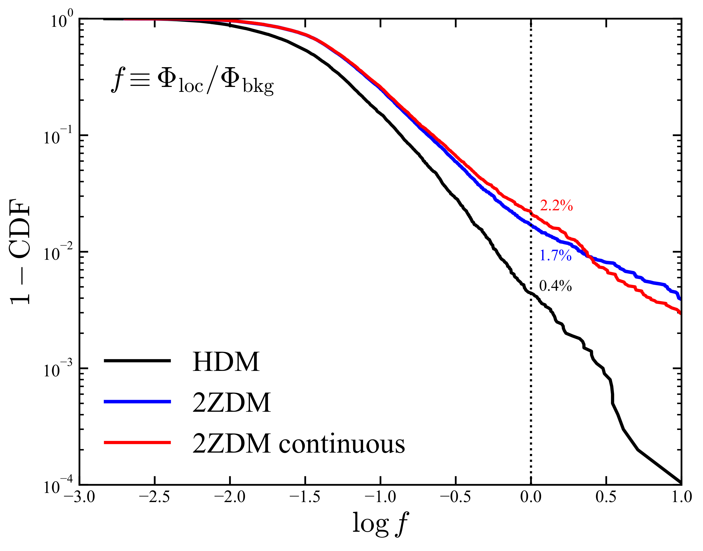<br />
图注：The cumulative probability distribution of $f$ obtained from $10^5$ Monte Carlo realizations at $10\,\rm{TeV}$. For this probability calculation, the same injection parameters are used for all three propagation models, i.e., $W_{\rm CR}=10^{50}\,\rm{erg}$, $\gamma_{\rm H}=2.30$, and $E_{\max}=500\,\rm{TeV}$. At $f=1$, the probability is $0.4\%$ for HDM, $1.7\%$ for 2ZDM with burst-like injection, and $2.2\%$ for 2ZDM with continous injection.<br />
对应解读：对应“局域源相对背景贡献分布图”和“均匀扩散与两区扩散的蒙特卡罗概率比较表”，也是关键图表导读中图4所说的尾部概率诊断。<br />
入选理由：这张图直接给出10 TeV处局域源贡献比例f的累计概率分布，并明确标出HDM的0.4%以及两区扩散模型的1.7%和2.2%，是支撑本文核心统计结论的最关键证据。相比平均谱图，它更能展示日报强调的尾部概率而非平均值。<br />
来源与置信度：\(arxiv_source\)；high；\(arxiv_source\) / \(ms_01.tex\):figure[5]</p>
<p><strong>Fig06</strong><br />
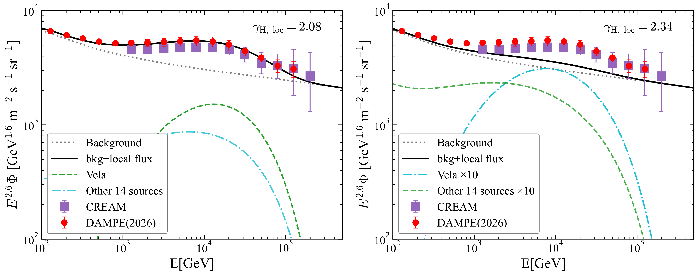<br />
图注：Proton spectrum obtained by adding the fifteen nearby candidates in Table~\(\ref{tab:Nearby_pulsars}\) to the stochastic Galactic background, with burst-like 2ZDM ($r_1=0.05\,\rm{kpc}$, $\eta=\beta=100$). The background is defined as the average flux over $10^4$ realizations after excluding sources with heliocentric distance $d<0.5\,$kpc. All sources are assumed to inject $W_{\rm CR}=10^{50}\,\mathrm{erg}$. Upper panel: $\gamma_{\rm H,bkg}=2.34$, $E_{\max,bkg}=500\,\mathrm{TeV}$ for the background population, and $\gamma_{\rm H,loc}=2.08$, $E_{\max,loc}=50\,\mathrm{TeV}$ for the nearby candidates. Lower panel: same as the upper panel, except $\gamma_{\rm H,loc}=2.34$. Nearby-source fluxes in the lower panel are multiplied by 10 for visibility. Data are from DAMPE \(\cite{DAMPE2026ChargeDependent}\) and CREAM \(\cite{yoon2017proton}.\)<br />
对应解读：对应“候选附近超新星遗迹拟合图”和模型拟合段落中关于硬局域注入谱、背景加局域源、低高能残差的讨论。<br />
入选理由：该图把十五个附近候选源加入随机银河背景后与DAMPE和CREAM质子谱比较，并上下两 panel 对比硬局域谱指数gamma_loc=2.08与普通谱指数gamma_loc=2.34的效果，直接检验10 TeV结构是否依赖硬谱假设，是候选源解释是否自然的核心图。<br />
来源与置信度：\(arxiv_source\)；high；\(arxiv_source\) / \(ms_01.tex\):figure[6]</p>
<p><strong>Fig07</strong><br />
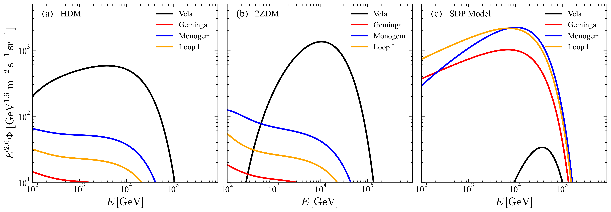<br />
图注：Proton fluxes from Vela, Geminga, Monogem, and Loop~I for different propagation models. The panels show (a) HDM, (b) 2ZDM, and (c) SDP adopted by Liu et al.~\(\cite{Liu2019NearbySource}\) and Zhao et al.~\(\cite{Zhao2022GemingaSNR}.\) All candidates are assigned the same injection spectrum $W_{\rm CR}=10^{50}\,\rm{erg}$, $\gamma_{\rm H}=2.08$, and $E_{\max}=50\,\rm{TeV}$ with burst-like injection.<br />
对应解读：对应详细解读中“给定源的预测贡献在不同粒子传输模型间变化很强”和参数/模型依赖性讨论。<br />
入选理由：该图逐一展示Vela、Geminga、Monogem和Loop I在HDM、2ZDM和SDP三种传播模型下的通量差异，最直观地说明同一个目录源的结论高度依赖传播模型。它补充Fig06的拟合图，突出模型依赖性而非单一最佳拟合。<br />
来源与置信度：\(arxiv_source\)；high；\(arxiv_source\) / \(ms_01.tex\):figure[7]</p>
<p><strong>Fig01</strong><br />
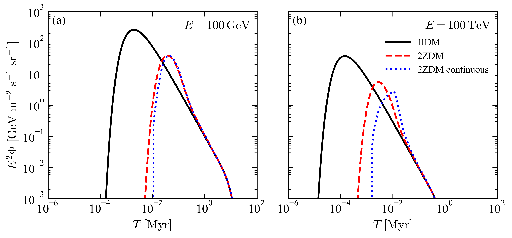<br />
图注：Flux from a source at $r=0.1\,\rm{kpc}$ as a function of time calculated with parameters from Table~\(\ref{tab:Parameters}\) for different propagation models. Solid black, dashed red, and dotted blue curve represent the result under HDM with burst-like injection, 2ZDM with burst-like injection, and 2ZDM with continuous injection respectively. The left panel is for $100\,\rm{GeV}$, and the right panel is for $100\,\rm{TeV}$.<br />
对应解读：对应“单源通量随时间或能量变化图”和关键图表导读中关于慢扩散如何延迟峰值、展宽到达时间的物理直觉。<br />
入选理由：该图比较0.1 kpc单源在100 GeV和100 TeV下，HDM爆发注入、2ZDM爆发注入、2ZDM连续注入的通量随时间演化，直接展示慢扩散并非简单增强通量，而是改变到达时间和能量响应。<br />
来源与置信度：\(arxiv_source\)；high；\(arxiv_source\) / \(ms_01.tex\):figure[1]</p>
<p><strong>Fig09</strong><br />
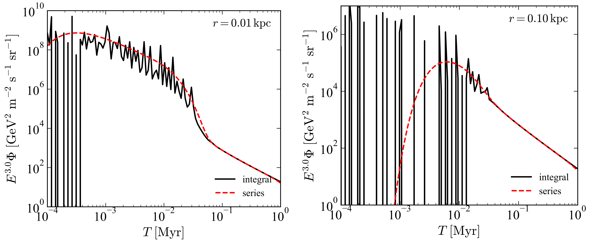<br />
图注：Comparison between the integral solution by Osipov et al.~\(\cite{osipov2020energetic}\) (solid black curves) and the eigenmode series solution derived in this work (dashed red curves). Energy losses are neglected in both calculations. The curves show $E^{3}\Phi$ at $E=10\,\rm{TeV}$ for an observer inside the slow-diffusion region ($r=0.01\,\rm{kpc}$) in the upper panel and outside it ($r=0.1\,\rm{kpc}$) in the lower panel. The benchmark parameters are $r_1=0.05\,\rm{kpc}$ and $\eta=\beta=100$. The series solution uses 500 roots. The integral solution uses 160 Gauss-Laguerre integration nodes on the integral variable $\psi$.<br />
对应解读：对应“两区扩散格林函数验证图”和关键图表导读中关于级数解可靠性的检查。<br />
入选理由：该图将本文推导的本征模级数解与已有积分解在10 TeV处进行对比，并分别测试观测者位于慢扩散区内外的情况，是验证解析工具可信度的主要图。它支撑后续大规模蒙特卡罗计算的技术基础。<br />
来源与置信度：\(arxiv_source\)；high；\(arxiv_source\) / \(ms_01.tex\):figure[9]</p>
<p><strong>Fig04</strong><br />
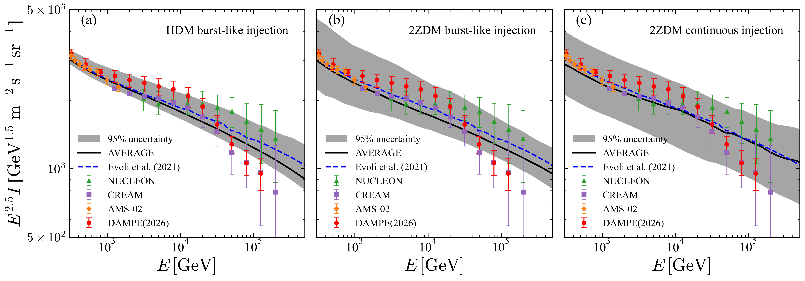<br />
图注：Proton spectrum obtained from $10^4$ Monte Carlo realizations of the Galactic SNR population. The solid lines show the average flux, while the shaded regions represent the $95\%$ confidence interval, defined by the $2.5\%$ and $97.5\%$ percentiles of the flux distribution. The blue dashed line shows the result of Evoli et al.~\(\cite{Evoli2021Stochastic}.\) Panel (a) corresponds to the HDM. Panels (b) and (c) show the 2ZDM with $r_1=0.05\,\rm{kpc}$ and $\eta=\beta=100$, assuming burst-like injection and continuous injection ($t_0=0.001\,\rm{Myr}$), respectively. For all three figures the injection index is $\gamma_H=2.30$. The adopted CR energies per source are $W_{\rm CR}=10^{50}\,\rm{erg}$ per source in panel (a), $W_{\rm CR}=1.2\times10^{50}\,\rm{erg}$ in panel (b) and $W_{\rm CR}=1.8\times10^{50}\,\rm{erg}$ in panel (c). Data from DAMPE \(\cite{DAMPE2026ChargeDependent},\) AMS-02 \(\cite{aguilar2015precision,aguilar2021alpha},\) CREAM \(\cite{yoon2017proton},\) and NUCLEON \(\cite{grebenyuk2019energy}\) are shown for comparison.<br />
对应解读：对应蒙特卡罗源群谱分布、置信区间和观测能谱比较，也关联模型拟合段落中的背景谱与系统偏差检查。<br />
入选理由：该图展示10^4次银河SNR蒙特卡罗实现得到的质子平均谱和95%置信区间，并对比HDM与两种2ZDM注入情形及多实验数据。它虽不直接给出f=1尾部概率，但能显示两区扩散如何改变整体谱分布及其不确定带。<br />
来源与置信度：\(arxiv_source\)；high；\(arxiv_source\) / \(ms_01.tex\):figure[4]</p>
<h4 id="_13">强相关工作</h4>
<p>这篇工作与两条文献线直接相关。第一条是宇宙线直接探测发现的谱硬化和多 TeV 结构，包括 AMS、CREAM、DAMPE、CALET 等实验的质子和氦核谱。可检索关键词包括 “cosmic ray proton helium spectral hardening TeV structure AMS DAMPE CALET CREAM”、“local source cosmic ray spectrum TeV”。这些研究提供了要解释的能谱事实，但不同实验之间的能标和系统误差也是解释局部结构时必须处理的张力来源。</p>
<p>第二条是近源慢扩散和 TeV 伽马射线晕文献，典型对象包括 Geminga 和 Monogem 周围的扩展 TeV 发射。HAWC 对这些源的观测常被用来说明源附近扩散系数可能远低于银河平均值。本文把这种近源慢扩散思想移植到核子宇宙线局域源问题，并用源群统计检验其自然性。可检索关键词包括 “TeV halo inhibited diffusion Geminga Monogem HAWC”、“two-zone diffusion cosmic rays nearby supernova remnants”。</p>
<p>相反或存在张力的观点包括：谱结构可能来自全银河扩散系数的刚度断裂，而不是单个局域源；也可能来自源群平均注入谱的非单幂律；或者由太阳调制、实验能标和数据展开造成部分表观结构。判别这些方案需要同时比较能谱、组成、次级/初级比、伽马射线晕和各向异性。</p>
<p><strong>同一事件 / 同类源线索</strong>：</p>
<ul>
<li><a href="https://arxiv.org/abs/2606.19701">https://arxiv.org/abs/2606.19701</a></li>
<li><a href="https://arxiv.org/abs/1702.02992">https://arxiv.org/abs/1702.02992</a></li>
</ul>
<p><strong>相似工作</strong>：</p>
<ul>
<li><a href="https://arxiv.org/abs/1702.02992">https://arxiv.org/abs/1702.02992</a></li>
</ul>
<p><strong>基础理论 / 方法工作</strong>：</p>
<ul>
<li><a href="https://ui.adsabs.harvard.edu/abs/1964PhRvL..13..144G/abstract">https://ui.adsabs.harvard.edu/abs/1964PhRvL..13..144G/abstract</a></li>
</ul>
<p><strong>相反观点 / 张力线索</strong>：</p>
<p>（未提供）</p>
</details>
<h3 id="2-vaster-the-askap-real-time-fast-imaging-pipeline-overview-and-discovery-of-two-long-period-transients">2. VASTER: The ASKAP real-time fast-imaging pipeline -- overview and discovery of two long period transients</h3>
<ul>
<li>来源：arXiv / astro-ph.HE</li>
<li>链接：https://arxiv.org/abs/2606.20067v1</li>
<li>作者：Yuanming Wang, Dougal Dobie, Tara Murphy, Emil Lenc, David L. Kaplan, Joshua Pritchard, Daniel Mitchell, Wasim Raja</li>
<li>评分：novelty 8/10，importance 8/10，relevance 8/10，final 9.00/10</li>
<li>推荐理由：ASKAP实时快成像瞬变管线VASTER及两个长周期瞬变发现，兼具可复用仪器/实时处理方法和新瞬变源发现，对紧致天体与时域巡天读者有较高价值。</li>
</ul>
<p><strong>中文题目</strong>：VASTER：ASKAP 实时快速成像暂现源流水线及两个长周期暂现源的发现</p>
<p><strong>做了什么</strong>：这篇论文介绍了在澳大利亚平方公里阵列探路者 ASKAP 上实时运行的短时标成像与暂现源搜索流水线 VASTER，并给出上线前两周的科学产出。VASTER 把大量原本只用于常规巡天的 ASKAP 数据切成约 15 分钟时标的宽视场射电图像，实时做源提取、交叉匹配和候选筛选。作者报告发现两个新的长周期射电暂现源：ASKAP J165130.3−450520，周期约为 \(6.48\,\mathrm{h}\)；ASKAP J170036.6−445758，周期约为 \(4.69\,\mathrm{h}\)。论文的重点不仅是两个源本身，也在于证明宽视场射电阵列可以把“秒到分钟成像暂现源搜索”从离线归档分析推进到实时运行。</p>
<p><strong>为什么重要</strong>：长周期射电暂现源是近几年才显露出来的一类对象，周期从几十分钟到数小时，亮度高、占空比低，和普通脉冲星、磁星、白矮星双星或耀发恒星都不完全吻合。过去许多发现依赖归档数据离线重处理，响应慢、选择函数难以量化。VASTER 的重要性在于：它把这类搜索嵌入 ASKAP 的日常观测流，能在事件发生后很短时间内发现候选源，显著提高多波段跟进和重复爆发监测的机会。</p>
<p><strong>理论 / 观测 / 仪器方法价值</strong>：对观测方法而言，VASTER 展示了宽视场干涉阵列在 \(\sim 15\,\mathrm{min}\) 成像时标上的实时处理框架，包括校准、成像、源表生成、交叉匹配、候选排序和人工/自动质控。对科学问题而言，两个新源扩充了仍很小的长周期暂现源样本，使人们能开始讨论周期、亮度、银纬分布、持续时间和重复性等统计性质。对未来仪器而言，它是 SKA 时代实时射电暂现源成像搜索的先导案例。</p>
<p><strong>为什么应该关注</strong>：如果你关心致密天体、射电暂现源、巡天选择效应或实时天文，这篇文章值得读。它说明“没有被发现”并不等于“罕见”：许多分钟到小时周期的射电源可能只是被传统快照间隔、脉冲搜索策略和离线处理模式漏掉了。VASTER 也提醒我们，下一代射电暂现源发现不只取决于望远镜灵敏度，还取决于数据流、响应时间、候选过滤和可追踪的选择函数。</p>
<details class="paper-detail">
<summary>展开详细解读：文章讲解、背景、理论、重点章节、图表与相关工作</summary>
<h4 id="_14">文章详细讲解</h4>
<p>科学问题：论文瞄准的是射电时域里一个长期空白的区域，即持续数分钟、重复周期为数十分钟到数小时的暂现源。传统脉冲星搜索擅长毫秒到秒级周期，常规射电巡天擅长静态或年际变量源，快速射电暴搜索则针对毫秒爆发；但宽视场干涉阵列在秒到分钟成像上的系统搜索长期不足。近几年发现的长周期射电暂现源显示，这个参数空间可能包含一种新的致密天体活动方式，也可能混有极端闪烁、恒星射电爆发和少见的磁层过程。</p>
<p>作者怎么做：VASTER 被设计成 ASKAP 上实时运行的快速成像流水线。它不是等待观测结束后再做归档搜索，而是在 ASKAP 巡天项目观测期间，把数据以约 \(15\,\mathrm{min}\) 为单位形成图像，执行源提取和暂现源筛选。论文描述了系统结构、与 ASKAP 数据流的连接、图像产品、候选源识别逻辑，以及第一批运行结果。作者特别强调 VASTER 利用了 ASKAP 的大视场优势，因此能在不专门占用大量额外望远镜时间的情况下覆盖大量天空面积。</p>
<p>关键结果：上线最初两周内，VASTER 已经发现两个新的长周期暂现源。ASKAP J165130.3−450520 呈现约 \(6.48\,\mathrm{h}\) 周期，ASKAP J170036.6−445758 呈现约 \(4.69\,\mathrm{h}\) 周期。两个源的周期都明显长于普通射电脉冲星的自转周期，也落在近年长周期暂现源群体正在扩展的范围内。由于它们是在实时成像管线中被发现的，论文证明这类源并非只能通过费力的归档挖掘得到，而可以成为常规实时巡天的自然产物。</p>
<p>局限和下一步：摘要层面尚不能确认这两个源的物理本质。长周期并不自动等于超慢磁星，也可能涉及强磁白矮星、双星调制、相干辐射的几何扫掠、等离子体透镜或恒星活动。下一步需要更密集的射电复测、偏振测量、频谱测量、色散或法拉第旋转约束，以及光学、红外和 \(X\) 射线对应体搜索。方法上还需要量化 VASTER 的完整选择函数：不同视场噪声、离轴响应、图像伪影、源密集区和周期采样窗口都会影响真实发生率估计。</p>
<h4 id="_15">关键结果是怎么做出来的</h4>
<p>样本和数据选择的核心是 ASKAP 在 2025 年 7 月以来的 survey project 数据流。VASTER 并非只针对某个预选天区，而是对多数 ASKAP 巡天数据做约 \(15\,\mathrm{min}\) 成像处理，因此第一批结果来自一个相对“搭便车”的宽视场巡天样本。论文的第一阶段报告覆盖最初两周运行数据；这个时间窗不长，但足以检验端到端实时处理是否稳定，也足以给出两个强候选长周期暂现源。</p>
<p>候选源的证据链大致包括：在单个或多个 \(15\,\mathrm{min}\) 图像中出现显著射电点源；在参考静态源表或邻近时间图像中没有稳定对应体；位置与已知明亮伪影、旁瓣、边缘响应异常和校准坏区不一致；重复出现时间可以被一个小时量级周期相位折叠。两个源的命名 ASKAP J165130.3−450520 和 ASKAP J170036.6−445758 说明位置来自 ASKAP 成像坐标，周期分别为 \(6.48\,\mathrm{h}\) 和 \(4.69\,\mathrm{h}\)。</p>
<p>显著性判断在这类工作里通常不只是单张图像的峰值信噪比，而要结合源提取阈值、独立波束数、图像数量和候选过滤后的试验因子。读者应重点查看论文是否给出每次检出的通量密度、局部均方根噪声、图像动态范围、候选源到相位中心距离、以及周期折叠后的相位一致性。若周期来自少数几个爆发窗口，周期别名和采样窗口函数会是最关键的统计问题。</p>
<p>支撑结论的图表应包括流水线结构图、观测覆盖或曝光图、候选源的射电图像切片、光变曲线、周期搜索或相位折叠图，以及候选过滤统计表。对于两个新源，最有说服力的应是光变曲线中多个独立周期相位的重复检出，而不是单次孤立亮点。若论文给出了候选源在不同 ASKAP 波束、不同成像批次或不同质量控制设置下的复现结果，这些是判断稳健性的关键。</p>
<p>系统误差主要来自干涉成像伪影、离轴主瓣校正误差、强源旁瓣、时变电离层、源提取阈值漂移和参考源表不完整。稳健性检验应包括改变源提取阈值、排除低质量图像、检查 Stokes 参数或偏振泄漏、核对邻近已知强源、与历史巡天图像比较，以及在空白天区估计假阳性率。由于论文是系统概述加首批发现，最值得追问的是：两个发现源对应的有效搜索面积、有效驻留时间和完整性校正是否足以支持发生率推断，还是目前只能视为发现报告。</p>
<details class="paper-subdetail">
<summary>展开背景、理论、公式、模型、章节和图表导读</summary>
<h4 id="_16">背景知识</h4>
<p>长周期射电暂现源指一类在射电波段以分钟到小时周期重复发亮、单次活动持续数十秒到数分钟甚至更长的源。它们与传统射电脉冲星不同：普通脉冲星周期多在毫秒到数秒，辐射窗口窄，常用相干或非相干去色散的时间序列搜索发现。长周期源的爆发在成像数据中更容易显现，因为持续时间足以被短积分图像捕捉，但周期又太长，传统脉冲星折叠搜索往往不经济或不敏感。</p>
<p>历史上，射电时域大体分成几块：毫秒级快速射电暴和脉冲星单脉冲，秒级到分钟级恒星耀发和行星磁层辐射，天到年级别的超新星、潮汐瓦解事件、活动星系核变化和伽马暴余辉。分钟到小时周期的宽视场成像搜索夹在中间，既要求高时间采样，又要求干涉成像质量和大面积覆盖，因此过去缺少系统性巡天。</p>
<p>ASKAP、MWA、MeerKAT、LOFAR 等宽视场阵列改变了这个局面。它们能同时覆盖大天区，并在较短积分时间内达到毫焦量级或更好的灵敏度。过去几年，归档数据里发现的长周期射电源引发了关于超长周期磁星、白矮星脉冲星、磁化双星和未知相干辐射机制的讨论。VASTER 的出现，正是因为这些发现提示我们：如果只依赖离线归档搜索，样本增长会慢，且触发多波段跟进的机会常常错过。</p>
<p>现在值得重新看的原因还有一个：实时处理本身会改变科学产出。若一个源刚被发现就能触发复测，就可以测到活动窗口、偏振、频谱、短时子结构和多波段对应体；而如果几年后才在归档里发现，许多关键信息已经不可追回。常见误区是把长周期暂现源简单归入“慢脉冲星”。实际上，一旦周期接近小时，若解释为孤立中子星自转，需要面对旋转能预算、死亡线、磁层电压和辐射几何的严苛约束。</p>
<h4 id="_17">基础理论 / 方法脉络</h4>
<p>从物理图像看，射电暂现源的可观测量首先是随时间变化的通量密度 \(S_\nu(t)\)、频谱 \(S_\nu\propto \nu^\alpha\)、偏振性质和重复周期。相干辐射源可以在较小体积内产生极高亮温度，因而很容易与热辐射、普通同步辐射耀斑区分。若爆发持续时间为 \(\Delta t\)，光行时给出辐射区尺度上限约为 \(R\lesssim c\Delta t\)，这使亮温度估计成为判断辐射机制的第一步。</p>
<p>对干涉阵列而言，VASTER 依赖的是成像暂现源搜索，而不是直接在波束形成时间序列中搜脉冲。成像搜索的优势是可以同时定位源、剔除局部射频干扰和旁瓣伪影，并天然适合持续时间接近积分时间的事件。缺点是短积分图像的热噪声、动态范围限制和主瓣校正误差会比深积分图更突出；此外，若爆发显著短于 \(15\,\mathrm{min}\) 积分，通量会被时间平均稀释。</p>
<p>本文的关键方法假设包括：候选源在单个短时标图像中可被点源模型近似；局部背景噪声近似可用图像均方根描述；静态源可通过参考源表或相邻时间图像剔除；周期性可通过检出时间序列的周期搜索或相位折叠体现。对 ASKAP 这类多波束宽视场仪器，还必须考虑离轴灵敏度、波束形状和不同天区覆盖深度，否则不能把发现数直接转换成天体发生率。</p>
<p>常见退化包括真实源变化与成像伪影之间的退化、源内禀周期与采样窗口别名之间的退化、频谱陡峭源与低频灵敏度选择之间的退化，以及爆发占空比与峰值通量之间的退化。举例说，一个峰值很高但占空比很小的源，在 \(15\,\mathrm{min}\) 图像中可能只表现为中等通量；而一个持续时间较长但较暗的源则更容易被成像管线发现。这意味着 VASTER 的选择函数不是简单的固定通量阈值。</p>
<h4 id="_18">公式与推导</h4>
<p>第一步从干涉测量的基本关系出发。理想小视场近似下，基线测得的复可见度与天空亮度满足</p>
<div class="math-display">\[V(u,v)=\int\!\!\int I(l,m)\,A(l,m)\,e^{-2\pi i(ul+vm)}\,dl\,dm,\]</div>
<p>其中 \(V(u,v)\) 是空间频率 \((u,v)\) 上的可见度，\(I(l,m)\) 是方向余弦 \((l,m)\) 处的天空亮度，\(A(l,m)\) 是主波束响应。VASTER 的短时标图像本质上就是在每个时间块内从采样的 \(V(u,v)\) 重建 \(I(l,m)\)。</p>
<p>第二步是图像噪声。若系统等效通量密度为 \(\mathrm{SEFD}\)，带宽为 \(\Delta\nu\)，积分时间为 \(t_{\rm int}\)，有效极化数为 \(n_{\rm pol}\)，天线数为 \(N\)，热噪声近似为</p>
<div class="math-display">\[\sigma_S\simeq {\mathrm{SEFD}\over \eta_s\sqrt{n_{\rm pol}N(N-1)\Delta\nu t_{\rm int}}},\]</div>
<p>其中 \(\eta_s\) 是效率因子。这个式子说明 \(15\,\mathrm{min}\) 图像的灵敏度随 \(t_{\rm int}^{-1/2}\) 改善，但过长积分会稀释短爆发。</p>
<p>第三步考虑爆发被时间平均的效应。若源在持续时间 \(\Delta t\) 内峰值通量密度为 \(S_{\nu,\rm pk}\)，而图像积分时间为 \(t_{\rm int}\)，则观测到的平均通量近似为</p>
<div class="math-display">\[\bar S_\nu \simeq S_{\nu,\rm pk}\,{\min(\Delta t,t_{\rm int})\over t_{\rm int}}.\]</div>
<p>因此 VASTER 对持续接近 \(15\,\mathrm{min}\) 的事件最自然敏感；对秒级事件，它仍可成像但信号会被显著稀释。</p>
<p>第四步是源提取显著性。单张图像中点源候选的信噪比可写为</p>
<div class="math-display">\[\rho={S_{\nu,\rm fit}\over \sigma_{\rm local}},\]</div>
<p>其中 \(S_{\nu,\rm fit}\) 是点源拟合通量密度，\(\sigma_{\rm local}\) 是局部图像均方根噪声。实际阈值不能只看 \(\rho\)，还要乘以独立合成波束数和图像数量带来的试验因子。</p>
<p>第五步是假阳性概率。若噪声近似高斯，单个独立单元超过阈值 \(\rho_0\) 的概率为</p>
<div class="math-display">\[p_1={1\over 2}\,\mathrm{erfc}\left({\rho_0\over \sqrt{2}}\right),\]</div>
<p>若有 \(N_{\rm trial}\) 个独立试验，则至少一个噪声峰超过阈值的概率近似为</p>
<div class="math-display">\[p_{\rm FA}\simeq 1-(1-p_1)^{N_{\rm trial}}\simeq N_{\rm trial}p_1.\]</div>
<p>这就是为什么宽视场实时搜索必须严格控制候选过滤和质量标记。</p>
<p>第六步描述周期性。对非均匀采样的通量序列 \(S_i\) 和观测时间 \(t_i\)，可用类似 Lomb-Scargle 的周期功率检验</p>
<div class="math-display">\[P(\omega)={1\over 2\sigma_S^2}\left[{\left(\sum_i (S_i-\bar S)\cos\omega(t_i-\tau)\right)^2\over \sum_i \cos^2\omega(t_i-\tau)}+{\left(\sum_i (S_i-\bar S)\sin\omega(t_i-\tau)\right)^2\over \sum_i \sin^2\omega(t_i-\tau)}\right],\]</div>
<p>其中 \(\omega=2\pi/P\)，\(P\) 是试探周期，\(\tau\) 是使正弦和余弦项正交的时间偏移。对本文两个源，关键就是 \(P\simeq 6.48\,\mathrm{h}\) 和 \(P\simeq 4.69\,\mathrm{h}\) 是否显著优于别名周期。</p>
<p>第七步是相位折叠。给定周期 \(P\) 和参考历元 \(t_0\)，每个观测点相位为</p>
<div class="math-display">\[\phi_i=\left[{t_i-t_0\over P}\right]\bmod 1.\]</div>
<p>若多个独立检出集中在同一相位窗口，而非检出分布在其他相位，就支持周期性解释。相位窗口宽度还给出爆发占空比的估计。</p>
<p>第八步把发现数与发生率联系起来。若在有效天空覆盖 \(\Omega_{\rm eff}\)、有效时间 \(T_{\rm eff}\) 内发现 \(N_{\rm det}\) 个源，粗略面密度或事件率可写为</p>
<div class="math-display">\[\mathcal{R}\sim {N_{\rm det}\over \Omega_{\rm eff}T_{\rm eff}\,\epsilon(S_\nu,P,\Delta t)},\]</div>
<p>其中 \(\epsilon\) 是依赖通量、周期、持续时间、天区噪声和候选选择的探测效率。本文首批结果更适合作为发现展示；若要做总体发生率，\(\epsilon\) 的注入回收模拟不可缺少。</p>
<h4 id="_19">模型拟合 / 应用方法</h4>
<p>这类论文中的模型拟合首先体现在图像域点源拟合。每个候选源需要在短积分图像中拟合位置、峰值通量、积分通量和局部背景。对未解析源，峰值通量与积分通量应在合成波束误差内一致；若二者系统偏离，可能意味着源被旁瓣污染、局部背景不平或存在扩展结构。读者应关注作者是否给出局部噪声、拟合残差和候选源附近图像切片。</p>
<p>第二层拟合是时间域模型。最简单模型是“静态源加噪声”，与“周期性开关源”或“若干离散爆发窗口”比较。对长周期暂现源，周期拟合常受采样窗口影响，尤其在观测只覆盖若干天、每天又有固定时段时，\(24\,\mathrm{h}\) 相关别名会很危险。因此应检查周期搜索峰的宽度、次峰、折叠相位图和对去掉单个检出点后的稳健性。</p>
<p>第三层是候选分类模型。VASTER 需要把真实天体源与射频干扰、校准伪影、强源旁瓣和已知变量源区分开。实际应用中常用多特征筛选：信噪比、离相位中心距离、邻近强源距离、图像质量标记、是否在多个相邻频段出现、是否与静态源表匹配、是否在多个独立观测块复现。若论文未来引入机器学习或贝叶斯分类，训练集的偏差和假阴性将成为关键问题。</p>
<p>参数退化主要包括峰值通量与占空比退化、周期与采样窗口退化、真实频谱与波束频率响应退化、偏振信号与仪器泄漏退化。举例说，若一个源只在 \(15\,\mathrm{min}\) 图像中出现一次，无法知道它是持续 \(15\,\mathrm{min}\) 的中等亮源，还是持续 \(1\,\mathrm{min}\) 的极亮源被平均稀释。后续更短积分成像或波束形成数据能打破这种退化。</p>
<p>模型可能失败的地方也很明确。若局部图像噪声非高斯，基于信噪比阈值的假阳性估计会过于乐观；若参考源表深度不足，普通变量源可能被误判为暂现源；若观测窗口稀疏，多个周期都能解释检出时间。实际应用中，最有力的验证是快速复测：在预测相位打开前后连续观测，确认源只在预期相位窗口出现，并同时测量频谱和偏振。</p>
<h4 id="_20">重点章节 / 结果段落怎么读</h4>
<ol>
<li>
<p>系统与动机部分：应先读作者如何定义 VASTER 的科学目标和时标范围。重点不是“又一个暂现源管线”，而是它运行在 ASKAP 实时数据流上，目标时标约为 \(15\,\mathrm{min}\)，覆盖传统脉冲星搜索和慢变量巡天之间的空白。</p>
</li>
<li>
<p>数据流与成像方法部分：重点看原始 ASKAP 数据如何被切分、校准、成像和源提取。读者应特别注意积分时间、频率覆盖、图像大小、主波束处理、源提取阈值、质量控制标记和计算延迟，因为这些决定了管线的实际选择函数。</p>
</li>
<li>
<p>候选源筛选部分：这一节决定发现是否可信。应关注候选源如何与已知源表匹配，如何排除图像伪影，如何处理强源旁瓣和边缘效应，以及是否有自动评分或人工复核。对实时系统来说，假阳性率和候选量同等重要。</p>
</li>
<li>
<p>两个长周期暂现源结果部分：逐个读 ASKAP J165130.3−450520 和 ASKAP J170036.6−445758 的位置、检出次数、通量范围、光变曲线、周期估计和可能对应体。最关键问题是周期是否由多个独立活动窗口支撑，而不是由少数点偶然排布产生。</p>
</li>
<li>
<p>讨论与展望部分：重点看作者如何把两个新源放入已有长周期暂现源样本中，以及他们是否讨论了发生率、选择效应和后续跟进计划。若论文给出 VASTER 长期运行预期，可据此评估未来几年样本增长速度。</p>
</li>
</ol>
<h4 id="_21">建议重点查看的图表</h4>
<ol>
<li>
<p>VASTER 流水线结构图：看数据从 ASKAP 观测到候选列表的每一步，尤其是实时延迟、成像块长度和人工/自动质控节点。</p>
</li>
<li>
<p>观测覆盖或曝光分布图：看前两周运行覆盖了哪些天区、银道面附近覆盖多少、噪声是否均匀。这直接影响发现两个源是否代表某类天区选择。</p>
</li>
<li>
<p>候选源图像切片：检查两个源在检出图像中的点源形态、局部背景、附近强源和旁瓣结构。真实点源应与合成波束一致，残差不应呈系统条纹。</p>
</li>
<li>
<p>光变曲线：看通量密度随时间的变化、未检出上限、各观测块误差条，以及爆发是否集中在少数窗口。未检出点和检出点同样重要。</p>
</li>
<li>
<p>周期搜索或相位折叠图：检查 \(6.48\,\mathrm{h}\) 和 \(4.69\,\mathrm{h}\) 的周期峰是否唯一，是否存在日周期别名，折叠后活动相位宽度是否稳定。</p>
</li>
<li>
<p>候选过滤统计表：看从初始源提取到最终两个源经历了多少过滤步骤，每步去掉什么类型的假候选。这是评估假阳性率的关键。</p>
</li>
<li>
<p>多波段或历史图像对照表：若有，应看是否存在光学、红外、\(X\) 射线或历史射电对应体；没有对应体也有物理约束意义。</p>
</li>
<li>
<p>注入回收或灵敏度诊断：若论文提供，应重点看探测效率随通量、持续时间、周期和离轴角的变化，这关系到能否从发现数推发生率。</p>
</li>
</ol>
<h4 id="_22">关键图表逐图导读</h4>
<p>图 1：通常应是 VASTER 系统架构或流程图。横向可以理解为数据流方向：ASKAP 原始或校准数据进入快速成像模块，随后进入源提取、交叉匹配、候选筛选和报警/存档。读图时不要只看模块名称，要看每一步是否给出时间延迟和数据产品；实时性是否成立，取决于最慢环节是否短于科学上需要的响应时间。</p>
<p>图 2：若为观测覆盖图，坐标轴多半是赤经、赤纬或银经、银纬，颜色表示曝光时间、图像数量或噪声水平。两个新源的位置若标在图上，应检查它们是否位于覆盖最深区域、银道面附近或强源密集区域。读图陷阱是把发现位置当作天体分布；在选择函数未校正前，它更多反映巡天覆盖。</p>
<p>图 3：候选源检出图像应显示源附近的射电强度，坐标为天球角距离，颜色为通量密度或信噪比。读者应检查源是否接近合成波束形状、是否有负碗或条纹残差、是否靠近图像边缘。若旁边有强源，需特别警惕旁瓣随时间变化造成的假暂现源。</p>
<p>图 4：光变曲线通常以时间为横轴、通量密度为纵轴，包含检出点和未检出上限。关键不是峰值有多高，而是爆发窗口是否重复、未检出上限是否足够深、误差条是否包括系统误差。若只有少数检出点，周期解释需要更谨慎。</p>
<p>图 5：周期图或相位折叠图应以试探周期或频率为横轴、周期功率或似然改善为纵轴；相位折叠图则以相位为横轴、通量或检出状态为纵轴。对 \(6.48\,\mathrm{h}\) 和 \(4.69\,\mathrm{h}\) 两个周期，读者应检查主峰与次峰的相对高度、置信区间如何定义，以及是否有由观测节律引起的别名峰。</p>
<p>图 6：若有候选过滤或质量控制图，常见形式是瀑布图、流程表或散点图。应看最终两个源是否位于高信噪比、低伪影风险区域，而不是贴近阈值边缘。若过滤阈值略改就会消失，结论稳健性会下降。</p>
</details>
<h4 id="_23">论文原图 / 可嵌入图片</h4>
<p><strong>Fig05</strong><br />
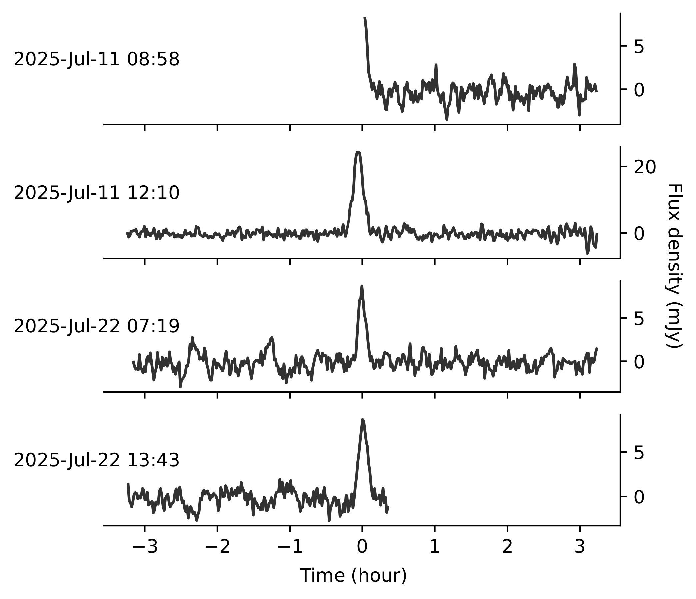<br />
图注：Four detected pulses of \(\lptone{}\) aligned to its measured period. The observation start times are listed on the left of each detection. The light-curve time resolution is averaged to 1\,min.<br />
对应解读：建议重点查看图表 4、5；关键图表逐图导读中关于光变曲线、周期/相位折叠图；模型拟合段落中的时间域周期性开关源检验。<br />
入选理由：这张图直接展示 ASKAP J165130.3−450520 的四次脉冲按 6.48 h 测得周期对齐后的结果，是验证第一个长周期暂现源周期解释的核心证据。它比普通候选光变图更关键，因为能同时检查脉冲重复性、相位一致性和分钟级时间结构。<br />
来源与置信度：\(arxiv_source\)；high；\(arxiv_source\) / main.tex:figure[5]</p>
<p><strong>Fig07</strong><br />
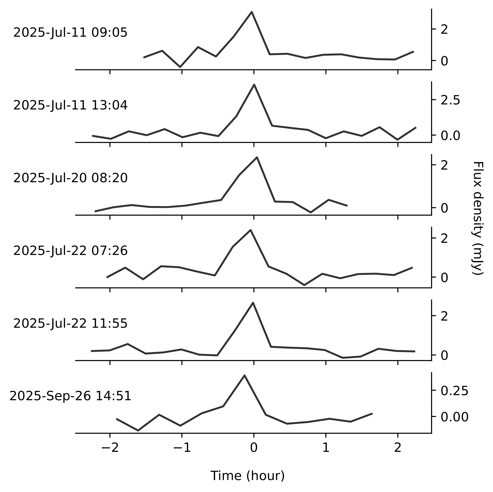<br />
图注：Six detected pulses of \(\lpttwo{}\) aligned to its measured period. The first five pulses were detected with ASKAP, and the last pulse was detected with MeerKAT. The observation start times are listed on the left of each detection. The light-curve time resolution is averaged to 15\,min.<br />
对应解读：建议重点查看图表 4、5；关键图表逐图导读中关于光变曲线、周期/相位折叠图；模型拟合段落中的采样窗口与周期稳健性讨论。<br />
入选理由：这张图直接展示 ASKAP J170036.6−445758 的六次脉冲按 4.69 h 周期对齐，其中还包含 MeerKAT 后续检出，对确认第二个长周期暂现源尤其重要。相比单次检出图，它更能支撑周期性、复现性和跨望远镜验证。<br />
来源与置信度：\(arxiv_source\)；high；\(arxiv_source\) / main.tex:figure[7]</p>
<p><strong>Fig10</strong><br />
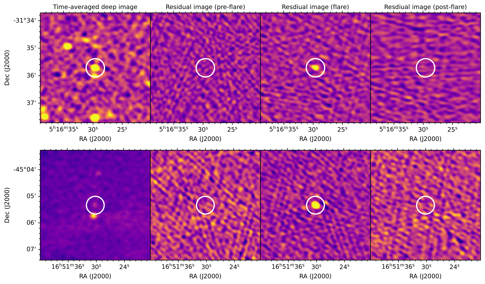<br />
图注：\updated{Examples of transient detections in the time-averaged deep images and short-timescale residual images, plotted from the VASTER outputs, for two sources: the flaring star ASKAP~J051629.6$-$313543 (top row) and the LPT ASKAP~J165130.3$-$450520 (bottom row). From left to right in each row: the time-averaged deep image, the residual image prior to the flare, the residual image during the flare, and the residual image after the flare. The white circle marks the target source position, with a radius of 20\,arcsec. While the deep image contains multiple sources, these are effectively subtracted in the residual images; only the transient emission from the target source is visible during the flare.}<br />
对应解读：建议重点查看图表 3；关键图表逐图导读中关于候选源图像切片、点源形态、局部背景和残差图的段落；模型拟合中关于图像域点源拟合与残差检查的讨论。<br />
入选理由：这张图给出时间平均深图、爆发前残差、爆发中残差和爆发后残差，并包含 LPT ASKAP J165130.3−450520，是判断暂现源是否为真实点源而非静态源残留或旁瓣伪影的最佳候选图。它直接对应日报强调的图像切片和残差诊断。<br />
来源与置信度：\(arxiv_source\)；high；\(arxiv_source\) / main.tex:figure[10]</p>
<p><strong>Fig01</strong><br />
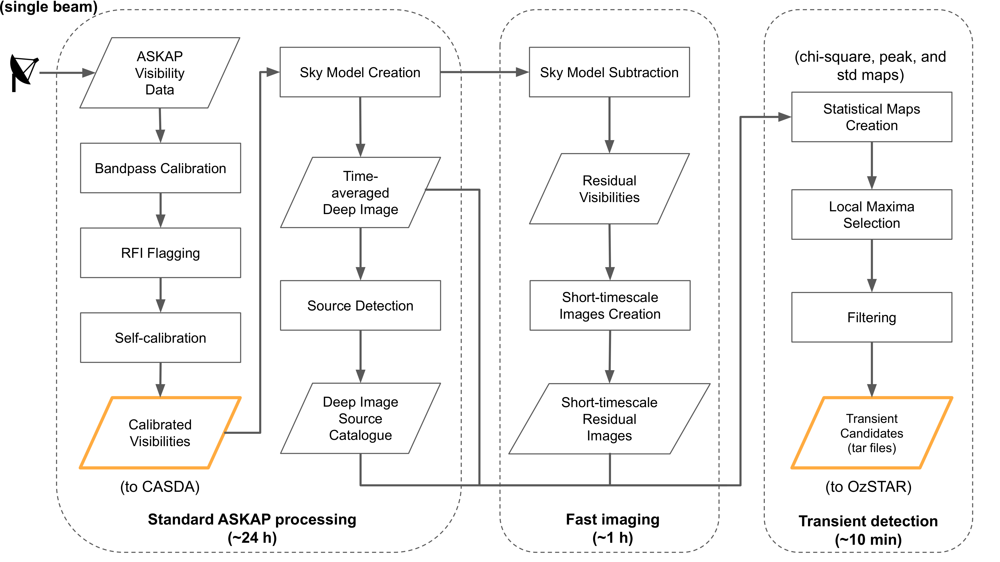<br />
图注：Flowchart of the VASTER real-time system. An overview of the system is described in Section~\(\ref{sec:vaster},\) with the \updated{<code>fast imaging'} described in Section~\ref{sec:fast_imaging_processing} and the</code>transient detection' described in Section~\(\ref{sec:transient_detection}.\) All processing is performed independently on individual beams. \(\updated{We list the typical processing time for each part for a typical 10\,h observation.}\) The inputs for the transient detection are the time-averaged deep image, the deep image source catalogue, and the short-timescale residual images. Two data products are saved during the process (marked as orange): the standard ASKAP calibrated visibilities (archived in CASDA) and the VASTER transient candidates (tar files; stored on OzSTAR). See more details about data storage and release in Section~\(\ref{sec:data_storage_and_release}.\)<br />
对应解读：建议重点查看图表 1；关键图表逐图导读中的 VASTER 系统架构或流程图；详细解读中关于实时快速成像流水线的描述。<br />
入选理由：这张图是 VASTER 实时系统流程图，标出了 ASKAP 数据进入快速成像、暂现源检测、候选保存和数据归档的完整链路，并给出典型处理时间。它最能支撑日报关于“实时性是否成立”和“15 min 成像块如何进入候选筛选”的方法学解读。<br />
来源与置信度：\(arxiv_source\)；high；\(arxiv_source\) / main.tex:figure[1]</p>
<p><strong>Fig02</strong><br />
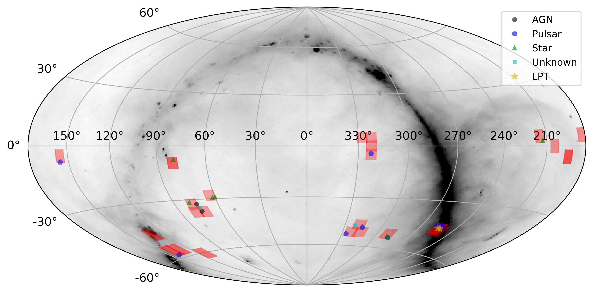<br />
图注：Sky coverage of the observations used for the initial results (shown as red shaded regions). Markers represent detected transient and variable sources (see details in Section~\ref{sec:results}). The background is the diffuse Galactic radio emission at 943.5\,MHz modelled by \(\citet{Zheng2017MNRAS.464.3486Z}.\)<br />
对应解读：建议重点查看图表 2；关键图表逐图导读中的观测覆盖或曝光分布图；详细解读中关于选择函数和天区覆盖偏差的段落。<br />
入选理由：这张图展示初始结果所用观测的天空覆盖，并叠加检测到的暂现/变量源位置和银河射电背景。它对于判断两个新源是否位于特定覆盖区域、银道面附近或强背景区域非常重要，可帮助读者避免把发现位置直接误读为真实天体空间分布。<br />
来源与置信度：\(arxiv_source\)；high；\(arxiv_source\) / main.tex:figure[2]</p>
<p><strong>Fig04</strong><br />
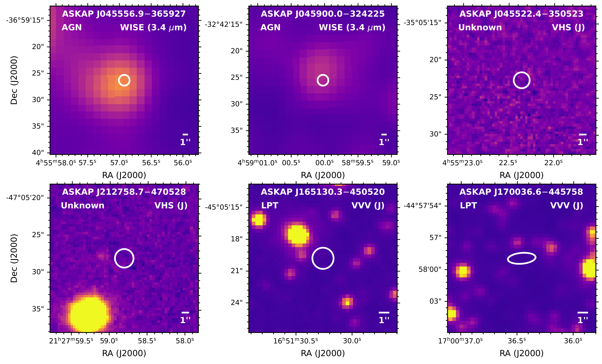<br />
图注：Optical images overlaid with the $1\sigma$ positional uncertainty regions of the radio sources requiring further multi-wavelength searches. For each panel, the source name, classification, optical/infrared survey, and observing band are shown at the top. The angular scale is shown in the lower right corner. The $1\sigma$ localisation region of the radio source is given by the white ellipse. The positional uncertainties are derived from ASKAP observations (with added 1\,arcsec uncertainty floor to account for potential \updated{systematic astrometric errors}), except for \(\lpttwo{},\) which is derived from the MeerKAT observation. See discussions in Section~\(\ref{sec:results}.\)<br />
对应解读：建议重点查看图表 7；关键图表逐图导读中关于多波段或历史图像对照的要求；详细解读中关于光学、红外和 X 射线对应体搜索的下一步。<br />
入选理由：这张图把需要进一步多波段搜索的射电源定位误差椭圆叠加在光学/红外图像上，并注明了系统天测误差处理。它能支撑日报关于对应体缺失或候选对应体的物理约束讨论，虽然不如周期对齐图和残差图直接证明 LPT 发现本身。<br />
来源与置信度：\(arxiv_source\)；high；\(arxiv_source\) / main.tex:figure[4]</p>
<h4 id="_24">强相关工作</h4>
<p>这篇工作与近年长周期射电暂现源发现直接相关，属于同类源和同类搜索方法的扩展。已有工作多来自 MWA、ASKAP 或其他低频/中频宽视场阵列的归档搜索，代表性关键词包括“long-period radio transient”、“ultra-long period magnetar”、“GLEAM-X J162759.5-523504.3”、“GPM J1839-10”、“ASKAP radio transient imaging survey”。这些论文提供了物理解释上的参照：若周期达到小时量级，普通旋转供能中子星模型会遇到能量和磁层死亡线问题，因此磁星、白矮星脉冲星或双星相干辐射模型都被讨论过。</p>
<p>方法上，VASTER 与传统 VAST/ASKAP 暂现源巡天、MWA 低频归档成像搜索和 MeerKAT/LOFAR 时域管线相邻，但它的突出点是实时性。相反观点或张力主要体现在两个方面：一是长周期源是否真是新天体族群，还是若干不同物理源类在选择效应下的混合；二是周期性是否足以指向自转，还是可能来自轨道调制、传播效应或活动窗口。建议检索关键词：“ASKAP VAST transient survey”、“real-time radio imaging transient pipeline”、“radio interferometric transient false positives”、“long period radio transient population synthesis”。</p>
<p><strong>同一事件 / 同类源线索</strong>：</p>
<ul>
<li><a href="https://arxiv.org/abs/2606.20067">https://arxiv.org/abs/2606.20067</a></li>
<li><a href="https://arxiv.org/pdf/2606.20067">https://arxiv.org/pdf/2606.20067</a></li>
</ul>
<p><strong>相似工作</strong>：</p>
<ul>
<li><a href="https://arxiv.org/abs/2201.07311">https://arxiv.org/abs/2201.07311</a></li>
</ul>
<p><strong>基础理论 / 方法工作</strong>：</p>
<p>（未提供）</p>
<p><strong>相反观点 / 张力线索</strong>：</p>
<p>（未提供）</p>
</details>
<h3 id="3-nonlinear-decay-of-fast-magnetosonic-waves-through-weak-turbulence-force-free-electrodynamics-simulations">3. Nonlinear Decay of Fast Magnetosonic Waves through Weak Turbulence: Force-Free Electrodynamics Simulations</h3>
<ul>
<li>来源：arXiv / astro-ph.HE</li>
<li>链接：https://arxiv.org/abs/2606.19450v1</li>
<li>作者：Siddhant Solanki, Jens Mahlmann, Alexander Philippov</li>
<li>评分：novelty 8/10，importance 8/10，relevance 8/10，final 9.00/10</li>
<li>推荐理由：力自由电动力学模拟验证快速磁声波非线性衰变，对磁星磁层中FRB逃逸和波能耗散有直接影响；属于高能瞬变等离子体的重要理论结果。</li>
</ul>
<p><strong>中文题目</strong>：快磁声波的非线性衰减：弱湍流框架下的力自由电动力学模拟</p>
<p><strong>做了什么</strong>：这篇文章用相对论力自由电动力学数值模拟研究强磁化等离子体中低频快磁声波能否保持相干传播，重点针对磁星内磁层产生的 \(\mathrm{GHz}\) 快速射电暴信号在逃逸前是否会被非线性重处理。作者发现，初始快磁声波会通过参量衰减不稳定性高效转化为次级快磁声波和阿尔芬波，并在波数空间形成宽谱级联；即使快磁声波与阿尔芬波能量接近均分后，主波能量仍继续被抽走。结论很直接：如果快速射电暴确实在磁星深层磁层以快磁声波形式产生，那么这些波很可能不能“干净地”逃逸，而会经历显著耗散和频谱展宽。</p>
<p><strong>为什么重要</strong>：快速射电暴的磁星模型常需要一个关键环节：内磁层的强相干扰动如何穿过超强磁场等离子体并变成远场射电信号。线性传播近似往往默认快磁声波可以作为信息载体逃逸，但本文说明在高磁化、低频、有限振幅条件下，非线性波波相互作用可能本身就是一个强滤波器和耗散通道。这直接影响磁星内磁层起源模型对亮温、频谱、偏振和能量预算的解释。</p>
<p><strong>理论 / 观测 / 仪器方法价值</strong>：本文的价值不只是给出一个定性说法，而是用力自由电动力学模拟检验了弱湍流理论对快磁声波参量衰减的预言，尤其是快磁声波向阿尔芬波和次级快磁声波转化、能量分配演化以及 \(k\) 空间宽谱激发。对理论而言，它把解析弱湍流图像放进了可控数值实验；对观测解释而言，它提醒人们不能只用线性透明度判断射电暴是否能逃逸；对数值方法而言，它展示了在强磁化极限中研究波衰减和湍流化的一条可复现实验路线。</p>
<p><strong>为什么应该关注</strong>：如果你关心快速射电暴、磁星爆发、强磁场等离子体波传播或相干射电辐射机制，这篇文章值得看，因为它挑战了一个经常被默认的中间步骤：产生了 \(\mathrm{GHz}\) 波并不等于这些波能以原始频谱逃出磁层。它还提示，观测到的频谱宽度、子爆发结构、偏振变化和能量效率，可能部分来自传播过程中的非线性重处理，而不完全是辐射源区本身的性质。</p>
<details class="paper-detail">
<summary>展开详细解读：文章讲解、背景、理论、重点章节、图表与相关工作</summary>
<h4 id="_25">文章详细讲解</h4>
<p>科学问题：本文关注的是强磁化磁星磁层中快磁声波的非线性生存问题。快速射电暴内磁层模型通常假设局部爆发过程能激发低频快磁声波，随后这些扰动沿磁层向外传播并最终以射电辐射形式逃逸。但在磁星附近，背景磁场能量密度远大于粒子惯性能量密度，等离子体接近力自由状态，波的相速度接近光速，线性传播看起来似乎很顺畅。真正的问题是：有限振幅快磁声波是否会因三波相互作用、参量衰减和弱湍流而在逃逸前损失大量能量。</p>
<p>作者怎么做：作者采用相对论力自由电动力学模拟，而不是完整粒子模拟或普通磁流体模拟。力自由近似保留电磁场主导的传播和非线性耦合，同时忽略粒子惯性和热压，对于磁星内磁层的高磁化极限是合理的第一步。数值实验中，他们注入低频快磁声波，跟踪电磁场扰动在时域和波数空间中的演化，分解快磁声波与阿尔芬波成分，并检验 Golbraikh 与 Lyubarsky 在 \(2023\) 年提出的弱湍流解析预言，包括参量衰减通道和能量转移效率。</p>
<p>关键结果：模拟显示，初始主快磁声波不是稳定地向前传播，而是通过参量衰减不稳定性产生次级快磁声波和阿尔芬波。能量从初始快磁声波转移到其他模式的过程相当高效，并且不会在快磁声波与阿尔芬波能量达到近似均分后立即停止；系统继续从主波抽取能量，形成覆盖模拟惯性区大部分范围的宽 \(k\) 谱。这个结果意味着传播过程本身会造成频谱展宽、能量重分配和可能的耗散，而不是只在源区决定最终射电信号。</p>
<p>局限和下一步：力自由电动力学省略了粒子惯性、有限等离子体频率、辐射转移、对产生真实 \(\mathrm{GHz}\) 光子的微观相干机制以及磁层几何的完整复杂性。因此本文更像是在高磁化极限中给出一个强约束：只要力自由非线性已经足够强，真实等离子体中逃逸问题就更不能简单用线性透明度处理。下一步需要把该过程放进曲率磁场、径向非均匀背景、有限等离子体加载、成对产生和辐射逃逸模型中，并把模拟得到的谱展宽与快速射电暴的动态谱、偏振和时间结构联系起来。</p>
<h4 id="_26">关键结果是怎么做出来的</h4>
<p>本文最重要的证据链从一个受控数值实验开始：选择高磁化、力自由的背景场，并注入低频快磁声波作为初始扰动。这里的“样本”不是天文源统计样本，而是一组参数化模拟实验；核心选择量包括背景磁场方向、扰动振幅、初始波矢、计算域大小、网格分辨率和可解析的波数惯性区。读者应特别关注作者如何把电磁扰动投影到快磁声波和阿尔芬波模式，因为能量转移结论依赖这种模式分解是否干净。</p>
<p>事件数意义上的统计显著性在这类论文中通常不表现为 \(N\) 个天体事件的 \(p\) 值，而表现为数值收敛性、参数扫描和理论增长率的匹配。作者的关键检验是：初始快磁声波振幅随时间下降，阿尔芬波与次级快磁声波能量同步增长，并且增长阶段与参量衰减不稳定性的预期相符。若论文中给出增长率拟合，读者应检查拟合时间窗是否避开了初始瞬态和后期非线性饱和区。</p>
<p>模型比较的重点是线性传播图像与非线性弱湍流图像的对照。在线性图像中，单一快磁声波应保持窄带、模式纯净，并主要以相速度接近 \(c\) 的形式传播；在本文结果中，模式能量被重新分配，\(k\) 空间出现宽谱结构，并有持续能量转移。这相当于用时域能量曲线和傅里叶谱共同排除了“只是数值色散或边界反射导致波形变化”的简单解释。</p>
<p>支撑结论的图表应包括：快磁声波与阿尔芬波能量随时间变化图、不同波数模式的功率谱、二维或一维 \(k\) 空间能量分布、以及模拟分辨率或振幅变化下的稳健性图。最关键的读图点是能量是否真的从主模流向一系列次级模，而不是只在少数网格尺度上堆积；还要看后期谱是否接近数值耗散区，以免把网格耗散误认为物理级联。</p>
<p>主要系统误差来自力自由闭合条件、有限计算域、有限分辨率、边界条件和模式投影方法。若计算域过小，允许的三波共振条件会被离散波数限制；若分辨率不足，宽谱尾部会被数值耗散截断；若背景场和波矢几何过于理想化，实际磁星磁层中的曲率、密度梯度和等离子体加载可能改变衰减长度。因此稳健性检验应优先看不同分辨率、不同初始振幅、不同传播角度和不同盒子尺度下是否得到同样的能量转移趋势。</p>
<details class="paper-subdetail">
<summary>展开背景、理论、公式、模型、章节和图表导读</summary>
<h4 id="_27">背景知识</h4>
<p>快磁声波是磁化等离子体中的基本波模之一。在强磁化极限中，快磁声波主要表现为电磁扰动，可以横跨背景磁场传播，传播速度接近光速；阿尔芬波则更强地沿磁力线传播，携带剪切扰动和场线扭转。磁星内磁层的磁场可达 \(10^{14}\) 至 \(10^{15}\,\mathrm{G}\)，电磁场能量密度远高于粒子能量密度，因此这两类波是理解爆发能量外传的自然语言。</p>
<p>快速射电暴的磁星起源在观测上受到银河系磁星 \(\mathrm{SGR}\,1935+2154\) 射电暴和高能爆发关联的推动。许多模型把能量释放放在磁星表面或内磁层，再通过某种等离子体波、冲击或磁重联过程产生相干射电辐射。若射电信号在内磁层产生，它必须穿过高磁场、高对产生率、强非线性扰动的区域；因此“能否逃逸”与“如何产生”同样重要。</p>
<p>历史上，关于射电暴逃逸的讨论常集中在线性吸收、等离子体频率、诱导康普顿散射、回旋吸收或外磁层冲击透明度。本文强调的是另一类限制：即使线性传播允许，有限振幅波本身也可能通过非线性波波耦合把能量转移到其他模式和其他波数。换言之，透明不等于不被重处理，低光深不等于频谱和相干性保持不变。</p>
<p>现在值得重新看这个问题，是因为快速射电暴观测已进入高时间分辨率和宽带动态谱阶段，许多现象显示出强传播或等离子体调制痕迹，例如频率漂移、窄带结构、偏振角变化、子爆发包络和事件间差异。同时，解析弱湍流理论对强磁化快磁声波衰减给出了可检验预言，数值力自由模拟也足够成熟，可以直接测试这些预言。</p>
<p>该领域常见误区之一是把“快磁声波相速度接近 \(c\)”等同于“波几乎不与环境相互作用”。相速度接近光速只说明线性色散弱，并不排除有限振幅下的三波耦合。另一个误区是把数值模拟中的谱展宽一概归因于数值噪声；本文的价值就在于用模式能量、理论增长率和参数变化去区分真实非线性衰减与数值伪影。</p>
<h4 id="_28">基础理论 / 方法脉络</h4>
<p>从物理图像看，强磁化等离子体中的扰动主要是电磁场扰动，而不是气体压力波。快磁声波可以理解为横向电磁压缩扰动，它改变磁场强度并携带横向电场；阿尔芬波则是磁力线的剪切扰动，传播方向受背景磁场约束。在线性近似下，不同本征波模彼此独立，但当波振幅不再无限小，麦克斯韦方程与力自由约束中的非线性项会让不同波模相互耦合。</p>
<p>力自由电动力学的基本假设是电磁场主导动力学，洛伦兹力近似为零，即电荷和电流总是调整到让等离子体不受净电磁力加速。这个近似适用于磁化参数很大的区域，其中粒子惯性、热压和碰撞过程不是主导项。它不能描述粒子分布函数和微观辐射过程，但很适合研究大尺度电磁波在磁星内磁层中是否发生非线性重排。</p>
<p>参量衰减不稳定性可以用三波相互作用理解：一个泵浦快磁声波在满足近似频率和波矢匹配条件时，衰变为一个次级快磁声波和一个阿尔芬波。若耦合系数和泵浦振幅足够大，子波振幅会指数增长。因为磁星环境中可用传播距离有限，关键量不是单纯是否不稳定，而是不稳定增长时间与波逃逸时间相比是否足够短。</p>
<p>本文用数值模拟追踪这些量：各波模能量随时间的变化、傅里叶空间中的功率谱、主波振幅衰减率、子波增长率和后期宽谱形成。常见退化关系包括初始振幅与增长率的退化、计算域大小与可允许共振三元组的退化、数值耗散与物理级联截止的退化，以及模式投影误差与真实模式混合的退化。因此，读者不能只看一张能量下降图，而要联立检查谱、相干相位关系、分辨率收敛和理论标度。</p>
<h4 id="_29">公式与推导</h4>
<p>第一步是从力自由极限的电磁主导条件出发。电磁场满足麦克斯韦方程，并由力自由约束闭合：</p>
<div class="math-display">\[\rho_{\rm e}\mathbf{E}+\frac{1}{c}\mathbf{J}\times\mathbf{B}=0,\qquad \mathbf{E}\cdot\mathbf{B}=0,\qquad B^2-E^2>0 .\]</div>
<p>这里 \(\rho_{\rm e}\) 是电荷密度，\(\mathbf{J}\) 是电流密度，\(\mathbf{E}\) 与 \(\mathbf{B}\) 是电场和磁场，\(c\) 是光速。该式说明电流不是任意给定的，而是由场构型调整，使净洛伦兹力消失。</p>
<p>第二步定义强磁化条件。若用等离子体惯性能量密度作归一化，磁化参数可写为</p>
<div class="math-display">\[\sigma=\frac{B_0^2}{4\pi w},\qquad \sigma\gg 1 .\]</div>
<p>其中 \(B_0\) 是背景磁场强度，\(w\) 是相对论焓密度。\(\sigma\gg 1\) 时，快磁声波速度趋近 \(c\)，粒子惯性对大尺度波传播的一阶影响可忽略，这正是力自由模拟的适用窗口。</p>
<p>第三步给出线性波的近似色散关系。在均匀背景中，快磁声波与阿尔芬波可近似写为</p>
<div class="math-display">\[\omega_{\rm F}\simeq ck,\qquad \omega_{\rm A}\simeq c\,|k_{\parallel}| .\]</div>
<p>这里 \(\omega_{\rm F}\) 和 \(\omega_{\rm A}\) 分别是快磁声波与阿尔芬波角频率，\(k\) 是波矢模长，\(k_{\parallel}\) 是沿背景磁场方向的波数。这个关系告诉我们，阿尔芬波的传播强烈依赖沿场分量，而快磁声波更接近各向同性电磁波。</p>
<p>第四步写出参量衰减的三波匹配条件。一个泵浦快磁声波 \((\omega_0,\mathbf{k}_0)\) 衰变为次级快磁声波 \((\omega_1,\mathbf{k}_1)\) 和阿尔芬波 \((\omega_2,\mathbf{k}_2)\) 时，需要近似满足</p>
<div class="math-display">\[\omega_0=\omega_1+\omega_2,\qquad \mathbf{k}_0=\mathbf{k}_1+\mathbf{k}_2 .\]</div>
<p>这些条件是能量和动量守恒在波动系统中的表达。有限盒子中 \(\mathbf{k}\) 是离散的，因此计算域大小会直接影响可用共振通道。</p>
<p>第五步用弱非线性振幅方程描述增长。若 \(a_0\) 是泵浦波复振幅，\(a_1\) 与 \(a_2\) 是两个子波复振幅，则最低阶三波耦合可写成</p>
<div class="math-display">\[\frac{d a_1}{dt}=\kappa a_0 a_2^*,\qquad \frac{d a_2}{dt}=\kappa a_0 a_1^* .\]</div>
<p>其中 \(\kappa\) 是由波模极化、传播几何和背景场决定的耦合系数，星号表示复共轭。在泵浦近似 \(a_0\) 近似常数时，子波增长率满足 \(\gamma\sim |\kappa a_0|\)。</p>
<p>第六步连接到模拟中的能量诊断。电磁扰动能量密度可估计为</p>
<div class="math-display">\[u_{\rm wave}=\frac{\delta E^2+\delta B^2}{8\pi},\qquad E_m(t)=\int u_m(\mathbf{x},t)\,d^3x .\]</div>
<p>这里 \(\delta E\) 与 \(\delta B\) 是相对背景场的扰动，\(m\) 表示快磁声波或阿尔芬波模式。作者跟踪 \(E_{\rm F}(t)\) 和 \(E_{\rm A}(t)\)，以判断能量是否从主快磁声波转入其他模式。</p>
<p>第七步把能量谱写成傅里叶诊断。对扰动场 \(\delta\mathbf{B}\) 作傅里叶变换后，谱能量可写为</p>
<div class="math-display">\[P_B(\mathbf{k})=\frac{1}{8\pi}\left|\delta\mathbf{B}(\mathbf{k})\right|^2,\qquad E_B=\sum_{\mathbf{k}}P_B(\mathbf{k}) .\]</div>
<p>若初始为窄带泵浦波，线性传播应保持能量集中在少数 \(\mathbf{k}\) 模；若发生弱湍流衰减，\(P_B(\mathbf{k})\) 会向多个波数通道扩展。</p>
<p>第八步给出衰减长度的物理判据。若主波能量按近似指数或准指数形式下降，</p>
<div class="math-display">\[E_0(t)\simeq E_0(0)\exp(-2\gamma t),\qquad \ell_{\rm dec}\simeq \frac{c}{\gamma} .\]</div>
<p>这里 \(\gamma\) 是有效振幅增长或衰减率，\(\ell_{\rm dec}\) 是对应传播衰减长度。若 \(\ell_{\rm dec}\) 小于磁星内磁层尺度或射电逃逸前路径长度，快磁声波就难以保持原始相干结构。</p>
<p>第九步说明数值收敛应检查的量。若网格尺度为 \(\Delta x\)，最大可靠波数通常低于</p>
<div class="math-display">\[k_{\rm Ny}=\frac{\pi}{\Delta x},\qquad k_{\rm phys}\ll k_{\rm Ny} .\]</div>
<p>只有当谱展宽主要位于 \(k_{\rm phys}\) 区间而非接近 \(k_{\rm Ny}\) 的数值耗散区时，才能把宽谱解释为物理弱湍流而非网格伪影。</p>
<h4 id="_30">模型拟合 / 应用方法</h4>
<p>这类工作中的“拟合”主要不是拟合天文观测光变曲线，而是把数值模拟输出与弱湍流理论的可检验量相比较。核心拟合量包括主快磁声波能量 \(E_{\rm F,0}(t)\) 的衰减率、阿尔芬波能量 \(E_{\rm A}(t)\) 的增长率、次级快磁声波的谱峰位置、以及总谱 \(P(k)\) 的斜率或宽度。若增长早期接近指数行为，可在选定时间窗内拟合 \(\ln E(t)\) 的斜率；若后期进入饱和和级联，则应改用能量通量或谱形诊断。</p>
<p>统计量通常来自残差和收敛测试，而不是传统观测误差条。读者应看作者是否比较了不同分辨率、不同盒子大小和不同初始振幅下的衰减率。如果某一结论只在单一分辨率下成立，或者谱尾总是贴近数值耗散尺度，那么模型解释就不稳健。理想情况下，物理增长率应随初始波振幅呈可预期标度，而不应随网格尺度任意变化。</p>
<p>参数退化关系很重要。初始波振幅越大，非线性耦合越快，但这可能与传播距离、背景场几何、可共振波数数量发生退化。计算域越大，允许的低 \(k\) 通道越密，参量衰减越接近连续弱湍流；计算域太小则可能低估或扭曲衰减。模式分解也可能引入退化：在非均匀或非正交几何中，快磁声波和阿尔芬波的投影不是唯一的，能量分类会有系统误差。</p>
<p>若要把本文结果用于快速射电暴模型，需要把模拟中的无量纲振幅、频率和长度尺度映射到磁星磁层。实际应用时要估计快磁声波从产生半径到透明半径的传播时间，并与 \(\gamma^{-1}\) 比较。若 \(\gamma^{-1}\) 很短，内磁层产生的窄带相干波会在逃逸前被重处理；若真实等离子体的有限惯性或几何扩张降低耦合效率，则可能仍有部分波能逃逸。因此本文给出的是对“干净逃逸”假设的强警示，而不是完整辐射转移计算。</p>
<p>模型可能失败的地方包括：力自由近似在电流片、强耗散区或等离子体密度不足区域失效；真实磁星磁层具有曲率和径向梯度，三波匹配条件会随位置变化；粒子分布函数可能通过朗道阻尼、成对产生或辐射反作用改变波能量。未来若加入粒子动力学或全局磁层几何，拟合目标将从单纯的能量谱扩展到可观测的动态谱、偏振、到达时间漂移和辐射效率。</p>
<h4 id="_31">重点章节 / 结果段落怎么读</h4>
<p>数据和模拟设置部分应首先阅读。重点看作者采用的力自由方程、背景场几何、初始快磁声波形式、边界条件、网格分辨率和归一化单位。这里决定了结果可否对应磁星内磁层，也决定了可解析的 \(k\) 空间范围和共振通道数量。</p>
<p>理论预期或解析比较部分是第二个重点。读者应寻找作者如何引用并检验 Golbraikh 与 Lyubarsky 的弱湍流预言，包括参量衰减通道、增长率标度和能量转移方向。不要只看最终结论，要看模拟量和理论量是否同一归一化、同一波模定义。</p>
<p>主结果部分应按时间演化和谱演化两条线读。时间演化图回答主快磁声波是否衰减、阿尔芬波是否增长、能量均分后是否继续转移；谱演化图回答能量是否从单一泵浦模扩展到宽 \(k\) 区域。两者必须同时成立，才能支持“非线性衰减并形成弱湍流”的结论。</p>
<p>稳健性检验部分应特别注意。不同分辨率、不同初始振幅、不同盒子大小或传播角度下，若衰减趋势和谱展宽仍存在，说明结论不太可能是数值伪影。若论文把这些测试放在附录，专业读者不应跳过。</p>
<p>讨论部分的阅读重点是天体物理外推的边界。作者把局部盒子模拟用于快速射电暴逃逸问题时，必然要假设局部均匀、高磁化、低频和有限振幅条件。读者应区分“模拟已经证明的局部非线性衰减”和“对真实磁星射电暴逃逸效率的推断”，后者仍需要全局模型。</p>
<h4 id="_32">建议重点查看的图表</h4>
<ol>
<li>
<p>初始条件和模式示意图：看背景磁场、泵浦快磁声波传播方向、扰动极化以及计算域几何，确认三波耦合几何是否与理论预言对应。</p>
</li>
<li>
<p>快磁声波与阿尔芬波能量随时间变化图：看 \(E_{\rm F}(t)\) 是否单调或准单调下降，\(E_{\rm A}(t)\) 是否同步增长，以及能量均分后是否仍有主波衰减。</p>
</li>
<li>
<p>增长率或衰减率拟合图：看指数增长时间窗、拟合残差、理论增长率线和模拟点的偏差。重点判断拟合是否避开初始瞬态和后期饱和。</p>
</li>
<li>
<p>一维或二维 \(k\) 空间功率谱：看能量是否从初始窄带模扩散到宽波数范围，谱尾是否远离网格 Nyquist 附近的数值耗散区。</p>
</li>
<li>
<p>模式分解图：看快磁声波、阿尔芬波和可能的其他分量如何定义与投影，确认能量转移不是由投影基随时间变化造成。</p>
</li>
<li>
<p>分辨率和参数扫描表或图：看改变 \(\Delta x\)、盒子尺度、初始振幅后，主结论是否保持；若只有单一运行，结论可信度会降低。</p>
</li>
<li>
<p>能量守恒或残差诊断：看总电磁能变化、边界通量和数值耗散，确认被抽走的主波能量主要进入其他模式而不是直接消失在数值误差中。</p>
</li>
</ol>
<h4 id="_33">关键图表逐图导读</h4>
<p>图 1：通常应是模拟几何或初始波形图。横轴和纵轴可能为空间坐标或沿背景磁场与横向方向，颜色表示某个电磁扰动分量。读者要看泵浦快磁声波相对于背景磁场的传播角、波长与盒子尺度之比，以及边界条件是否允许反射。陷阱是把理想化局部盒子误读为全局磁层结构；它只代表局部传播片段。</p>
<p>图 2：能量时间演化图最关键。横轴通常是归一化时间，例如 \(ct/L\) 或波周期数，纵轴是各模式能量或能量占比。数据线应包括主快磁声波、次级快磁声波、阿尔芬波和总能量。主要结论是主快磁声波能量被持续抽取，阿尔芬成分增长，并在近似均分后仍有演化。读图陷阱是只看最终能量比例，而忽略早期增长率和后期持续衰减。</p>
<p>图 3：波数谱图应展示 \(P(k)\) 或 \(P(\mathbf{k})\)。横轴是波数或归一化波数，纵轴是谱功率，模型线或参考线可能标出理论斜率、初始泵浦波数和数值截止。主要结论是能量跨越模拟惯性区广泛分布，而不是停留在单一模。陷阱是把接近高 \(k\) 截止的功率当成物理级联；应确认谱展宽主体不贴着数值耗散尺度。</p>
<p>图 4：增长率比较图可能把模拟得到的 \(\gamma\) 与解析弱湍流预言作对比。横轴可能是初始振幅、传播角或波数，纵轴是增长率或衰减率。若模拟点随参数变化符合理论标度，说明参量衰减解释强于数值噪声解释。陷阱是误差条可能主要来自拟合窗口选择，而非独立随机误差。</p>
<p>图 5：分辨率或稳健性图通常显示不同网格数下的能量曲线或谱。坐标轴与图 2 或图 3 类似，但多条线代表不同 \(\Delta x\)。关键是低 \(k\) 到中等 \(k\) 的谱形和衰减率是否收敛。若高 \(k\) 尾部随分辨率显著移动，这是正常的数值截止变化；若主衰减率也大幅变化，则物理解释要谨慎。</p>
<p>图 6：若有天体物理外推图，可能横轴为磁层半径或传播距离，纵轴为衰减长度、增长时间或剩余快磁声波能量。它连接模拟无量纲结果和快速射电暴逃逸问题。读者要看作者采用的磁场强度、波振幅和频率缩放，而不要把外推曲线当成直接观测拟合。</p>
</details>
<h4 id="_34">论文原图 / 可嵌入图片</h4>
<p><strong>Fig05</strong><br />
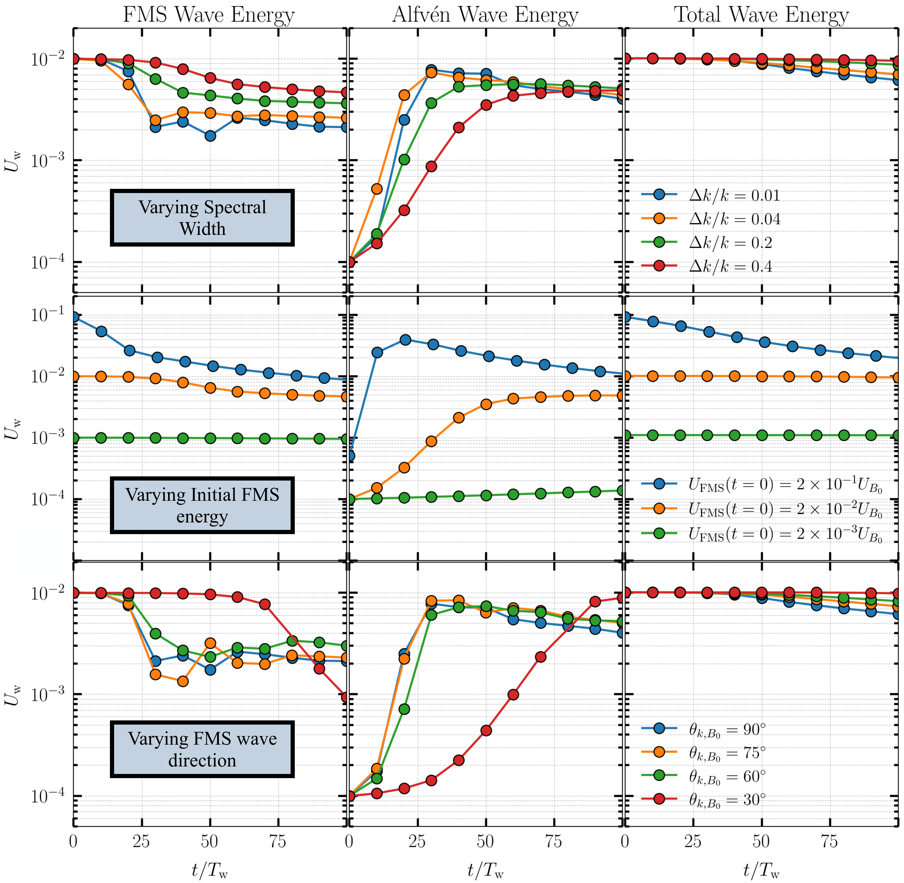<br />
图注：Time evolution of FMS, Alfvén, and total (FMS + Alfvén) wave energies for simulations in which the initial FMS energy exceeds the AW energy (Section~\ref{sec:FWSims}). In all cases, energy is transferred from FMS waves to Alfvén waves, with the conversion efficiency governed by three main factors: (i) a narrower initial FMS spectrum results in more efficient energy transfer, (ii) higher initial FMS energy drives stronger non-linear interactions, and (iii) oblique FMS propagation relative to the background magnetic field enhances mode coupling. In simulations with efficient FMS-to-AW conversion, the total wave energy decreases at late times due to excitation of AWs with large $k_{\perp}$ that dissipate at the grid scale. When the initial FMS energy is too low (e.g., the green curve in the middle row), resonance mismatches induced by the finite grid resolution suppress non-linear interactions.<br />
对应解读：对应“建议重点查看的图表”第2项快磁声波与阿尔芬波能量随时间变化图，以及“关键图表逐图导读”中图2式的能量时间演化解读。<br />
入选理由：这是支撑论文核心结论最直接的图：同时给出FMS、Alfvén和总波能量随时间的演化，能够检验主快磁声波能量是否被持续抽取、阿尔芬波是否增长、不同初始谱宽、能量和传播角对转换效率的影响，以及后期总能量下降是否与高k_perp阿尔芬波网格尺度耗散有关。比单纯形态图更能量化说明参量衰减的效率和数值耗散风险。<br />
来源与置信度：\(arxiv_source\)；high；\(arxiv_source\) / main.tex:figure[5]</p>
<p><strong>Fig02</strong><br />
<br />
图注：Comparison between theoretical expectations from parametric decay (top) and the spectrum of secondary waves excited in a numerical simulation (bottom). Top row: Theoretical $k_{\parallel}$-$k_{\perp}$ distribution of modes expected from the parametric decay of a single FMS wave (initial mode is indicated as a red dot). FMS waves and AWs produced from the $F \longleftrightarrow F + A$ process are colored green, while pairs of AWs produced from $F \longleftrightarrow A + A$ are shown in pink. Bottom row: Spectrum calculated in simulation ``\(\texttt{Mono-90}\)'' at $t = 30 T_w$. The simulation data closely resemble the theoretical expectation, indicating that three-wave interactions are a primary driver of the system's dynamics.<br />
对应解读：对应“建议重点查看的图表”第4项二维k空间功率谱，以及“关键图表逐图导读”中关于波数谱和理论三波耦合几何的解读。<br />
入选理由：该图把解析参量衰减预言的k_parallel-k_perp模分布与Mono-90模拟在t=30T_w的实际谱直接并列，清楚显示F→F+A和F→A+A通道的位置关系。它最适合支撑“模拟动力学主要由共振三波相互作用驱动”这一判断，而不是仅凭能量变化推断。<br />
来源与置信度：\(arxiv_source\)；high；\(arxiv_source\) / main.tex:figure[2]</p>
<p><strong>Fig03</strong><br />
<br />
图注：Frequency spectra of FMS and Alfvén waves for very narrow (<code>\(\texttt{Mono-90}\)'', top panels) and initially broad (</code>\(\texttt{Broad}\)'', bottom panels) FMS spectra, where $|A(\omega)|^2$ represents the total energy in each frequency bin. Time is scaled by $T_{\rm w}$, the period of FMS waves at the peak of the initial spectrum. Frequencies are normalized by $2 \pi L / c$, so that $\omega = 1$ corresponds to an FMS wave with wavelength equal to the simulation domain size. The initial FMS spectrum, centered around $\omega_1$, broadens significantly over time, reaching a saturated state with $\Delta \omega \gtrsim \omega$. Peaks labeled $\omega_{2,3}$ in the Alfvén wave spectrum arise from parametric decay ($F \longleftrightarrow A+A$, see Figure~\ref{fig:kpar_k_perp_spectrum}).<br />
对应解读：对应“建议重点查看的图表”第4项一维谱和“关键图表逐图导读”中图3式的P(k)或频率谱展宽分析。<br />
入选理由：该图展示FMS和Alfvén波频率谱随时间从初始窄带或宽带分布演化为显著展宽状态，并标出参量衰减产生的Alfvén峰。它直接支撑日报中“能量不再停留在单一模，而是扩展到宽谱”的核心解读，也有助于判断谱展宽是否是物理非线性过程。<br />
来源与置信度：\(arxiv_source\)；high；\(arxiv_source\) / main.tex:figure[3]</p>
<p><strong>Fig06</strong><br />
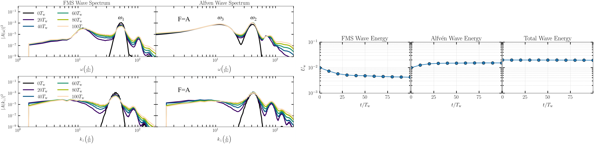<br />
图注：Time evolution of the simulation with a strong Alfvénic background (<code>\(\texttt{F=A}\)''), in which the initial Alfvén wave (AW) energy equals that of the FMS wave. The top panel shows the frequency spectrum, the middle panel shows the $k_{\perp}$ distribution, and the bottom panel is analogous to Figure~\(\ref{fig:fw_wave_energies}.\) The AW spectrum develops an extended $k_{\perp}$ tail, similar to the</code>\(\texttt{Mono-90}\)'' and ``\(\texttt{Broad}\)'' simulations, while the FMS wave energy steadily decreases over time, even when the AWs carry comparable energy.<br />
对应解读：对应“建议重点查看的图表”第2项中关于能量均分后主波是否仍衰减，以及“关键图表逐图导读”中强调近似均分后仍有演化的部分。<br />
入选理由：该图针对初始Alfvén能量与FMS能量相等的F=A情形，包含频率谱、k_perp分布和能量演化，直接验证即使阿尔芬背景已很强、能量接近均分，FMS波能量仍会持续下降。这比一般能量曲线更能支撑论文摘要中“能量均分后仍继续抽取主波能量”的关键结论。<br />
来源与置信度：\(arxiv_source\)；high；\(arxiv_source\) / main.tex:figure[6]</p>
<p><strong>Fig09</strong><br />
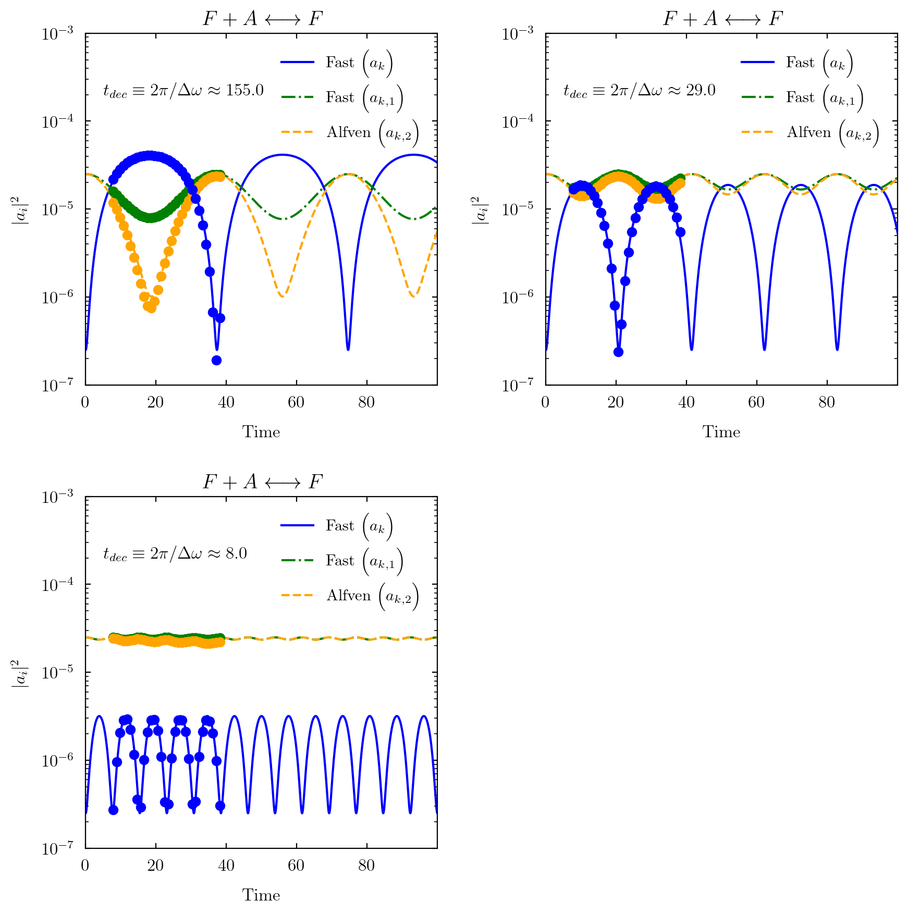<br />
图注：Numerical solutions to a triad of nearly resonant waves (solid and dashed colored lines) and force-free simulations (colored dots) for the same initial conditions. The initial conditions contain two fast waves and an Alfvén wave, with frequencies $\omega, \omega_1$ and $\omega_2$, respectively, so that they nearly satisfy the resonance conditions for the $FFA$ process. The $y-$axis shows the square of the absolute value of amplitudes, and the $x-$ axis shows the time. The frequency mismatch between the three waves, $\Delta \omega \equiv |\omega - \omega_1 - \omega_2|$, increases from left to right, and as a result, the de-correlation time, $t_{\rm dec}$ decreases. When $t_{\rm dec}$ becomes comparable to the interaction timescale of the three waves, resonant three-wave interactions cease. In the middle and right panels, the high-frequency fast wave no longer grows from the merger of the two lower-frequency waves.<br />
对应解读：对应“建议重点查看的图表”第3项增长率或衰减率拟合图，以及“模型拟合”段落中数值模拟与弱湍流三波理论可检验量比较的讨论。<br />
入选理由：该图将近共振三波组的数值解与力自由模拟点直接比较，并展示频率失配Delta omega增大时退相干时间缩短、相互作用停止的过程。它虽然不是传统误差条拟合图，但最能体现作者如何把模拟振幅演化与解析三波相互作用模型逐点对照，从而区分真实共振耦合和数值噪声。<br />
来源与置信度：\(arxiv_source\)；high；\(arxiv_source\) / main.tex:figure[9]</p>
<p><strong>Fig07</strong><br />
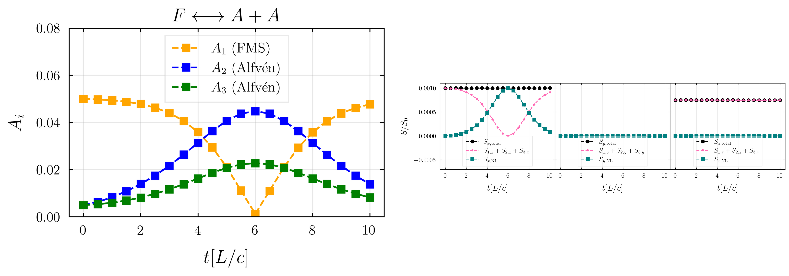<br />
图注：(Top): The amplitudes of the FMS and two AWs in the $F \longleftrightarrow A+A$ simulation. The two AWs are initialized with a much smaller amplitude than the FMS wave (but a higher amplitude than the background noise so these modes grow the fastest). (Bottom): Normalized Poynting flux decomposition from the same simulation, where $S_0 = (c/4\pi)B_0^2$. The three panels represent the volume-averaged Poynting flux in the $x, y$, and $z$ directions, respectively. The black curve represents the total Poynting flux, $\bfm{S}_{\rm tot}$, in the simulation, which is conserved along each of the directions. The pink curve represents the sum of the Poynting fluxes for the FMS and two AWs, given by $\bfm{S}_1 + \bfm{S}_2 + \bfm{S}_3$. The perpendicular ($x$) component of this flux is not conserved; when the FMS decays, this flux also goes to zero. The teal curve represents the non-linear Poynting flux, $\bfm{S}_{\rm NL}$, which is generated by non-linear electric fields. $\bfm{S}_{\rm NL}$ accounts for the perpendicular component of $\bfm{S}_1$ when the FMS wave decays, so that $\bfm{S}_{\rm NL} + \bfm{S}_1 + \bfm{S}_2 + \bfm{S}_3 = \bfm{S}_{\rm tot}$ is a constant.<br />
对应解读：对应“建议重点查看的图表”第7项能量守恒或残差诊断，以及“模型拟合”段落中关于守恒量和系统误差的讨论。<br />
入选理由：该图给出F→A+A模拟中的波振幅和归一化Poynting通量分解，显示总Poynting通量守恒，并说明非线性Poynting通量如何补偿FMS衰减时的垂直通量变化。它有助于确认主波能量转移不是简单的数值消失或投影假象，而是由非线性场项和模式间能量流重新分配导致。<br />
来源与置信度：\(arxiv_source\)；high；\(arxiv_source\) / main.tex:figure[7]</p>
<h4 id="_35">强相关工作</h4>
<p>这篇工作直接处在快速射电暴磁星内磁层传播问题、强磁化等离子体弱湍流和力自由电动力学模拟的交叉点。应把它与 Golbraikh 与 Lyubarsky 关于快磁声波非线性衰减的解析理论一起读，检索关键词可用 “fast magnetosonic wave parametric decay force-free electrodynamics Golbraikh Lyubarsky magnetar FRB”。如果关注同类问题，还应检索 “FRB magnetar magnetosphere escape induced scattering fast magnetosonic waves Alfvén waves”。</p>
<p>与相似观测的关系主要体现在快速射电暴和银河系磁星 \(\mathrm{SGR}\,1935+2154\) 上。本文不是对某个具体暴的拟合，也没有声称解释某个单独动态谱特征；它提供的是传播物理限制。与外磁层冲击模型相比，内磁层快磁声波模型更依赖波在强场区的逃逸，因此本文结果对内磁层模型压力更大。相反观点通常会强调几何膨胀降低波振幅、有限等离子体效应改变耦合、或辐射在更外层产生；检索关键词可用 “FRB synchrotron maser external shock magnetar flare” 与 “inner magnetosphere coherent curvature radiation FRB”。</p>
<p><strong>同一事件 / 同类源线索</strong>：</p>
<ul>
<li><a href="https://arxiv.org/abs/2606.19450">https://arxiv.org/abs/2606.19450</a></li>
<li><a href="https://arxiv.org/pdf/2606.19450">https://arxiv.org/pdf/2606.19450</a></li>
</ul>
<p><strong>相似工作</strong>：</p>
<p>（未提供）</p>
<p><strong>基础理论 / 方法工作</strong>：</p>
<ul>
<li><a href="https://arxiv.org/abs/2005.10828">https://arxiv.org/abs/2005.10828</a></li>
</ul>
<p><strong>相反观点 / 张力线索</strong>：</p>
<p>（未提供）</p>
</details>
<h3 id="4-damping-of-fast-radio-bursts-in-the-inner-magnetospheres-of-magnetars">4. Damping of Fast Radio Bursts in the Inner Magnetospheres of Magnetars</h3>
<ul>
<li>来源：arXiv / astro-ph.HE</li>
<li>链接：https://arxiv.org/abs/2606.19448v1</li>
<li>作者：Siddhant Solanki, Jens Mahlmann, Alexander Philippov, Andrei Beloborodov</li>
<li>评分：novelty 8/10，importance 8/10，relevance 8/10，final 9.00/10</li>
<li>推荐理由：三维FFE模拟显示FRB在磁星内磁层中会强烈激发Alfven扰动并被非线性衰减，对磁星FRB发射半径和逃逸条件给出重要约束。</li>
</ul>
<p><strong>中文题目</strong>：Damping of Fast Radio Bursts in the Inner Magnetospheres of Magnetars</p>
<p><strong>做了什么</strong>：本文研究 FRB 类 GHz 射电脉冲穿过磁星内磁层时是否会被非线性等离子体过程阻尼。作者用三维 force-free electrodynamics 模拟 FMS 脉冲传播，发现脉冲会通过共振三波相互作用激发 Alfvénic 扰动，把可逃逸射电能量转移到更容易被磁层困住的 Alfvén 波中。静宁偶极磁层中，这一过程在约 \(10-100R_\ast\) 内有效，较大半径可能因 charge starvation 停止；在磁层爆发产生的相对论磁化外流中，明亮 FRB 的逃逸半径可能需要达到 \(\gtrsim10^2-10^3R_\ast\)。核心结论是：磁星内区不仅要能产生 FRB，还必须让 FRB 通过强非线性传播过滤器。</p>
<p><strong>为什么重要</strong>：这篇论文重要之处在于，它把 FRB 磁星起源问题从“能源是否足够”推进到“射电波是否能逃逸”的更严格层面。三维 FFE 结果支持 FMS 波向 Alfvén 波的共振能量转移，说明内磁层强非线性传播过程可能显著限制 FRB 可见性。若其逃逸半径约束稳健，许多近星表面或闭合磁层内的 FRB 模型都需要重新评估，或者必须加入特殊几何、外流、pair loading、远区发射等机制来绕开阻尼。因此它不仅是一个传播效应论文，也是在重塑磁星 FRB 模型参数空间。</p>
<p><strong>理论 / 观测 / 仪器方法价值</strong>：本文的理论价值在于把 FRB 磁星模型中的“传播可行性”提升为硬约束：内磁层发射机制不能只计算相干辐射功率，还必须证明 FMS 波不会在逃逸前被三波相互作用耗尽。方法价值在于用三维 FFE 模拟连接局域波模耦合、频率／横向波数谱诊断和天体物理逃逸半径估计，为后续 PIC 或全局磁层模拟提供可检验基准。观测价值在于给出区分内磁层与远区发射模型的物理方向：若某些 FRB 与磁星爆发同步但要求很小发射半径，必须解释为何没有遭受强阻尼；若观测支持较大半径发射，则与本文约束更相容。</p>
<p><strong>为什么应该关注</strong>：值得关注这篇论文，是因为它挑战了一个在 FRB 讨论中容易被略过的前提：只要磁星能产生相干 GHz 辐射，辐射就能到达观测者。本文显示，强磁化内磁层本身可能是一个高效非线性吸收／转换区，尤其对高光度 FRB 更严苛。对做 FRB 发射机制、磁星爆发、相干辐射或等离子体波模的人来说，这篇文章提供了必须纳入模型预算的传播损耗项；对观测者来说，它提示偏振、爆发相位、伴随高能活动和可见性选择效应可能都与逃逸半径有关。</p>
<details class="paper-detail">
<summary>展开详细解读：文章讲解、背景、理论、重点章节、图表与相关工作</summary>
<h4 id="_36">文章详细讲解</h4>
<p>本文的科学问题可以概括为：如果 FRB 真在磁星内磁层或近磁层产生，GHz 射电脉冲能否以 FMS 波形式穿过强磁化等离子体而不被自身非线性效应耗散？这不是传统的“等离子体频率是否低于观测频率”问题，而是强波能量是否会通过共振三波作用转移到不可逃逸的 Alfvén 波。论文摘要明确给出答案倾向：内磁层中非线性衰减强，静宁偶极场中有效范围约 \(10-100R_\ast\)，爆发外流中对明亮 FRB 的逃逸半径约束可达 \(\gtrsim10^2-10^3R_\ast\)。</p>
<p>方法上，作者用三维 FFE 数值模拟直接演化一个 FMS 脉冲在强背景磁场中的传播。Fig. 1 的体渲染和一维剖面显示，脉冲的电磁波能量密度 \(U_{\rm wave}/U_0\) 随时间演化，同时出现显著场向电流 \(|j_z|/j_0\)。这类电流响应是区分单纯几何扩散与等离子体耦合的重要诊断：如果只有真空传播，波包可展宽但不应系统性地产生与 Alfvénic 响应一致的场向电流结构。</p>
<p>关键机制由 Fig. 2 支撑。该图比较不同模拟设置下 FMS 与 Alfvén 波的频率空间和 \(k_\perp\) 空间功率谱，图注指出共振 Alfvén 波在 \(\omega\approx k_1c/2\) 及其谐波增长，并形成宽横向波数谱。读图时要看三件事：第一，FMS 能量峰是否随时间下降；第二，Alfvén 分量是否在预期共振频率出现增长；第三，增长是否依赖初始扰动、混合模式或数值分辨率设置。如果这些趋势跨模拟设置稳定存在，就说明衰减不是单个数值实验的偶然模式泄漏。</p>
<p>物理解释上，向外传播的 FMS 脉冲相当于一个强驱动源，它在非均匀或三维磁化背景中激发 Alfvénic 扰动。由于 Alfvén 波沿磁场传播，闭合偶极磁层中的部分能量不能随射电束逃逸，而会滞留在磁层内，表现为射电信号非线性衰减。到了较大半径，若维持这些 Alfvén 波所需电荷密度或电流超过磁层可供应能力，就会出现 charge starvation，FFE 描述也随之失效；摘要称这会在静宁偶极磁层中终止衰减。</p>
<p>局限性主要来自近似层级。FFE 模拟不直接解析粒子分布函数、pair cascade、辐射反作用或真实耗散热化，因此“能量转移到 Alfvén 波”不等于已经计算出最终热辐射、粒子加速或高能辐射谱。其次，实际磁星磁层可能有扭曲磁场、开放磁力线、旋转、电流片、爆发后非稳态 pair loading，这些都会改变共振条件和逃逸通道。论文的结果因此更像是一个强约束：任何内磁层 FRB 模型都必须解释如何避免或延迟这种三波阻尼，而不是简单否定所有磁星 FRB 机制。</p>
<p>下一步最值得补强的是把宏观 FFE 衰减率与微观等离子体供给相连接。可以用 PIC 或混合方法检验 charge starvation 后会发生什么：Alfvén 波是否破裂成粒子加速、电场平行分量是否增长、是否诱发 pair creation、以及这些过程是否反过来让 FMS 波重新传播。同时需要把逃逸半径条件映射到可观测量，如 FRB 频率漂移、偏振位置角、旋转量、伴随 X/γ 爆发延迟，以及重复暴在爆发活动期与静宁期的射电可见性差异。</p>
<h4 id="_37">关键结果是怎么做出来的</h4>
<p>第一项主结果是三维 FFE 模拟中 FMS 脉冲会激发 Alfvénic 扰动并发生强非线性衰减。这里没有传统观测论文意义上的事件数或样本量；证据链来自数值实验组，包括参考模拟、混合脉冲设置和不同参数设置。Fig. 1 展示参考模拟中电磁波能量密度随传播演化，并伴随场向电流增强；这说明 FMS 波能量没有简单保持在可逃逸波模中，而是驱动了磁层电流系统。</p>
<p>第二项主结果是衰减机制符合共振三波相互作用，而非普通数值耗散。Fig. 2 给出的频率谱和 \(k_\perp\) 谱是关键证据：Alfvén 波在 \(\omega\approx k_1c/2\) 及谐波处增长，并产生宽 \(k_\perp\) 分布。若只是数值扩散，预期会看到高 \(k\) 单调耗散或无选择性的谱变化，而不是在共振频率附近有结构化增长。因此，模型比较的重点不是不同天体模型的 \(\chi^2\)，而是“有共振三波耦合的 FFE 演化”相对于“真空或线性传播”的谱诊断差异。</p>
<p>第三项主结果是对静宁偶极磁层的半径限制。摘要称，在 quiescent dipolar magnetospheres 中，非线性衰减在 \(\sim10-100R_\ast\) 内保持有效，而在更大半径，受激 Alfvén 波发生 charge starvation，衰减停止。这个结论应从两步理解：先用模拟确定在内区强磁化 FFE 条件下三波转化有效；再用磁场随半径下降、波强几何稀释和可供应电荷密度的标度判断过程能持续到哪里。这里的置信度不是统计 \(p\)-value，而取决于半径外推对磁场几何、pair multiplicity 和 FRB 光度的敏感性。</p>
<p>第四项主结果是对爆发相对论磁化外流中的 FRB 给出更严格的逃逸半径约束。Fig. 3 的下图对应这种场景：FRB 可能与磁层爆发产生的磁脉冲一起向外运动。摘要指出，在这种 outflow 中三波相互作用仍然有效，并使明亮暴的逃逸半径达到 \(\gtrsim10^2-10^3R_\ast\)。读者应重点核查正文如何处理共动系频率、外流 Lorentz 因子、局域磁场强度和波振幅，因为这些量会直接进入共振条件和阻尼光学深度。</p>
<p>系统误差和稳健性方面，最重要的是 FFE 近似、数值分辨率、边界条件和初始波包构造。FFE 无法在 charge starvation 后继续自洽描述粒子加速和非理想电场，因此论文关于“衰减停止”的说法应理解为 FFE 三波通道停止或转化，而非所有能量交换必然终止。数值上，应检查 Alfvén 谱增长是否远离网格 Nyquist 限制、是否不依赖初始噪声、以及能量守恒误差是否小于被解释的阻尼量。</p>
<p>稳健结论是：内磁层 FRB 模型必须面对一个强传播过滤器。若 FRB 在 \(\lesssim10-100R_\ast\) 产生，静宁磁层中会遭遇显著 FMS-to-Alfvén 能量转移；若在爆发外流中传播，明亮暴可能需要更大半径才能逃逸。较不稳健、需要读者复核的是具体数值边界，如 \(10^2\) 还是 \(10^3R_\ast\)，因为它们可能随光度、频率、束流因子、磁星表面场和 pair loading 改变。</p>
<details class="paper-subdetail">
<summary>展开背景、理论、公式、模型、章节和图表导读</summary>
<h4 id="_38">背景知识</h4>
<p>快速射电暴（FRB）的核心难题之一，是如何在极短时间内产生极高亮温度的相干 GHz 射电辐射，并且让这些辐射从致密、强磁、强等离子体环境中逃逸出来。磁星模型之所以长期占据中心位置，是因为磁星具有 \(B\sim10^{14}-10^{15}\,\mathrm{G}\) 的表面磁场、可发生磁层重联或星震触发的爆发，并且银河系磁星 SGR 1935+2154 的 FRB 200428 已经把磁星与至少一部分 FRB 直接联系起来。但“能产生”不等于“能逃逸”：如果射电波在磁层内被吸收、散射、诱导散射或非线性转换耗尽，那么即使内区有相干辐射源，观测者也看不到典型 FRB。</p>
<p>本文研究的对象不是 FRB 的发射机制本身，而是发射之后的传播问题：一个强振幅 GHz 快磁声波／电磁脉冲穿过磁星内磁层时，会不会通过非线性等离子体过程把能量转移到困在磁力线上的 Alfvén 波中。摘要指出，先前理论已经发现，在内磁层中 GHz 射电波可表现为 fast magnetosonic（FMS）波，并发生共振三波相互作用；本文的贡献是用三维 force-free electrodynamics（FFE）模拟检验这种过程在更真实几何和强非线性条件下是否仍有效，以及它对 FRB 逃逸半径的约束有多强。</p>
<p>需要注意的历史脉络是，FRB 传播限制并不只有一种。常见限制包括等离子体频率截止、回旋共振吸收、诱导 Compton/Raman 散射、自由-自由吸收、pair loading 改变色散关系、以及外部激波模型中的 synchrotron maser 逃逸条件。本文强调的不是线性吸收或普通色散，而是强波在磁化等离子体中的非线性三波衰减：一个向外传播的 FMS 脉冲把能量泵入两个或多个 Alfvénic 模式，这些模式沿磁场传播或被闭合磁力线困住，从而相当于从可逃逸射电束中抽走能量。</p>
<p>一个常见误区是把磁星磁层近似成真空电磁波传播区，认为只要局域等离子体频率低于 GHz，射电波就能自由逃逸。对强磁场、低惯性、强电流的磁层而言，波模、背景电流和非线性电磁应力同样重要。另一个误区是把“内磁层发射半径小”直接等同于“高亮度更容易解释”；本文反而说明，越靠近磁星，磁场越强、波能密度相对背景场的非线性效应越强，强 FRB 可能越难不受损地逃逸。</p>
<p>本文区分两类传播场景。第一类是静宁偶极磁层：FRB 从磁星附近向外穿过近似静态的偶极场，三波衰减在 \(\sim10-100\) 个磁星半径内有效，但更远处被激发 Alfvén 波可能出现 charge starvation，使衰减停止。第二类是爆发时的相对论磁化外流：FRB 可能“搭载”在磁层喷出的磁脉冲或 outflow 上传播，局域条件不同，三波相互作用可在更大半径保持有效，因此对高光度暴给出 \(\gtrsim10^2-10^3 R_\ast\) 的逃逸半径要求。读者应把这篇论文看作对“内磁层 FRB 模型”的传播可行性压力测试。</p>
<h4 id="_39">基础理论 / 方法脉络</h4>
<p>在强磁星磁层中，背景磁能密度远高于粒子惯性能量密度，常用近似是 force-free electrodynamics：电场沿磁场分量很小，洛伦兹力密度近似为零，电磁场由电流自洽维持。在线性小扰动层面，强磁化等离子体支持 Alfvén 波和 fast magnetosonic（FMS）波。FMS 波可横穿磁力线传播，类似可逃逸射电脉冲；Alfvén 波主要沿磁力线传播，在闭合磁层中容易被困住。因此，FMS 到 Alfvén 的能量转移天然会导致射电可见能量衰减。</p>
<p>三波相互作用的基本物理图像是：强振幅母波提供周期性驱动，满足频率和波矢匹配条件的子波会发生共振增长。对本文而言，母波是 FRB 类 FMS 脉冲，子波是 Alfvénic 扰动。Fig. 2 图注给出关键诊断：Alfvén 波在 \(\omega\approx k_1 c/2\) 及其谐波附近增长，并伴随宽 \(k_\perp\) 谱。这说明能量不是简单地从一个平面波线性散射到另一个平面波，而是在三维横向结构中级联到一族 Alfvénic 模式。</p>
<p>本文使用三维 FFE 模拟而不是粒子-in-cell 全动力学模拟，意味着它关注的是磁层大尺度、强磁化、低惯性极限下的电磁能量交换。FFE 能很好地捕捉 \(E\cdot B\approx0\)、\(B^2-E^2>0\) 条件下的电流和波传播，但不能完整描述粒子加速、pair creation、微观耗散或 charge starvation 的动力学细节。因此，读者应把模拟得到的 FMS 衰减率和 Alfvén 波增长看作宏观非线性电磁过程的证据，而把远处 charge starvation 截止看作需要用粒子供给模型进一步核查的物理边界。</p>
<p>观测上，FRB 的关键输入量可粗略归结为各向同性等效光度 \(L_{\rm FRB}\)、频率 \(\nu\)、脉宽 \(\Delta t\)、发射或逃逸半径 \(r\)、以及磁星磁场 \(B(r)\)。传播理论要判断的不是望远镜接收到多少流量，而是在源区附近的波强 \(E_{\rm w}\) 相对于背景磁场 \(B_0\) 是否足以触发强非线性衰减，以及衰减长度 \(\ell_{\rm damp}\) 是否短于磁层尺度。若 \(\ell_{\rm damp}\ll r\)，内区产生的射电波会被显著削弱；若某种机制让波在较大半径才形成或才解耦，则可避开强衰减。</p>
<p>这里的主要退化关系包括：FRB 光度越高，波振幅越大，非线性过程通常越强；发射半径越大，背景偶极场越弱且波能密度也几何稀释，二者的比值决定有效非线性；磁层是否静宁、是否有相对论外流、外流 Lorentz 因子和局域共动频率都会改变共振条件。论文结论中给出的 \(10-100R_\ast\) 与 \(10^2-10^3R_\ast\) 不应被理解为普适常数，而是特定磁层模型、FRB 光度范围和三波相互作用效率下的逃逸尺度估计。</p>
<h4 id="_40">公式与推导</h4>
<p>可从强磁化等离子体的 force-free 条件开始。理想 FFE 要求洛伦兹力密度近似为零，并满足</p>
<div class="math-display">\[\rho_e {\bf E}+\frac{{\bf j}\times {\bf B}}{c}=0,\qquad {\bf E}\cdot {\bf B}=0,\qquad B^2-E^2>0 .\]</div>
<p>这里 \(\rho_e\) 是电荷密度，\({\bf j}\) 是电流密度。该条件说明电磁场能量主导，粒子惯性不显式进入主方程；本文模拟正是在这一极限中考察 FMS 波与 Alfvén 波的非线性耦合。</p>
<p>磁星静宁偶极场可用近似标度</p>
<div class="math-display">\[B_0(r)\simeq B_\ast \left(\frac{R_\ast}{r}\right)^3\]</div>
<p>描述，其中 \(B_\ast\) 是表面磁场，\(R_\ast\) 是磁星半径。背景磁能密度为</p>
<div class="math-display">\[U_B(r)=\frac{B_0^2(r)}{8\pi} .\]</div>
<p>这给出判断波是否强非线性的基准：同样的 FRB 波能密度在小半径处面对更强背景场，但三波耦合和电流响应也在更强磁化环境中更容易满足 FFE 波模结构。</p>
<p>若 FRB 近似各向同性等效光度为 \(L_{\rm FRB}\)，在半径 \(r\) 处的能流为</p>
<div class="math-display">\[F_{\rm w}(r)\simeq \frac{L_{\rm FRB}}{4\pi r^2 f_b},\]</div>
<p>其中 \(f_b\leq1\) 可表示束流覆盖因子；若采用各向同性等效光度，可令 \(f_b=1\)。对应波能密度和电场振幅满足</p>
<div class="math-display">\[U_{\rm w}\simeq \frac{F_{\rm w}}{c},\qquad E_{\rm w}\simeq \left(8\pi U_{\rm w}\right)^{1/2} .\]</div>
<p>一个实用无量纲强度参数是</p>
<div class="math-display">\[a_B(r)\equiv \frac{E_{\rm w}}{B_0(r)}\simeq \left[\frac{2L_{\rm FRB}}{c f_b r^2 B_0^2(r)}\right]^{1/2} .\]</div>
<p>在偶极场中 \(a_B\propto r^2\)；这提示外层虽背景场弱，但波相对背景场可能更非线性，直到电荷供应或波模条件改变。</p>
<p>三波共振的最低阶条件可写为</p>
<div class="math-display">\[\omega_0=\omega_1+\omega_2,\qquad {\bf k}_0={\bf k}_1+{\bf k}_2 ,\]</div>
<p>其中 0 表示母 FMS 波，1、2 表示被激发的 Alfvénic 子波。若两个子波近似对称分担频率，则</p>
<div class="math-display">\[\omega_1\simeq \omega_2\simeq \frac{\omega_0}{2},\]</div>
<p>这与图注中 Alfvén 波在 \(\omega\approx k_1c/2\) 及谐波附近增长的诊断相对应。这里的精确系数取决于波矢方向、背景场几何和 FMS/Alfvén 色散关系。</p>
<p>能量转移可用一个简化的包络方程表示：</p>
<div class="math-display">\[\frac{dU_{\rm F}}{dt}\simeq -\Gamma_{3\rm w} U_{\rm F},\qquad \frac{dU_{\rm A}}{dt}\simeq \Gamma_{3\rm w} U_{\rm F}-\Gamma_{\rm loss}U_{\rm A},\]</div>
<p>其中 \(U_{\rm F}\) 是可逃逸 FMS 能量，\(U_{\rm A}\) 是 Alfvénic 能量，\(\Gamma_{3\rm w}\) 为有效三波增长／衰减率。模拟图中的 FMS 能量下降和 Alfvén 谱增长就是对这组方程符号和量级的数值检验。</p>
<p>若把传播距离 \(ds\simeq cdt\) 代入，可定义光学深度式阻尼量</p>
<div class="math-display">\[\tau_{3\rm w}(r)=\int_{r_{\rm em}}^{r}\frac{\Gamma_{3\rm w}(r')}{c}\,dr',\qquad U_{\rm F}(r)=U_{\rm F}(r_{\rm em})e^{-\tau_{3\rm w}} .\]</div>
<p>逃逸要求通常是 \(\tau_{3\rm w}\lesssim1\)。本文结论中的 \(r_{\rm esc}\gtrsim10^2-10^3R_\ast\) 可理解为对明亮 FRB 使上述积分不再过大的半径要求，但具体数值要以论文的模拟标定和场景假设为准。</p>
<p>charge starvation 可用所需电流与可供应电荷密度比较来估计。Alfvén 波若有横向尺度 \(k_\perp^{-1}\) 和扰动磁场 \(\delta B\)，所需电流量级为</p>
<div class="math-display">\[j_{\rm req}\sim \frac{c}{4\pi}k_\perp \delta B .\]</div>
<p>磁层最多可由电荷密度 \(n e\) 供应电流 \(j_{\rm sup}\sim n e c\)，因此 FFE 维持条件近似为</p>
<div class="math-display">\[n e c \gtrsim \frac{c}{4\pi}k_\perp\delta B .\]</div>
<p>当该不等式失败，Alfvén 波无法保持理想 force-free 电流结构，衰减过程会被截断或转入含平行电场的微观耗散过程；摘要中静宁偶极磁层较大半径处的衰减停止正对应这一条件。</p>
<h4 id="_41">模型拟合 / 应用方法</h4>
<p>本文不是对观测样本做统计拟合的论文，因此“模型拟合”应理解为数值模型标定与物理标度外推。拟合量或诊断量主要包括 FMS 波能量 \(U_{\rm F}(t)\)、Alfvénic 能量 \(U_{\rm A}(t)\)、场向电流 \(j_\parallel\)、频率谱功率 \(P(\omega)\)、横向波数谱 \(P(k_\perp)\)、以及由这些量估计的有效衰减率 \(\Gamma_{3\rm w}\) 或衰减长度 \(\ell_{\rm damp}\)。若正文给出指数衰减或幂律衰减拟合，读者应检查拟合区间是否避开初始暂态和边界反射阶段。</p>
<p>似然或后验意义上的统计模型在这篇论文中可能并非核心；更合适的检查方式是“模拟残差诊断”。可以把 FMS 能量积分随时间的曲线与无相互作用传播基线比较，定义残差 \(\Delta U(t)=U_{\rm sim}(t)-U_{\rm baseline}(t)\)。若残差与 Alfvén 能量增长同步，并且总电磁能误差小，则支持能量转移解释；若残差主要出现在边界附近或高 \(k\) 网格尺度，则可能是数值耗散。</p>
<p>参数退化主要有四类。第一，波幅与背景场强退化：实际控制非线性的是类似 \(E_{\rm w}/B_0\) 的无量纲强度，而不是单独的光度。第二，频率与半径退化：共动频率、局域等离子体条件和磁场几何共同决定共振是否有效。第三，外流 Lorentz 因子与逃逸半径退化：在爆发 outflow 中，实验室系半径相同并不代表共动系波强和频率相同。第四，pair multiplicity 与 charge starvation 退化：电荷供应越强，FFE Alfvén 波可维持到越远，衰减通道也可能持续更久。</p>
<p>系统误差包括数值分辨率、耗散算法、边界条件、初始扰动谱、盒子尺寸和模式分解方法。特别是 \(k_\perp\) 谱若接近网格截止，Alfvén 波增长可能被数值色散污染；若盒子尺寸太小，低频或长波长 Alfvén 模式可能被人为排除。可靠论文应展示至少一种收敛性检查：改变分辨率后共振峰位置和能量转移率大体不变，或改变初始噪声后增长进入相同非线性阶段。</p>
<p>模型可能失败的地方也很明确。若真实磁星磁层在 FRB 发射时充满 pair plasma，粒子惯性和非理想电场可能改变 FFE 波模；若射电辐射在远离闭合场线的开放磁通管或外部激波中产生，本文的内磁层阻尼约束会减弱；若波束极窄或传播方向与背景场几何特殊，三波匹配效率也可能不同。因此，使用本文结果时应把它作为对“内区强 FMS 脉冲”的约束，而不是对所有 FRB 磁星模型的统一排除。</p>
<p>一个实用的复核流程是：先从图中量出 FMS 能量积分随时间的变化，拟合 \(U_{\rm F}\propto e^{-t/t_d}\) 或相应非指数形式；再量出 Alfvén 谱峰增长率，检查二者是否满足能量守恒意义上的对应；最后把 \(t_d\) 转为 \(\ell_d=ct_d\)，与 \(R_\ast\)、\(10R_\ast\)、\(100R_\ast\) 比较。这样可以把图像证据转化为可用于天体物理逃逸条件的半定量约束。</p>
<h4 id="_42">重点章节 / 结果段落怎么读</h4>
<ol>
<li>
<p>Introduction：重点找作者如何定位本文相对于 FRB 发射机制论文和传播限制论文的关系。尤其要记录他们引用的先前三波相互作用理论、内磁层 FMS 波图像、以及为什么需要三维 FFE 模拟。不要只读成“磁星能产生 FRB”的背景段，真正的问题是“产生后能不能逃逸”。</p>
</li>
<li>
<p>Simulation setup / Numerical method：这一节应逐项核查背景磁场、计算盒大小、边界条件、初始 FMS 脉冲形状、波幅、频率、偏振、归一化单位和 FFE 电流闭合方式。所有后文衰减率都依赖这些选择；如果初始波包与真实 FRB 脉冲差别很大，应在笔记中标出可外推和不可外推的部分。</p>
</li>
<li>
<p>Evolution of the FMS pulse：对应 Fig. 1，应读出 FMS 波能量密度、场向电流和空间结构如何随时间变化。关键是区分几何传播、数值扩散和物理能量转移。建议记录作者是否给出能量守恒、波能积分或衰减长度，而不只依赖视觉印象。</p>
</li>
<li>
<p>Spectral diagnostics / Three-wave interaction：对应 Fig. 2，是全文机制论证的核心。要看频率匹配、\(k_\perp\) 展宽、谐波结构和不同模拟设置的一致性。若正文给出增长率或谱峰位置，建议与简单三波共振条件 \(\omega_0=\omega_1+\omega_2\) 对照。</p>
</li>
<li>
<p>Astrophysical implications：这一节把局部模拟结果映射到磁星半径尺度和 FRB 逃逸条件。阅读时应分开静宁偶极磁层与爆发 outflow 两种情形，分别记录假设、输入参数、最终逃逸半径和主要不确定性。特别要核查 charge starvation 的判据以及它是否来自解析估计、数值模拟或文献参数。</p>
</li>
<li>
<p>Discussion / limitations：重点看作者如何界定 FFE 的适用范围，是否讨论 pair creation、粒子惯性、非理想电场、旋转磁层和真实磁场扭曲。对研究生读者而言，这一节最适合提炼后续可做项目：用 PIC 检验微观耗散，用全局磁层模型检验几何依赖，或用观测偏振/高能伴随信号寻找传播阻尼迹象。</p>
</li>
</ol>
<h4 id="_43">建议重点查看的图表</h4>
<ol>
<li>
<p>FMS 脉冲能量密度演化图：重点看 \(U_{\rm wave}/U_0\) 的空间分布是否只是几何扩散，还是出现沿传播方向的系统性衰减；同时检查波包前沿、尾部和横向结构是否随时间产生 Alfvénic 纹理。</p>
</li>
<li>
<p>场向电流剖面或电流密度图：看 \(|j_\parallel|\) 或 \(|j_z|/j_0\) 是否与波包位置相关，是否在 FMS 能量降低处增强。场向电流是 Alfvén 波和 force-free 响应的重要诊断，若电流峰与能量转移不同步，需要警惕数值边界或滤波效应。</p>
</li>
<li>
<p>频率功率谱：检查 FMS 与 Alfvén 分量在 \(t=0\) 和后期的谱能量变化，尤其是是否在 \(\omega\approx k_1c/2\) 及谐波处出现 Alfvén 增长。要确认峰宽是否由有限脉冲长度、窗口函数或非线性展宽造成。</p>
</li>
<li>
<p>横向波数 \(k_\perp\) 谱：三维三波耦合的关键证据是宽 \(k_\perp\) Alfvén 谱，而不是单一模式增长。读者应看谱斜率、截止波数、分辨率依赖和是否接近网格尺度，以排除数值级联假象。</p>
</li>
<li>
<p>不同模拟设置对比图：例如参考模拟、混合脉冲、不同初始扰动或数值参数的比较。重点看衰减率、共振频率和 Alfvén 能量增长是否具有稳健性，而非只在某一设置中出现。</p>
</li>
<li>
<p>两种传播场景示意图及尺度估计：静宁偶极磁层与相对论磁化外流的示意图本身不是定量证据，但要用它定位后文逃逸半径推导的假设：背景场如何随半径衰减、波在实验室系或共动系中的频率如何变换、charge starvation 条件何时触发。</p>
</li>
<li>
<p>若正文或附录给出衰减长度／能量转移率随半径、光度或频率变化的图，应重点看标度关系而非单个数值。对 FRB 约束最敏感的是 \(L_{\rm FRB}\)、\(\nu\)、\(B_\ast\)、外流 Lorentz 因子和 pair multiplicity 的组合依赖。</p>
</li>
</ol>
<h4 id="_44">关键图表逐图导读</h4>
<p>图 1：这张图展示参考模拟中 FMS 脉冲的时空演化。左列是电磁波能量密度 \(U_{\rm wave}/U_0\) 的体渲染，主要看波包是否保持一个干净向外传播的结构，还是在传播中出现能量削弱和横向扰动。右列是沿 \(x\) 方向的 \(y-z\) 平面平均剖面，橙色为电磁波能量密度，红色为场向电流 \(|j_z|/j_0\)。读这张图时要把橙线下降与红线增强联系起来：后者说明磁层不是被动介质，而是在波经过时产生 Alfvénic 电流响应。陷阱是不要把所有能量下降都解释为阻尼，还要排除波包展宽、有限盒边界和平均方式导致的峰值降低。</p>
<p>图 2：这是机制验证的核心图。左列给出 FMS 与 Alfvén 波在频率空间和 \(k_\perp\) 空间的功率谱，并比较 \(t=0\) 与 \(t=3L/c\)；右列给出不同时间的平面平均 \(E_y/B_0\) 和 \(B_\perp/B_0\)。坐标轴的读法是：频率谱中寻找 Alfvén 功率是否在 \(\omega\approx k_1c/2\) 及谐波处增长，\(k_\perp\) 谱中寻找是否出现宽横向波数分布；实空间图中 \(E_y\) 代表 FMS 偏振，\(B_\perp\) 增强代表 Alfvénic 磁扰动。模型线若有共振位置标记，应检查峰值是否真与其重合。主要陷阱是把数值噪声或网格尺度附近的谱尾误认为物理级联，因此要同时看不同模拟设置的重复性。</p>
<p>图 3：这是两类 FRB 传播场景的概念图，上图为静宁偶极磁层，下图为磁星爆发发射的向外传播磁脉冲或相对论外流。它不提供直接拟合数据，但决定结论如何外推到逃逸半径。读者应看清楚 FRB 是在背景偶极场中单独传播，还是嵌入爆发 outflow 的共动环境中传播；两者的局域磁场、频率变换、粒子供应和共振效率不同。陷阱是把示意图中的半径边界当作精确测量值；真正的定量约束应来自前面模拟标定和后文尺度估计。</p>
<p>若论文还有附录或补充图展示不同分辨率、不同初始脉冲幅度、不同扰动谱或不同磁场几何，建议把它们作为图 2 的稳健性检验来读。核心问题是：Alfvén 增长率是否随网格变化收敛？衰减长度是否随初始噪声幅度明显改变？若共振只在特定初始谱中出现，就要怀疑其普适性；若在多种设置中都出现相同频率匹配和能量转移，则本文结论更强。</p>
</details>
<h4 id="_45">论文原图 / 可嵌入图片</h4>
<p><strong>Fig02</strong><br />
<br />
图注：Evolution of the FMS pulse in simulations \(\refsim\) (top row), \(\texttt{pulse\_mixed}\) (middle row), and \(\texttt{pulse\_n6}\) (bottom row). The left column shows the frequency-space and $k_{\perp}$-space power spectra of the FMS and Alfvén waves at $t=0$ and $3\,L/c$. Resonant Alfvén waves grow at frequencies $\omega \approx k_1 c/2$ and their harmonics, corresponding to a broad $k_{\perp}$ spectrum. The different colors in the right column represent $y$--$z$ plane averages of $E_y/B_0$ and $B_{\perp}/B_0$ at times $t=0$ and $3\,L/c$. The electric field of the fast magnetosonic wave is polarized along the $y$ direction, while the excited Alfvén waves produce an increase in the magnetic-field component transverse to the background field, $B_{\perp}$.<br />
对应解读：对应“建议重点查看的图表”中关于主要模拟诊断量、模型比较和机制验证的要求；也是理解三波共振、FMS 波向 Alfvén 波能量转移的核心图。<br />
入选理由：该图同时给出频率空间与横向波数空间功率谱，并比较不同模拟设置下 FMS 与 Alfvén 波的演化，直接展示共振 Alfvén 波在约 ω≈k1c/2 及其谐波处增长、并形成宽 \(k_perp\) 谱。这是论文关于非线性衰减机制最关键的证据，比单纯示意图更能支撑对物理过程的详细解读。<br />
来源与置信度：\(arxiv_source\)；high；\(arxiv_source\) / main.tex:figure[2]</p>
<p><strong>Fig01</strong><br />
<br />
图注：Evolution of the fast magnetosonic pulse in the \refsim\ simulation. The left column shows the volume renderings of the electromagnetic wave energy density, $U_{\rm wave}/U_0$, and the right column shows the $x$-profiles of the $y$--$z$ plane–averaged electromagnetic energy density (orange) and field-aligned component of the current, $|j_z|/j_0$ (red), as indicated by the corresponding colors on the $y-$axes.<br />
对应解读：对应“建议重点查看的图表”中关于主要模拟结果、诊断量和传播演化的要求；用于解读 FMS 脉冲在磁层中传播时的能量衰减与电流响应。<br />
入选理由：该图展示参考模拟中快磁声波脉冲的三维能量密度演化，以及沿传播方向的平面平均电磁波能量密度和场向电流分布。它直接连接论文核心结论：FRB 类 GHz 波在内磁层中激发 Alfvénic 扰动并发生强非线性衰减，是理解模拟结果的基础图。<br />
来源与置信度：\(arxiv_source\)；high；\(arxiv_source\) / main.tex:figure[1]</p>
<p><strong>Fig03</strong><br />
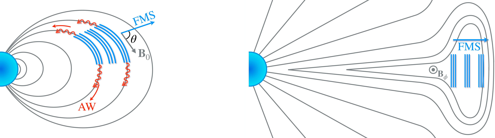<br />
图注：Illustration of two FRB propagation scenarios: in a quiescent magnetosphere (top panel) and riding on an outward-propagating magnetic pulse ejected by a magnetar magnetosphere (bottom panel).<br />
对应解读：对应论文物理图景和结论部分关于两类 FRB 传播环境的比较：静态偶极磁层与磁层爆发驱动的相对论磁化外流。<br />
入选理由：该图是概念示意图，数据诊断量较少，但清楚区分论文讨论的两种传播场景，有助于读者把模拟结果与逃逸半径约束联系起来。其科学信息密度低于 Fig01 和 Fig02，因此排序靠后。<br />
来源与置信度：\(arxiv_source\)；high；\(arxiv_source\) / main.tex:figure[3]</p>
<h4 id="_46">强相关工作</h4>
<p>同源或同事件背景方面，FRB 与磁星联系的原型事件是银河系磁星 SGR 1935+2154 的 FRB 200428；相关观测论文可从 arXiv:2005.10828（CHIME/FRB 对 FRB 200428 的报告，https://arxiv.org/abs/2005.10828）和 arXiv:2005.10324（STARE2 对同一事件的报告，https://arxiv.org/abs/2005.10324）开始读。这些不是本文同一“事件”的论文，因为本文是理论／数值传播研究，但它们提供了磁星能产生 FRB 级射电暴的直接观测动机。磁星爆发、高能伴随和射电暴联系的更多文献可用关键词 “SGR 1935+2154 FRB 200428 magnetar radio burst X-ray counterpart” 在 NASA ADS 或 arXiv 检索。</p>
<p>同类理论工作包括 FRB 在磁星磁层中的传播、诱导散射、等离子体截止、回旋吸收、外部激波 synchrotron maser 以及磁层内相干曲率辐射模型。建议检索关键词 “fast radio burst magnetar magnetosphere propagation”, “FRB induced scattering magnetar”, “fast magnetosonic wave Alfven wave three-wave interaction magnetar”, “charge starvation Alfven waves magnetosphere”。本文摘要称“previous work showed” GHz 波在内磁层中作为 FMS 波传播并经历三波共振，因此读者应沿作者参考文献追踪这条直接基础工作链，而不是只看一般 FRB 综述。</p>
<p>综述和目录类资料可帮助定位本文的重要性。FRB 总体综述可查 Lorimer 与 Kramer 之后的 FRB review、Petroff/ Hessels/ Lorimer 的 FRB 综述，以及 CHIME/FRB catalog 页面；磁星基础可查 Kaspi &amp; Beloborodov 2017 Annual Review（磁星综述，常见检索入口为 NASA ADS 或 Annual Reviews 页面）。可靠公共入口包括 CHIME/FRB 官方资料页 https://www.chime-frb.ca/ 和 arXiv 检索页 https://arxiv.org/search/ 。这些资料不是本文的直接同源研究，但能帮助判断本文的逃逸半径约束会影响哪些 FRB 发射模型。</p>
<p>可能存在张力的方向主要有两类。第一，内磁层相干曲率辐射或天线机制通常希望在较小半径获得强电场和短时标；本文的阻尼结果会对这类模型施压。第二，外部激波或远磁层 maser 模型把射电产生位置放在更大半径，天然更容易避开内磁层三波阻尼，但需要解释高效率、频谱结构和重复暴活动性。检索时应把 “inner magnetosphere curvature radiation FRB” 与 “external shock synchrotron maser FRB magnetar flare” 两组文献并列比较，观察它们如何处理传播逃逸问题。</p>
<p><strong>同一事件 / 同类源线索</strong>：</p>
<p>（未提供）</p>
<p><strong>相似工作</strong>：</p>
<p>（未提供）</p>
<p><strong>基础理论 / 方法工作</strong>：</p>
<p>（未提供）</p>
<p><strong>相反观点 / 张力线索</strong>：</p>
<p>（未提供）</p>
</details>
<h3 id="5-supernova-remnants-in-the-ixpe-era-a-review">5. Supernova Remnants in the IXPE era: a review</h3>
<ul>
<li>来源：arXiv / astro-ph.HE</li>
<li>链接：https://arxiv.org/abs/2606.19979v1</li>
<li>作者：Riccardo Ferrazzoli, IXPE Collaboration</li>
<li>评分：novelty 6/10，importance 8/10，relevance 9/10，final 8.75/10</li>
<li>推荐理由：IXPE时代年轻SNR X射线偏振综述，直接涉及激波磁场、湍流、粒子加速和宇宙线起源；虽为review，新观测结果汇总对HE/宇宙线读者很有参考价值。</li>
</ul>
<p><strong>中文题目</strong>：IXPE 时代的超新星遗迹：X 射线偏振观测综述</p>
<p><strong>做了什么</strong>：这篇综述梳理了 IXPE 对年轻超新星遗迹的空间分辨 X 射线偏振观测结果。IXPE 已观测六个年轻遗迹，包括 Cas A、Tycho、SN 1006、RX J1713.7-3946、Vela Jr. 和 RCW 86，其中前五个已有公开结果。核心结论是：这些遗迹都显示显著 X 射线偏振，偏振度从约 \(5\%\) 到超过 \(30\%\)，说明激波附近磁场并非完全湍乱；Cas A、Tycho、SN 1006 倾向径向磁场，而 RX J1713.7-3946 与 Vela Jr. 倾向切向磁场。这一结果把超新星遗迹中宇宙线加速、磁场放大和激波环境联系起来，挑战了过去主要由射电偏振建立的简单径向/切向分类。</p>
<p><strong>为什么重要</strong>：年轻超新星遗迹是银河系宇宙线加速最重要的候选场所之一，但只看总强度谱和形态很难区分电子能谱、磁场强度、磁场有序度和湍流尺度。X 射线偏振直接测量同步辐射的电矢量方向和偏振度，因此能把“有多少高能电子”和“磁场如何排列”部分拆开。IXPE 第一次给出多个 SNR 的空间分辨 X 射线偏振样本，使扩散激波加速和磁场放大模型有了新的几何约束。</p>
<p><strong>理论 / 观测 / 仪器方法价值</strong>：对理论而言，这篇综述把偏振度、偏振角形态与激波速度、介质密度、湍流强度和磁场放大联系起来，提供了检验非线性扩散激波加速模型的观测清单。对观测而言，它总结了 IXPE 在扩展源偏振测量中的能力和限制，特别是如何从 Stokes 参数图、最小可探测偏振和空间分区结果中判断磁场几何。对方法而言，它提醒读者：偏振度不是磁场强度的直接量尺，而是有序场、湍流场、投影效应、能段选择和前景混合共同作用的结果。</p>
<p><strong>为什么应该关注</strong>：如果你关心银河宇宙线起源、年轻 SNR 激波物理、非热 X 射线辐射或未来 eXTP、COSI、AMEGO 类任务的偏振科学，这篇文章值得读。它不是单个源的发现论文，而是把 IXPE 第一批 SNR 结果放在同一物理框架下比较：为什么有些年轻遗迹 X 射线磁场看起来径向，有些却切向；为什么这种差别不能简单归因于年龄；以及下一步需要怎样的深曝光和多波段联合建模。</p>
<details class="paper-detail">
<summary>展开详细解读：文章讲解、背景、理论、重点章节、图表与相关工作</summary>
<h4 id="_47">文章详细讲解</h4>
<p>科学问题：这篇综述关心的是年轻超新星遗迹激波区的磁场拓扑和湍流强度如何影响粒子加速。传统上，SNR 的射电偏振显示出一种经验图像：年轻壳层遗迹常有较强径向磁场分量，较老遗迹常更接近切向压缩场。但射电辐射来自较低能电子，寿命长、体积混合强；X 射线同步辐射来自接近最高能量端的电子，更贴近当前加速区和强磁场区。因此，X 射线偏振能更直接地问：扩散激波加速是否真的把磁场拉成径向结构？磁场放大是由宇宙线驱动不稳定性、Richtmyer-Meshkov 型湍动，还是主要由激波压缩和环境结构控制？</p>
<p>作者怎么做：文章以 IXPE 已观测的六个年轻 SNR 为主线，其中 Cas A、Tycho、SN 1006、RX J1713.7-3946 和 Vela Jr. 已有发表结果，RCW 86 处于同一观测计划脉络中。综述比较每个源的偏振度、偏振角方向、偏振图与 X 射线亮度壳层、射电图像、激波速度和环境密度的关系。它不是重新对所有事件做统一似然拟合，而是把各源论文中的 Stokes 参数测量、空间分区偏振、最小可探测偏振和系统误差判断放在一起，寻找跨源规律。</p>
<p>关键结果：所有已发表的 IXPE SNR 目标都显示显著偏振，但偏振度跨度很大，从约 \(5\%\) 到超过 \(30\%\)。Cas A、Tycho 和 SN 1006 的 X 射线磁场方向总体偏径向；RX J1713.7-3946 和 Vela Jr. 则显示更切向的磁场形态。这个二分并不简单跟年龄排序一致：例如同为年轻非热壳层源，SN 1006 与 RX J1713.7-3946 的偏振几何就不同。综述强调，激波速度、局部星周/星际介质密度、湍流放大效率和几何投影可能共同决定偏振形态。</p>
<p>局限和下一步：当前样本仍小，且每个 SNR 的距离、三维形状、前景吸收、热/非热成分混合和区域选择都不同，因此不能把“径向”或“切向”直接解释为单一物理机制的开关。IXPE 的角分辨率和有效面积也限制了对窄丝状结构、能量依赖偏振和弱偏振区的分辨能力。下一步需要对 RCW 86 等目标的完整公开分析、更深曝光、与 Chandra/XMM-Newton/NuSTAR/CTA/LHAASO/射电偏振数据的联合建模，以及把三维 MHD 模拟输出直接投影成 IXPE 可观测的 \(I\)、\(Q\)、\(U\) 图来比较。</p>
<h4 id="_48">关键结果是怎么做出来的</h4>
<p>样本选择方面，这篇综述聚焦 IXPE 时代已经进入 X 射线偏振观测的年轻 SNR：Cas A、Tycho、SN 1006、RX J1713.7-3946、Vela Jr. 和 RCW 86。这里的“样本量”不是统计宇宙学意义上的完整无偏样本，而是由亮度、角大小、非热 X 射线比例、IXPE 可观测性和历史兴趣共同决定的先导样本。前五个已有发表偏振结果，RCW 86 被放在正在扩展的观测框架中讨论。因此读者应把结论理解为“第一批高质量案例的比较”，而不是对所有银河 SNR 的总体频率估计。</p>
<p>证据链的核心是空间分辨 Stokes 参数测量。每个源的原始事件按光子位置、能量和探测器调制角构造 \(I\)、\(Q\)、\(U\)，再在物理上有意义的区域内估计偏振度 \(p\) 和偏振角 \(\psi\)。综述中最重要的比较量包括：各源积分或区域偏振度，偏振角相对于壳层径向方向或切向方向的偏离，以及偏振图与非热 X 射线亮区、射电壳层和已知激波结构的对应关系。偏振度约 \(5\%\) 到 \(>30\%\) 的跨度，是判断湍流有序程度差异的主要观测事实。</p>
<p>显著性和置信度通常来自各源论文中的偏振似然或等价的 Stokes 统计检验，而不是这篇综述重新计算的统一 \(p\)-value。对 IXPE 来说，常见诊断包括最小可探测偏振 \(\mathrm{MDP}\)、\(Q\)-\(U\) 置信椭圆、空假设 \(p=0\) 下的概率，以及不同空间分区中偏振角是否稳定。读者在看综述表格和图时，要特别注意每个区域的计数数、背景扣除、热成分稀释和点扩散函数串扰，因为这些因素会改变低偏振测量的置信度。</p>
<p>支撑结论的图表类型通常包括：每个 SNR 的 IXPE 偏振矢量叠加在 X 射线强度图上；偏振度与区域位置的表格；偏振角相对于局部径向方向的直方图或示意；以及跨源比较图，显示 Cas A、Tycho、SN 1006 与 RX J1713.7-3946、Vela Jr. 的磁场形态差异。最重要的读图点不是单个箭头，而是多个区域的偏振角是否一致地指向径向或切向，以及这种趋势是否超过角分辨率和背景系统误差可以解释的范围。</p>
<p>系统误差方面，扩展源偏振最怕三类问题：一是热等离子体线辐射或弱偏振成分稀释同步辐射偏振；二是源结构小于 IXPE 点扩散函数导致不同偏振角混合；三是区域选择把真实局部结构平均成假低偏振或假方向。综述的稳健性主要来自跨源一致比较和原始论文中的替代区域划分、背景模型、能段选择检验。它的结论强度在于“多源都显著偏振、且几何形态分成两类”这个模式，而不是某个单一区域的精确 \(p\) 值。</p>
<details class="paper-subdetail">
<summary>展开背景、理论、公式、模型、章节和图表导读</summary>
<h4 id="_49">背景知识</h4>
<p>超新星遗迹是超新星爆炸激波扫过星周或星际介质后形成的膨胀结构。年轻 SNR 的外激波速度可达数千 \(\mathrm{km\,s^{-1}}\)，能把电子加速到产生 X 射线同步辐射的能量，也可能把离子加速到接近银河宇宙线膝区以下的能量。由于离子辐射信号间接，磁场几何和高能电子分布成为判断加速效率的重要窗口。</p>
<p>历史上，SNR 磁场结构主要依靠射电偏振研究。射电同步辐射偏振早已显示：很多年轻壳层遗迹存在近似径向的投影磁场，而较老遗迹更常呈切向场，这曾被解释为年轻阶段 Rayleigh-Taylor 指状结构、宇宙线驱动湍流或各向异性磁场放大的结果。但射电电子寿命长，沿视线积分深，且易受 Faraday 旋转和前景影响；因此射电偏振未必直接对应最高能粒子加速区的瞬时磁场。</p>
<p>IXPE 的意义在于它把成像、能谱和偏振结合到软 X 射线能段。X 射线同步辐射电子冷却快，辐射区通常靠近激波或薄丝结构；偏振度对磁场有序度非常敏感，偏振角则给出投影磁场方向。对 Cas A、Tycho、SN 1006、RX J1713.7-3946、Vela Jr. 这类源，X 射线偏振可以直接测试过去基于射电图像、总强度壳层和理论模拟提出的磁场拓扑。</p>
<p>现在值得重新看这个问题，是因为多波段高能天文学已经积累了大量互补约束：Chandra 给出细丝宽度和局部谱指数，NuSTAR 看到硬 X 射线非热尾，Fermi-LAT、H.E.S.S.、MAGIC、VERITAS、LHAASO 等提供 GeV-TeV 辐射，射电干涉阵列给出低能电子和 Faraday 信息。X 射线偏振补上的是“磁场方向和有序度”这一缺口，使得同一个激波区可以同时被亮度、谱、形态和偏振约束。</p>
<p>常见误区有三点。第一，偏振度高不等于磁场强，偏振度主要反映投影磁场的有序程度和混合程度。第二，偏振角给出的通常是电矢量方向，若讨论磁场方向需按同步辐射关系旋转 \(90^\circ\)，并考虑论文采用的绘图约定。第三，“径向”或“切向”是二维投影分类，三维壳层、局部激波倾角和视线积分都能改变观测外观，不能把它机械等同于单一 MHD 模式。</p>
<h4 id="_50">基础理论 / 方法脉络</h4>
<p>基本物理图像从同步辐射开始：相对论电子在磁场中螺旋运动，辐射在垂直于局部磁场的方向上具有线偏振。若电子能谱近似幂律，均匀磁场中的本征线偏振度可以很高；但真实 SNR 壳层内存在湍流、多个发射区和有限角分辨率，观测偏振度会被平均显著降低。因此，IXPE 看到的 \(p\sim5\%\) 与 \(p>30\%\) 之间差异，主要反映有序磁场与随机磁场的相对贡献，而不是单纯反映电子数多少。</p>
<p>本文涉及的关键观测量是 Stokes 参数 \(I\)、\(Q\)、\(U\)。\(I\) 是总强度，\(Q\) 和 \(U\) 描述线偏振在两个相差 \(45^\circ\) 的基底上的投影。由它们可得到偏振度 \(p\) 和偏振角 \(\psi\)。对扩展源，必须在天区像素或物理区域内累积足够光子，再考虑仪器调制因子、背景和点扩散函数混合。偏振图上的箭头长度通常表示 \(p\) 或偏振显著性，箭头方向则要明确是电矢量还是推断磁场方向。</p>
<p>理论解释常把磁场分解为有序分量和湍流分量。若完全均匀，本征偏振接近由电子谱指数决定的最大值；若多个随机方向的发射单元在同一波束内叠加，\(Q\) 和 \(U\) 会相互抵消，导致低偏振。于是低 \(p\) 可以来自强湍流，也可以来自多区域混合、热成分稀释或投影几何；高 \(p\) 则说明在该能段和该角尺度上存在较一致的磁场方向。</p>
<p>对 SNR 激波而言，切向场常可由激波压缩上游磁场得到，因为垂直于激波法线的磁场分量被压缩增强；径向场则更难由简单压缩产生，通常需要流体不稳定性、宇宙线驱动磁场放大、湍流拉伸或三维壳层投影来解释。IXPE 结果显示两类形态都存在，说明不能用单一年龄序列解释，需要把激波速度、环境密度、上游磁场方向和粒子加速效率一起考虑。</p>
<p>主要退化关系包括：\(p\) 与湍流强度退化，\(p\) 与未偏振热辐射比例退化，偏振角与三维几何投影退化，区域平均与真实小尺度结构退化。系统误差还包括 IXPE 响应矩阵、背景建模、能段选择、源外延与点扩散函数卷积、以及与 Chandra 等高角分辨率图像配准的不确定性。理解这篇综述时，必须把偏振测量看成几何约束，而不是独立的磁场强度测量。</p>
<h4 id="_51">公式与推导</h4>
<p>第一步是同步辐射的特征频率。相对论电子洛伦兹因子为 \(\gamma\)，磁场垂直分量为 \(B_\perp\)，则典型辐射频率可写成</p>
<div class="math-display">\[\nu_c = \frac{3 e B_\perp \gamma^2}{4\pi m_e c}.\]</div>
<p>这里 \(e\) 是元电荷，\(m_e\) 是电子质量，\(c\) 是光速。这个式子说明 X 射线同步辐射选择的是高 \(\gamma\) 电子和较强 \(B_\perp\) 区域，因此比射电更贴近最高能加速区。</p>
<p>第二步假设电子能谱为幂律</p>
<div class="math-display">\[N(E)\,dE = K E^{-s}\,dE,\]</div>
<p>其中 \(K\) 是归一化，\(s\) 是电子谱指数。均匀磁场下的同步辐射谱指数满足</p>
<div class="math-display">\[F_\nu \propto \nu^{-\alpha}, \qquad \alpha = \frac{s-1}{2}.\]</div>
<p>这里 \(F_\nu\) 是频率 \(\nu\) 处通量密度，\(\alpha\) 是谱指数。它把 X 射线谱斜率和产生偏振的电子分布联系起来。</p>
<p>第三步给出均匀磁场中幂律电子的最大线偏振度：</p>
<div class="math-display">\[p_0 = \frac{s+1}{s+7/3} = \frac{\alpha+1}{\alpha+5/3}.\]</div>
<p>\(p_0\) 是理想上限，通常可达几十个百分点到约 \(70\%\) 量级。IXPE 实测值低于 \(p_0\)，差值主要来自湍流、几何混合和未偏振辐射稀释。</p>
<p>第四步把观测偏振写成 Stokes 参数：</p>
<div class="math-display">\[p = \frac{\sqrt{Q^2+U^2}}{I}, \qquad \psi = \frac{1}{2}\arctan\left(\frac{U}{Q}\right).\]</div>
<p>\(I\) 是总强度，\(Q\) 和 \(U\) 是线偏振分量，\(\psi\) 是电矢量偏振角。对同步辐射，投影磁场方向通常与电矢量相差 \(90^\circ\)，但具体图示要看作者采用的是电矢量还是已旋转后的磁场矢量。</p>
<p>第五步考虑有序场与随机场的稀释。一个常用近似是</p>
<div class="math-display">\[p \simeq p_0 \frac{B_{\rm ord}^2}{B_{\rm ord}^2+B_{\rm turb}^2},\]</div>
<p>其中 \(B_{\rm ord}\) 是有序磁场幅度，\(B_{\rm turb}\) 是湍流磁场的均方根幅度。该式不是唯一模型，但能说明为什么相同电子谱下不同 SNR 可有截然不同的 \(p\)。</p>
<p>第六步加入未偏振或弱偏振热成分稀释。若非热同步辐射强度为 \(I_{\rm nt}\)，热辐射强度为 \(I_{\rm th}\)，则观测偏振近似为</p>
<div class="math-display">\[p_{\rm obs} = p_{\rm nt}\frac{I_{\rm nt}}{I_{\rm nt}+I_{\rm th}}.\]</div>
<p>因此在 Cas A 这类热线丰富、结构复杂的源中，低 \(p_{\rm obs}\) 不一定意味着同步辐射区本身完全无序。</p>
<p>第七步给出 IXPE 类偏振测量的角分布模型。若调制因子为 \(\mu\)，探测到的光电子方位角为 \(\phi\)，则概率密度可写为</p>
<div class="math-display">\[P(\phi)=\frac{1}{2\pi}\left[1+\mu p\cos 2(\phi-\psi)\right].\]</div>
<p>\(\mu\) 描述仪器对 \(100\%\) 偏振信号的响应幅度。这个式子是从事件调制曲线估计 \(p\) 和 \(\psi\) 的基础。</p>
<p>第八步用最小可探测偏振描述灵敏度。在背景较小的近似下，常用表达为</p>
<div class="math-display">\[\mathrm{MDP}_{99} \simeq \frac{4.29}{\mu R_S}\sqrt{\frac{R_S+R_B}{T}},\]</div>
<p>其中 \(R_S\) 是源计数率，\(R_B\) 是背景计数率，\(T\) 是曝光时间。若某区域的 \(p\) 低于相应 \(\mathrm{MDP}\)，就不能把非探测解释为无偏振。</p>
<p>第九步可用似然比表征偏振检出。设 \(\mathcal{L}(p,\psi)\) 为偏振模型似然，\(\mathcal{L}(0)\) 为无偏振模型似然，则</p>
<div class="math-display">\[\mathrm{TS}=2\ln\frac{\mathcal{L}(\hat p,\hat\psi)}{\mathcal{L}(0)}.\]</div>
<p>这里 \(\hat p\) 和 \(\hat\psi\) 是最大似然估计。该统计量或等价的 \(Q\)-\(U\) 置信区域，是判断各源偏振是否显著的核心诊断。</p>
<p>第十步连接到激波压缩。若上游磁场分解为平行和垂直于激波法线的分量，强激波压缩比为 \(r\)，则近似有</p>
<div class="math-display">\[B_{2,\parallel}=B_{1,\parallel}, \qquad B_{2,\perp}=r B_{1,\perp}.\]</div>
<p>下标 \(1\) 和 \(2\) 分别表示激波上游和下游。该式自然增强切向场；若观测到强径向场，就提示还需要湍流拉伸、宇宙线驱动不稳定性或三维结构等额外物理。</p>
<h4 id="_52">模型拟合 / 应用方法</h4>
<p>这类 IXPE SNR 工作的拟合对象通常不是单一光谱参数，而是事件级或区域级的 \(I\)、\(Q\)、\(U\) 组合。实际分析会先定义空间区域，例如壳层亮区、丝状结构、整体遗迹或按方位角划分的扇区，然后在给定能段内估计偏振度 \(p\)、偏振角 \(\psi\)、总强度和背景贡献。对扩展源，区域定义本身就是模型的一部分，因为不同区域平均会改变 \(Q\) 和 \(U\) 的抵消程度。</p>
<p>似然层面，常见做法是基于光电子方位角调制曲线或基于 Stokes 估计量建立似然，比较 \(p=0\) 的无偏振模型与 \(p>0\) 的偏振模型。参数不确定性通常在 \(Q\)-\(U\) 平面上更接近高斯，但由 \(p=\sqrt{Q^2+U^2}/I\) 变换后会出现正偏，尤其在低信噪比区域。因此读者不能只看最佳 \(p\)，还要看置信区间、\(\mathrm{MDP}\) 和空假设概率。</p>
<p>系统误差方面，背景扣除、热辐射稀释、点扩散函数混合和响应矩阵是最重要的。热成分会增加 \(I\) 而不相应增加 \(Q\)、\(U\)，从而压低 \(p\)；点扩散函数会把相邻区域不同偏振角混在一起，也会压低 \(p\) 或旋转 \(\psi\)。如果用 Chandra 高分辨率图像作为形态模板，还需要考虑不同能段形态是否一致，以及模板误差是否传播到偏振结果。</p>
<p>参数退化主要包括 \(p\) 与非热分数的退化、\(p\) 与湍流单元数的退化、\(\psi\) 与三维几何投影的退化，以及源内空间变化与仪器角分辨率的退化。例如一个低偏振区域可以是强湍流，也可以是两个高偏振但偏振角相差近 \(90^\circ\) 的子结构混合。只有联合 X 射线谱、图像、射电偏振和 MHD 模拟，才能区分这些解释。</p>
<p>实际应用上，综述类比较的价值在于给理论模型设定“必须同时满足”的约束：模型不仅要再现壳层亮度和谱指数，还要再现偏振度范围、偏振角相对于激波法线的分布，以及不同 SNR 之间为何出现径向/切向差别。未来若能把模拟得到的三维电子分布和磁场直接前向折叠通过 IXPE 响应，拟合将从“看图分类”推进到定量模型比较。</p>
<h4 id="_53">重点章节 / 结果段落怎么读</h4>
<p>第一类重点是观测样本与 IXPE 能力介绍。读者应先弄清楚六个目标为何被选中：它们年轻、亮、角尺度适合 IXPE，且包含不同环境和不同非热 X 射线形态。这里要关注每个源的曝光、能段、角大小和非热辐射占比，因为这些决定偏振测量的可比性。</p>
<p>第二类重点是逐源结果。Cas A、Tycho、SN 1006、RX J1713.7-3946 和 Vela Jr. 的段落应逐一读，重点记录每个源的偏振度范围、偏振角方向、与壳层形态的关系，以及作者如何处理热成分和复杂结构。不要只记“径向”或“切向”，还要看哪些区域主导了这个判断。</p>
<p>第三类重点是跨源比较。综述最有价值的部分是把三个径向场案例和两个切向场案例并列，指出这种差别不简单跟年龄对应。读者应检查作者如何讨论激波速度、环境密度、上游磁场和湍流放大的作用，以及这些解释是否有独立观测支持。</p>
<p>第四类重点是理论解释和扩散激波加速联系。这里应关注作者如何把偏振度解释为磁场有序度或湍流强度约束，如何把偏振角形态解释为磁场拓扑，以及是否区分了电子同步辐射约束和离子宇宙线加速约束。</p>
<p>第五类重点是展望和局限。综述最后通常会讨论 RCW 86、未来更深 IXPE 观测、多波段联合分析和模拟前向建模。读者应把这里当作研究问题清单：哪些结论已经稳健，哪些仍受样本量、响应、热成分和三维投影限制。</p>
<h4 id="_54">建议重点查看的图表</h4>
<ol>
<li>
<p>IXPE SNR 样本总览图：看六个目标的角尺度、X 射线形态和观测状态，确认哪些源已有公开偏振结果，哪些仍是展望。</p>
</li>
<li>
<p>偏振矢量叠加图：重点看矢量方向是电矢量还是已旋转的磁场方向，箭头长度代表 \(p\) 还是显著性，以及箭头是否沿壳层系统性径向或切向排列。</p>
</li>
<li>
<p>各源偏振度汇总表：检查 \(p\)、置信区间、\(\mathrm{MDP}\)、区域定义、能段和背景处理。低 \(p\) 源尤其要看是否受到热成分稀释。</p>
</li>
<li>
<p>偏振角相对于径向方向的诊断图：看角度分布是否集中在径向或切向附近，还是只有少数高信噪区域主导结论。</p>
</li>
<li>
<p>X 射线偏振与射电偏振对比图：检查 X 射线和射电是否追踪同一磁场结构，注意 Faraday 旋转、电子能量和发射体积差异。</p>
</li>
<li>
<p>跨源物理参数比较图：若有激波速度、环境密度、年龄或非热亮度的对照，应看径向/切向分类是否真的与这些量相关，而不是受样本选择影响。</p>
</li>
<li>
<p>统计诊断图或 \(Q\)-\(U\) 置信图：看无偏振点 \((Q,U)=(0,0)\) 是否落在置信区域外，以及不同区域的置信椭圆是否相互一致。</p>
</li>
<li>
<p>系统误差或稳健性表：看替代背景、替代区域划分、不同能段和不同模板是否改变主要结论。</p>
</li>
</ol>
<h4 id="_55">关键图表逐图导读</h4>
<p>图 1：若论文给出 IXPE 观测 SNR 的总览图，横向通常是不同源，底图可能为 X 射线强度或多波段合成图。读者应先看每个源的角大小与 IXPE 点扩散函数的相对关系：Cas A 这类结构复杂目标的空间混合问题，与 SN 1006 这类大尺度壳层目标不同。读图陷阱是把漂亮的壳层图误认为等同偏振约束；真正约束来自带误差的 \(Q\)、\(U\) 或区域偏振结果。</p>
<p>图 2：Cas A/Tycho/SN 1006 的偏振矢量图通常是理解“径向磁场”结论的关键。坐标轴是天球位置，底图是 X 射线亮度，矢量方向表示偏振角或推断磁场角。若图中已把电矢量旋转 \(90^\circ\)，箭头沿半径方向就意味着磁场径向；若未旋转，则要反向理解。读者要看多个区域是否一致，而不是只看最亮弧段。</p>
<p>图 3：RX J1713.7-3946 和 Vela Jr. 的对应图支撑“切向磁场”结论。关键是箭头是否沿壳层切线排列，以及这种排列是否与非热 X 射线亮边界一致。陷阱在于这类大角尺度、低表面亮度源可能需要较大区域平均；大区域平均能提高显著性，但也可能掩盖局部径向结构。</p>
<p>图 4：偏振度汇总图或表格通常把 \(p\) 从约 \(5\%\) 到 \(>30\%\) 的跨度展示出来。横轴可能是源名或区域，纵轴为 \(p\)；误差条和上限很关键。读者应把 \(p\) 与非热分数、区域大小和 \(\mathrm{MDP}\) 一起读，避免把不同观测条件下的数值当作完全同质的物理量。</p>
<p>图 5：若有偏振角相对径向方向的图，横轴可能是 \(\psi-\psi_{\rm radial}\)，纵轴为计数、权重或区域编号。径向场和切向场会在相差约 \(90^\circ\) 的位置集中。读者应检查角度误差、周期性处理和局部壳层中心定义，因为这些细节会影响“径向/切向”的分类。</p>
<p>图 6：理论示意或跨源解释图通常把激波速度、介质密度、磁场放大和湍流联系到偏振形态。它的价值在于组织物理图像，但不能替代定量拟合。读者应问：图中箭头或分类是否有独立观测量支撑，还是只是对现有五个源的后验解释。</p>
</details>
<h4 id="_56">论文原图 / 可嵌入图片</h4>
<p><strong>Fig02</strong><br />
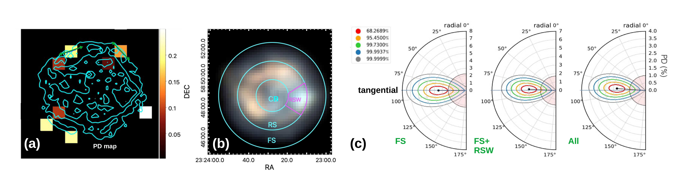<br />
图注：\(\textbf{(a):}\) Polarization map in the 3 - 6 keV energy band binned on a 42" pixel size of the SNR Cas A. Only pixels with confidence levels above $2\sigma$ are shown. For pixels with $3\sigma$ confidence level) the polarization angles are indicated with green arrows. \(\textbf{(b):}\) IXPE three color Stokes I image with superimposed the regions of interest used to test for an overall radial or tangential magnetic field orientation. The colder colors indicates a stronger non-thermal emission with respect to the warmer ones. \(\textbf{(c):}\) Polar diagrams of the measured PD and PA with respect to circular symmetry as confidence contours for the regions of panel \(\textbf{b}.\) The shaded pink region corresponds to the MDP99 level. Values around 90 degrees correspond to a tangentially oriented PA averaged over the region, while around 0◦ indicates on average a radially oriented PA. Images adapted from \(\cite{2022Vink_b}.\)<br />
对应解读：对应“偏振矢量叠加图”“偏振角相对于径向方向的诊断图”“统计诊断图或 Q-U 置信图”，以及关键图表导读中的图 2：Cas A 径向磁场结论。<br />
入选理由：该图同时给出 Cas A 的 IXPE 偏振图、区域划分和相对圆对称方向的偏振度/偏振角置信轮廓，是支撑“Cas A 磁场总体偏径向”结论的核心证据。它不仅展示矢量方向，还显示区域平均、MDP99 阴影和置信轮廓，比单纯形态图更能检验日报强调的显著性、径向/切向判别和区域平均效应。<br />
来源与置信度：\(arxiv_source\)；high；\(arxiv_source\) / skeleton.tex:figure[2]</p>
<p><strong>Fig06</strong><br />
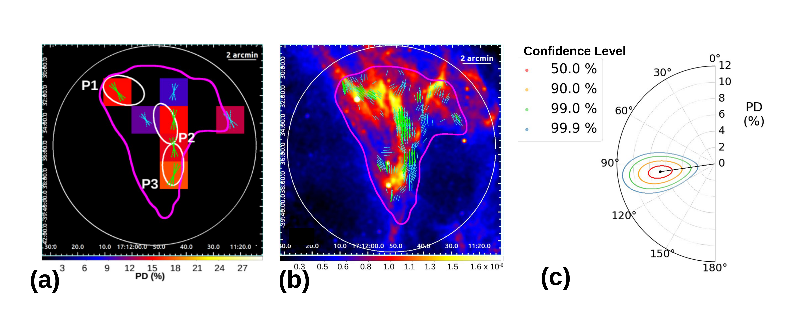<br />
图注：\(\textbf{(a):}\) polarization map binned with 2' wide pixels. The cyan and green vectors represent the direction of the magnetic field revealed at 2$\sigma$ and 3$\sigma$ significance levels, respectively. The length of the vectors is proportional to the PD. The dashed vectors show the 2$\sigma$ uncertainty on the magnetic field direction in each pixel to improve the visibility. \(\textbf{(b):}\) Chandra exposure-corrected mosaic of 0.5-7 keV images of the northwest of RX J1713 with the IXPE field of view as a white circle, the IXPE 2-5 keV contours in magenta. In cyan and green, we show the magnetic field lines obtained through Gaussian smoothing of the IXPE data with &gt;2$\sigma$ and &gt;3$\sigma$, respectively. \(\textbf{(c)}\): Polarization plot of the whole NW shell in the 2-5 keV energy band. Figures adapted from \(\cite{2024Ferrazzoli}.\)<br />
对应解读：对应“偏振矢量叠加图”“RX J1713.7-3946 和 Vela Jr. 的切向磁场图”，以及关键图表导读中的图 3：RX J1713.7-3946 的切向磁场证据。<br />
入选理由：该图展示 RX J1713.7-3946 西北壳层的 IXPE 磁场方向图、与 Chandra/X 射线轮廓的空间对应以及整体壳层的偏振图，是支撑综述中“RX J1713.7-3946 呈切向磁场形态”的关键图。矢量长度与偏振度相关，并标出 2σ/3σ 显著性，直接回应日报对大角尺度低表面亮度源区域平均和显著性判读的关注。<br />
来源与置信度：\(arxiv_source\)；high；\(arxiv_source\) / skeleton.tex:figure[6]</p>
<p><strong>Fig07</strong><br />
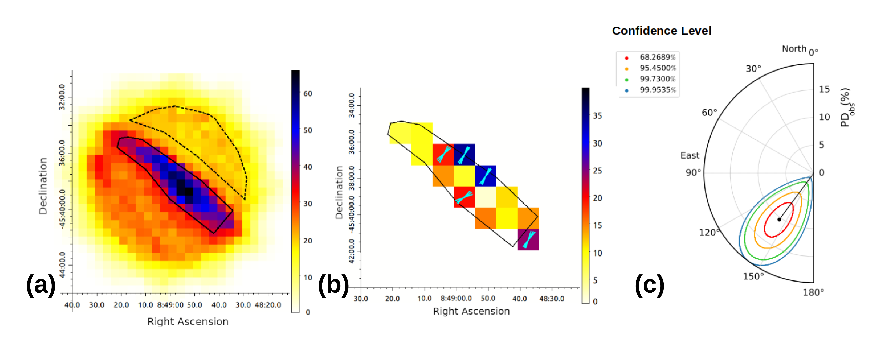<br />
图注：\(\textbf{(a):}\) IXPE Stokes I map of Vela Jr. with a pixel size of 30''. The map shows the source and background regions by solid and dashed lines, respectively. \(\textbf{(b):}\) Polarization map overlaid with polarization vectors and their $1\sigma$ errors on PA. The vectors correspond to pixels with a pretrial significance above $2\sigma$. \(\textbf{(c):}\) Polar plot obtained from the analysis of the source region. Images adapted from \(\cite{2024Prokhorov}.\)<br />
对应解读：对应“偏振矢量叠加图”“RX J1713.7-3946 和 Vela Jr. 的对应图支撑切向磁场结论”，以及模型拟合段落中的源区/背景区定义和区域级偏振估计。<br />
入选理由：该图给出 Vela Jr. 的 Stokes I 源区与背景区、偏振矢量图和源区 polar plot，是另一类切向磁场样本的直接观测证据。它对日报中比较径向源与切向源、检查背景区域和区域平均对偏振度/偏振角影响的讨论非常重要。<br />
来源与置信度：\(arxiv_source\)；high；\(arxiv_source\) / skeleton.tex:figure[7]</p>
<p><strong>Fig04</strong><br />
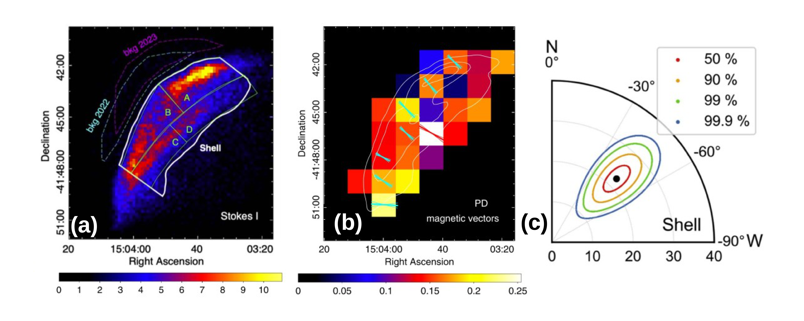<br />
图注：\(\textbf{(a):}\) IXPE Stokes I image in the 2–4 keV band of the SNR SN 1006 NW, with the regions of interest highlighted. The regions delineated with dashed lines correspond to the background regions. \(\textbf{(b):}\) PD map overlaid with magnetic field vectors and their $1\sigma$ uncertainties. The blue and red vectors correspond to pixels with significance $>2\sigma$ and $>3\sigma$, respectively. \(\textbf{(c):}\) polar plot of the Shell region after background subtraction. Images adapted from \(\cite{2023Zhou}.\)<br />
对应解读：对应“偏振矢量叠加图”“偏振角相对于径向方向的诊断图”，以及关键图表导读中的图 2：SN 1006 作为径向磁场样本。<br />
入选理由：该图展示 SN 1006 西北壳层的 IXPE Stokes I 区域、背景区域、偏振度图和已叠加的磁场矢量及 1σ 不确定性，并给出壳层区域 polar plot。它能直接支持“SN 1006 X 射线磁场偏径向”的结论，也便于读者检查背景扣除、区域划分和显著性阈值。<br />
来源与置信度：\(arxiv_source\)；high；\(arxiv_source\) / skeleton.tex:figure[4]</p>
<p><strong>Fig05</strong><br />
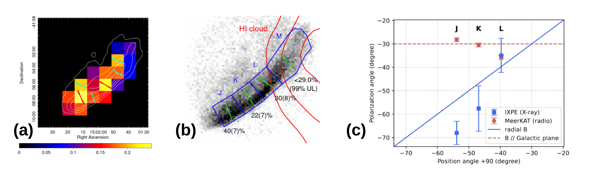<br />
图注：\(\textbf{(a):}\) IXPE PD map of the SW region of SN 1006 overlaid with magnetic field vectors and their $1\sigma$ uncertainties. \(\textbf{(b):}\) Regions selected in the polarization analysis on top of Stokes I image. The average magnetic field directions are shown with green lines. The flux between 5.7-10.7 km s$^{-1}$ of the HI cloud is marked by the red contours. \(\textbf{(c):}\) PA measured in 3 regions od SN 1006 SW with IXPE and MeerKAT compared to the position angles of the regions. The solid and dashed lines represent two magnetic configurations: radial magnetic orientation for the X-rays andd magnetic fields parallel to the Galactic plane in the radio. The error bars show the $1\sigma$ uncertainty. Images adapted from \(\cite{2025Zhou}.\)<br />
对应解读：对应“X 射线偏振与射电偏振对比图”，以及关键图表导读中关于 SN 1006、射电/ X 射线是否追踪同一磁场结构的讨论。<br />
入选理由：该图包含 SN 1006 西南区 IXPE 磁场矢量、区域选择、HI 云轮廓，以及 IXPE 与 MeerKAT 偏振角相对于区域位置角的比较，是候选图中最直接体现 X 射线偏振和射电偏振对照的一张。它能支撑日报关于不同电子能量、发射体积和环境结构可能导致偏振形态差异的解读。<br />
来源与置信度：\(arxiv_source\)；high；\(arxiv_source\) / skeleton.tex:figure[5]</p>
<p><strong>Fig03</strong><br />
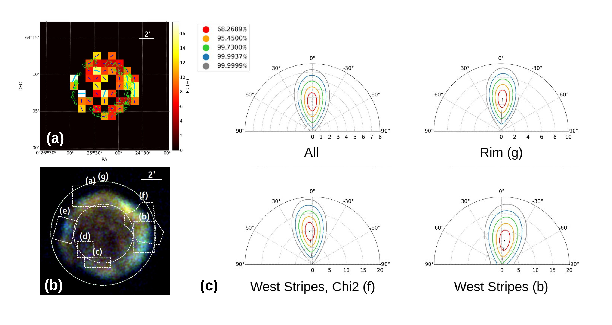<br />
图注：\(\textbf{(a):}\) Polarization map in the 3–6 keV energy band with a 1 arcminute pixel size. Only the pixels with significance higher than $1\sigma$ are shown. The blue bars represent the PA. The thicker cyan bars mark the pixels with significance higher than $2\sigma$. Superimposed in green are the 4–6 keV Chandra contours. \(\textbf{(b):}\) IXPE three-color image of Tycho, superimposed are the regions of interest. \(\textbf{(c):}\) Polar plots for the most significative Tycho regions of interest. Values more consistent with a direction of polarization of 0 degrees correspond to an overall tangentially oriented polarization averaged over the region of interest. Images adapted from \(\cite{2023Ferrazzoli}.\)<br />
对应解读：对应“偏振矢量叠加图”“偏振角相对于径向方向的诊断图”，以及关键图表导读中的图 2：Tycho 的径向磁场证据。<br />
入选理由：该图给出 Tycho 的 3–6 keV 偏振图、Chandra 轮廓、IXPE 三色图上的分析区域以及显著区域的 polar plots，是支撑 Tycho 磁场方向分类的重要观测图。它包含显著性分级和区域化偏振角诊断，适合用于说明日报中强调的不能只看亮弧段、需要结合区域 polar plot 判断径向/切向的问题。<br />
来源与置信度：\(arxiv_source\)；high；\(arxiv_source\) / skeleton.tex:figure[3]</p>
<h4 id="_57">强相关工作</h4>
<p>这篇文章与一系列同一源的 IXPE 发现/分析论文直接相连：Cas A、Tycho、SN 1006、RX J1713.7-3946 和 Vela Jr. 都应作为“同一源”上下文来读；RCW 86 则属于同类源和后续样本扩展。建议检索关键词包括 “IXPE Cas A polarization supernova remnant”, “IXPE Tycho SNR X-ray polarimetry”, “IXPE SN 1006 magnetic field”, “IXPE RX J1713.7-3946 polarization”, “IXPE Vela Jr polarization”, “RCW 86 IXPE”。这些论文通常给出综述中汇总数值的原始区域定义、似然和系统误差。</p>
<p>在基础理论上，它承接了扩散激波加速、SNR 射电偏振、宇宙线驱动磁场放大和 X 射线同步辐射冷却细丝等传统问题。相反或张力观点主要集中在两个方面：一是年轻 SNR 的径向磁场是否真的需要宇宙线反馈，还是可由流体不稳定性和投影解释；二是 TeV 伽马射线源中电子主导和强子主导模型对磁场强度的不同要求。建议检索关键词包括 “diffusive shock acceleration review”, “magnetic field amplification supernova remnants”, “radio polarization young SNR radial magnetic fields”, “leptonic hadronic RX J1713.7-3946”。</p>
<p><strong>同一事件 / 同类源线索</strong>：</p>
<ul>
<li><a href="https://arxiv.org/abs/2606.19979">https://arxiv.org/abs/2606.19979</a></li>
<li><a href="https://arxiv.org/pdf/2606.19979">https://arxiv.org/pdf/2606.19979</a></li>
<li><a href="https://ixpe.msfc.nasa.gov/">https://ixpe.msfc.nasa.gov/</a></li>
<li><a href="https://ui.adsabs.harvard.edu/search/q=IXPE%20Cas%20A%20supernova%20remnant%20polarization">https://ui.adsabs.harvard.edu/search/q=IXPE%20Cas%20A%20supernova%20remnant%20polarization</a></li>
<li><a href="https://ui.adsabs.harvard.edu/search/q=IXPE%20Tycho%20supernova%20remnant%20polarization">https://ui.adsabs.harvard.edu/search/q=IXPE%20Tycho%20supernova%20remnant%20polarization</a></li>
<li><a href="https://ui.adsabs.harvard.edu/search/q=IXPE%20SN%201006%20polarization">https://ui.adsabs.harvard.edu/search/q=IXPE%20SN%201006%20polarization</a></li>
<li><a href="https://ui.adsabs.harvard.edu/search/q=IXPE%20RX%20J1713.7-3946%20polarization">https://ui.adsabs.harvard.edu/search/q=IXPE%20RX%20J1713.7-3946%20polarization</a></li>
<li><a href="https://ui.adsabs.harvard.edu/search/q=IXPE%20Vela%20Jr%20polarization">https://ui.adsabs.harvard.edu/search/q=IXPE%20Vela%20Jr%20polarization</a></li>
</ul>
<p><strong>相似工作</strong>：</p>
<ul>
<li><a href="https://ui.adsabs.harvard.edu/search/q=supernova%20remnant%20X-ray%20polarimetry%20IXPE">https://ui.adsabs.harvard.edu/search/q=supernova%20remnant%20X-ray%20polarimetry%20IXPE</a></li>
<li><a href="https://ui.adsabs.harvard.edu/search/q=Cas%20A%20X-ray%20polarization%20IXPE">https://ui.adsabs.harvard.edu/search/q=Cas%20A%20X-ray%20polarization%20IXPE</a></li>
<li><a href="https://ui.adsabs.harvard.edu/search/q=Tycho%20SNR%20X-ray%20polarization%20IXPE">https://ui.adsabs.harvard.edu/search/q=Tycho%20SNR%20X-ray%20polarization%20IXPE</a></li>
<li><a href="https://ui.adsabs.harvard.edu/search/q=SN%201006%20X-ray%20polarization%20IXPE">https://ui.adsabs.harvard.edu/search/q=SN%201006%20X-ray%20polarization%20IXPE</a></li>
</ul>
<p><strong>基础理论 / 方法工作</strong>：</p>
<ul>
<li><a href="https://ui.adsabs.harvard.edu/search/q=diffusive%20shock%20acceleration%20supernova%20remnants%20review">https://ui.adsabs.harvard.edu/search/q=diffusive%20shock%20acceleration%20supernova%20remnants%20review</a></li>
<li><a href="https://ui.adsabs.harvard.edu/search/q=magnetic%20field%20amplification%20supernova%20remnants%20Bell%202004">https://ui.adsabs.harvard.edu/search/q=magnetic%20field%20amplification%20supernova%20remnants%20Bell%202004</a></li>
<li><a href="https://ui.adsabs.harvard.edu/search/q=synchrotron%20radiation%20polarization%20supernova%20remnants">https://ui.adsabs.harvard.edu/search/q=synchrotron%20radiation%20polarization%20supernova%20remnants</a></li>
<li><a href="https://ui.adsabs.harvard.edu/search/q=IXPE%20mission%20paper">https://ui.adsabs.harvard.edu/search/q=IXPE%20mission%20paper</a></li>
</ul>
<p><strong>相反观点 / 张力线索</strong>：</p>
<ul>
<li><a href="https://ui.adsabs.harvard.edu/search/q=RX%20J1713.7-3946%20leptonic%20hadronic%20gamma-ray%20models">https://ui.adsabs.harvard.edu/search/q=RX%20J1713.7-3946%20leptonic%20hadronic%20gamma-ray%20models</a></li>
<li><a href="https://ui.adsabs.harvard.edu/search/q=radial%20magnetic%20fields%20young%20supernova%20remnants%20Rayleigh-Taylor%20cosmic%20rays">https://ui.adsabs.harvard.edu/search/q=radial%20magnetic%20fields%20young%20supernova%20remnants%20Rayleigh-Taylor%20cosmic%20rays</a></li>
<li><a href="https://ui.adsabs.harvard.edu/search/q=supernova%20remnant%20magnetic%20field%20projection%20effects%20polarization">https://ui.adsabs.harvard.edu/search/q=supernova%20remnant%20magnetic%20field%20projection%20effects%20polarization</a></li>
</ul>
</details>
<h3 id="6-evidence-for-candidate-x-ray-pulsations-from-the-ultraluminous-x-ray-source-ngc-7456-ulx-1">6. Evidence for candidate X-ray pulsations from the ultraluminous X-ray source NGC 7456 ULX-1</h3>
<ul>
<li>来源：arXiv / astro-ph.HE</li>
<li>链接：https://arxiv.org/abs/2606.20308v1</li>
<li>作者：Yuanle Yao, Xiang-Dong Li, Xiao-Jie Xu</li>
<li>评分：novelty 8/10，importance 7/10，relevance 8/10，final 8.65/10</li>
<li>推荐理由：报告NGC 7456 ULX-1候选X射线脉动，若确认将增加PULX样本并约束超爱丁顿吸积中子星磁场；虽仍为候选信号，但对高能致密源读者值得关注。</li>
</ul>
<p><strong>中文题目</strong>：NGC 7456 ULX-1 中候选 X 射线脉动的证据</p>
<p><strong>做了什么</strong>：这篇文章重新分析了 NGC 7456 中超亮 X 射线源 NGC 7456 ULX-1 的 2023 年 XMM-Newton 观测，在约 \(0.22\,\mathrm{Hz}\) 附近找到一个候选相干脉动信号。作者使用了加速度搜索、\(Z_n^2\) 统计量和针对双星轨道运动的解调方法，试图在频率漂移和轨道多普勒调制下恢复相位相干性。若信号为真，NGC 7456 ULX-1 很可能是一个吸积中子星 ULX，估算的表面偶极磁场约为 \(10^{12}\text{--}10^{14}\,\mathrm{G}\)。文章的核心态度比较谨慎：这是候选脉动，需要独立数据或新观测确认。</p>
<p><strong>为什么重要</strong>：ULX 的本质问题仍然是高能天体物理中很实际的难题：它们到底主要是恒星级黑洞的超爱丁顿吸积、较大质量黑洞，还是相当一部分其实是中子星？每发现一个新的 ULX 脉冲星候选体，都会改变我们对中子星可承受吸积率、磁场调控、辐射束流和超爱丁顿盘风几何的认识。NGC 7456 ULX-1 如果被确认，将扩展已知脉冲 ULX 样本，并提供一个可用于检验吸积扭矩与轨道调制的对象。</p>
<p><strong>理论 / 观测 / 仪器方法价值</strong>：这篇文章的方法价值在于，它没有只依赖一个周期图峰，而是把加速度搜索、\(Z_n^2\) 相干检验和轨道解调结合起来处理短观测中可能存在的频率漂移。对观测者来说，它展示了在 XMM-Newton 数据中寻找弱脉动 ULX 的一套实用流程；对理论者来说，候选频率漂移和磁场估计提供了吸积扭矩模型的约束入口；对后续仪器规划来说，它指出了需要更长基线、更高计数率和重复观测来确认相干脉动。</p>
<p><strong>为什么应该关注</strong>：你应该关注它，不是因为它已经把 NGC 7456 ULX-1 定性为脉冲星，而是因为它位于 ULX 研究最敏感的证据链上：一个弱而可能受轨道运动破坏的脉动信号，如何从有限 X 射线光子中被统计地提出、怎样避免试验因子和红噪声误判、以及如何把一个候选周期转化为中子星吸积物理的约束。若后续观测确认，这会成为研究超爱丁顿中子星吸积的又一个样本；若被否定，也能告诉我们当前搜索流程在哪些系统误差上最脆弱。</p>
<details class="paper-detail">
<summary>展开详细解读：文章讲解、背景、理论、重点章节、图表与相关工作</summary>
<h4 id="_58">文章详细讲解</h4>
<p>科学问题：NGC 7456 ULX-1 是一个已知超亮 X 射线源，关键问题是它的致密天体是黑洞还是中子星。ULX 的定义通常对应非核点源 X 射线光度超过普通恒星级吸积源的爱丁顿量级，单从光度很难判断中心天体性质。真正能直接指向中子星的证据是相干 X 射线脉动，因为稳定自转调制意味着有固体表面和磁极吸积柱。本文要解决的就是：在已有 XMM-Newton 观测中，是否存在足够可信的周期性信号，且该信号是否可由二元轨道运动和吸积扭矩导致的频率漂移解释。</p>
<p>作者怎么做：作者分析 2023 年 XMM-Newton 对 NGC 7456 ULX-1 的观测，围绕约 \(0.22\,\mathrm{Hz}\) 的候选频率开展多种独立计时搜索。常规傅里叶周期图对恒定频率信号最敏感，但吸积中子星在双星轨道中会受到多普勒调制，短时间内还可能因吸积扭矩产生可测频率漂移。因此作者使用加速度搜索来容纳近似线性的频率漂移，用 \(Z_n^2\) 统计量检验折叠脉冲相位分布偏离均匀性的程度，并进一步用轨道解调分析尝试恢复相位相干性。多种方法在相近频率范围内给出一致候选信号，是本文证据链的主要支撑。</p>
<p>关键结果：候选信号位于 \(\nu\simeq0.22\,\mathrm{Hz}\)，对应自转周期约 \(P\simeq4.5\,\mathrm{s}\)，处在已知 ULX 脉冲星常见的秒级周期范围。作者还报告观测内存在频率漂移，这可能来自吸积扭矩导致的自转演化，也可能来自二元轨道多普勒效应，或者二者共同作用。基于候选自转参数、光度和吸积扭矩的量级估计，作者得到表面偶极磁场约 \(B\sim10^{12}\text{--}10^{14}\,\mathrm{G}\)，意味着普通强磁场中子星到磁星量级之间的解释都可能参与。</p>
<p>局限和下一步：本文最重要的限定词是“候选”。XMM-Newton 单次观测中的弱周期信号容易受计数统计、背景、窗口函数、试验因子、源混淆、红噪声和轨道参数退化影响。频率漂移的解释也不唯一：如果没有跨多次观测的相位连接或清楚的轨道解，无法把自转导数和轨道多普勒完全分开。下一步最直接的是用 XMM-Newton、NICER、NuSTAR 或未来大面积 X 射线望远镜进行重复长曝光，检验 \(0.22\,\mathrm{Hz}\) 附近信号是否复现、脉冲轮廓是否稳定、能段依赖是否符合磁极吸积柱预期，并尝试确定轨道周期和投影半长轴。</p>
<h4 id="_59">关键结果是怎么做出来的</h4>
<p>本文的证据链从样本选择开始：目标不是一个大样本统计，而是 NGC 7456 ULX-1 这一已知 ULX 的定点计时分析。作者聚焦 2023 年 XMM-Newton 观测，通常需要先筛除软质子背景耀发、选择源区和背景区、进行重心校正，并根据仪器时间分辨率和有效曝光确定可搜索的频率范围。由于候选信号在 \(0.22\,\mathrm{Hz}\) 附近，对应秒级周期，XMM-Newton EPIC 数据在时间分辨率上通常是可用的，但计数率和背景处理决定了显著性上限。</p>
<p>事件数和有效光子数是判断该结果强弱的核心。ULX 脉动搜索的信噪比并不只由总曝光决定，还由源光子数、背景占比、脉冲分数、能段选择和死时间/读出模式决定。本文摘要没有给出具体事件数，因此读者应在正文的数据处理表中核查源区净计数、背景计数、曝光时间、采用的能段以及是否合并了不同探测器。若候选信号主要由一个探测器或一个短时间片段贡献，其可信度会下降；若在不同探测器、不同能段或不同时间段中可重复出现，则证据更强。</p>
<p>统计检验方面，作者使用了加速度搜索和 \(Z_n^2\) 统计量。加速度搜索相当于允许频率在观测中按近似线性项漂移，从而避免真实相干信号在傅里叶空间被抹宽；\(Z_n^2\) 统计量则直接基于事件相位，检验折叠后的相位分布是否显著偏离均匀分布。这里最关键的不是单个峰的名义显著性，而是校正后的显著性：搜索了多少频率、多少频率导数、多少谐波数、多少轨道参数网格、多少能段和时间窗，都必须计入试验因子。</p>
<p>轨道解调是本文较有针对性的部分。对处于双星中的中子星，观测到的脉冲到达时间会因沿视线速度变化产生周期性延迟。若不解调，信号会在长曝光中失相干。作者设计轨道解调来恢复相位相干性，如果某组轨道参数能明显提高 \(Z_n^2\) 或周期图功率，这支持“真实脉冲被轨道运动调制”的解释。不过这种做法也增加了参数空间，容易引入 look-elsewhere effect；因此读者应重点查看作者如何估计全局虚警概率、是否用模拟或重采样检验噪声峰在轨道网格搜索中的最大值分布。</p>
<p>支撑结论的图表应包括候选频率附近的功率谱或 \(Z_n^2\) 曲线、加速度搜索的频率–频率导数或频率–加速度图、轨道解调前后显著性提升图、折叠脉冲轮廓以及可能的能段依赖脉冲分数。表格则应给出候选频率、频率漂移、最佳解调参数、名义和校正后显著性、净计数和背景比例。稳健性检验应包括改变源区半径、背景区、能段、时间筛选阈值、仪器组合以及随机化事件到达时间后的虚警率估计。</p>
<p>主要系统误差包括 XMM-Newton 背景耀发残留、窗口函数造成的旁瓣、邻近源污染、探测器模式或时间标定问题、轨道参数搜索过宽导致的偶然增强，以及非泊松红噪声。本文结论若只达到“evidence”而非“detection”，说明作者也意识到这些限制。读者判断这篇文章的强度时，应优先看全局显著性和独立复现，而不是只看 \(0.22\,\mathrm{Hz}\) 附近是否有一个漂亮峰。</p>
<details class="paper-subdetail">
<summary>展开背景、理论、公式、模型、章节和图表导读</summary>
<h4 id="_60">背景知识</h4>
<p>ULX 是位于星系核外、表观 X 射线光度通常超过 \(10^{39}\,\mathrm{erg\,s^{-1}}\) 的点源。早期讨论常把它们与中等质量黑洞联系起来，因为若各向同性辐射且不超过爱丁顿光度，许多 ULX 的光度似乎要求比普通恒星级黑洞更大的质量。但后来光谱、时变和多波段研究显示，相当多 ULX 可以由恒星级致密天体的超爱丁顿吸积和几何束流解释。</p>
<p>2014 年 M82 X-2 中发现相干脉动后，ULX 领域的认识发生了明显转向：至少一部分 ULX 的中心天体是中子星，而不是黑洞。随后 NGC 5907 ULX-1、NGC 7793 P13、NGC 300 ULX-1 等对象进一步表明，中子星能以远超经典爱丁顿率的表观光度辐射。这迫使理论模型同时解释高吸积率、磁层半径、辐射压主导盘、吸积柱辐射转移和可能的各向异性束流。</p>
<p>NGC 7456 ULX-1 的意义在于它可能为脉冲 ULX 样本增加一个新成员。已确认的脉冲 ULX 数量仍然不多，样本小导致我们很难判断脉冲 ULX 是 ULX 中的少数异常，还是大量 ULX 中只有少数因几何和信噪比条件合适而露出脉动。每一个新候选体都能帮助建立周期、光度、脉冲分数、轨道参数和宿主环境之间的统计联系。</p>
<p>现在重新看这类对象的原因有两个。第一，XMM-Newton、NuSTAR、Chandra、NICER 的档案数据积累已经足够多，许多过去只做成像和光谱分类的 ULX 可以被重新做精细计时搜索。第二，计时搜索方法本身在进步，尤其是针对频率漂移、轨道多普勒调制和弱信号的相干/半相干搜索，使得过去被抹平的脉动有机会被找出来。</p>
<p>该领域常见误区包括：把超过 \(10^{39}\,\mathrm{erg\,s^{-1}}\) 直接等同于黑洞；把一个周期图峰直接等同于稳健脉冲探测；把候选频率漂移全部归因于自转导数而忽略轨道运动；以及把磁场估计看成精确测量。实际上，ULX 的表观光度受几何束流、吸收、距离和能带外推影响，磁场估计强烈依赖扭矩模型和磁层半径假设。</p>
<h4 id="_61">基础理论 / 方法脉络</h4>
<p>从物理图像看，吸积中子星 ULX 的 X 射线主要来自内盘、磁层附近和磁极吸积柱。若中子星磁场足够强，内盘在磁层半径处被截断，物质沿磁力线落向磁极，随中子星自转形成周期性辐射调制。观测到的相干周期就是中子星自转周期，脉冲轮廓则受到磁轴倾角、观测倾角、吸积柱几何、散射包层和能量依赖吸收影响。</p>
<p>候选频率 \(\nu\simeq0.22\,\mathrm{Hz}\) 对应 \(P=1/\nu\simeq4.5\,\mathrm{s}\)。这类秒级周期在高质量 X 射线双星和脉冲 ULX 中并不异常。困难在于 ULX 常位于外星系，光子数有限，脉冲分数可能被未脉冲盘辐射、散射风和背景稀释。因而搜索不是简单做一个傅里叶变换，而是要把事件到达时间校正到太阳系质心，并尽可能处理轨道运动和自转变化。</p>
<p>若中子星在双星轨道中，观测频率会受到视向速度的多普勒调制。短观测中轨道速度变化可近似成恒定加速度，导致频率随时间线性漂移；更长或覆盖较大轨道相位的观测则需要完整轨道解调。吸积扭矩也能让自转频率变化，尤其在高吸积率下，\(\dot{\nu}\) 可能不可忽略。因此本文采用加速度搜索和轨道解调，是为了避免真实脉动在相位上逐渐散开。</p>
<p>\(Z_n^2\) 统计量是一种事件相位检验。给定试探频率和可能的频率导数/轨道参数，把每个光子的到达时间映射成相位；如果没有脉动，相位应近似均匀分布；如果存在脉动，一阶或多阶谐波会在相位分布中留下结构。\(n\) 越大，能容纳越复杂的脉冲轮廓，但也增加自由度和试验因子。因此 \(Z_n^2\) 的使用必须与全局显著性估计绑定。</p>
<p>磁场估计依赖吸积扭矩理论。粗略地，磁层半径由磁压与吸积物质动压平衡决定，共转半径由自转角速度决定。若系统接近平衡自转，或者观测到的 \(\dot{\nu}\) 可由吸积角动量输入解释，就可以从 \(P\)、\(\dot{P}\)、光度和假设的中子星质量半径反推出磁偶极矩。这里的退化很强：距离、各向异性束流因子、辐射效率、快慢参量、盘-磁场耦合模型都会改变 \(B\) 的数值。</p>
<h4 id="_62">公式与推导</h4>
<p>第一步从表观光度和通量的关系开始。若源距为 \(D\)，观测能带内通量为 \(F_X\)，各向同性等效光度为</p>
<div class="math-display">\[L_{\rm iso}=4\pi D^2 F_X .\]</div>
<p>这里 \(L_{\rm iso}\) 是未修正束流的表观量，\(D\) 是宿主星系距离，\(F_X\) 是经吸收模型修正或未修正的 X 射线通量，具体取决于论文采用的光谱拟合定义。ULX 的“超亮”判断通常以 \(L_{\rm iso}\gtrsim10^{39}\,\mathrm{erg\,s^{-1}}\) 为参照，但这不等价于真实玻尔ometric光度。</p>
<p>第二步连接光度和吸积率。若辐射效率为 \(\eta\)，则</p>
<div class="math-display">\[L \simeq \eta \dot{M}c^2 ,\]</div>
<p>其中 \(\dot{M}\) 是吸积率，\(c\) 是光速。对中子星也常写成重力势能释放形式</p>
<div class="math-display">\[L \simeq \frac{GM\dot{M}}{R} ,\]</div>
<p>其中 \(M\) 和 \(R\) 是中子星质量和半径，\(G\) 是引力常数。这两个式子给出从 X 射线光度估计 \(\dot{M}\) 的入口，但在 ULX 中束流、风和能带外推会带来系统偏差。</p>
<p>第三步给出脉动频率与相位模型。若忽略轨道项，事件到达时间 \(t_i\) 的相位可写为</p>
<div class="math-display">\[\phi_i=2\pi\left[\nu_0(t_i-t_0)+\frac{1}{2}\dot{\nu}(t_i-t_0)^2\right] \bmod 2\pi .\]</div>
<p>这里 \(\nu_0\) 是参考时刻 \(t_0\) 的自转频率，\(\dot{\nu}\) 是频率导数。若 \(\dot{\nu}\) 或轨道多普勒未被建模，相位误差会随时间积累，导致相干功率下降。</p>
<p>第四步加入短时加速度近似。若视向加速度为 \(a_{\parallel}\)，观测频率近似满足</p>
<div class="math-display">\[\nu_{\rm obs}(t)\simeq \nu_{\rm spin}\left(1+\frac{v_{\parallel}(t)}{c}\right),\qquad \dot{\nu}_{\rm obs}\simeq \nu_{\rm spin}\frac{a_{\parallel}}{c} .\]</div>
<p>这里 \(v_{\parallel}\) 和 \(a_{\parallel}\) 是沿视线速度和加速度。加速度搜索实际上就是在一组 \(\dot{\nu}_{\rm obs}\) 或 \(a_{\parallel}\) 上寻找最大相干功率。</p>
<p>第五步写出圆轨道到达时延的基本形式。若投影半长轴为 \(a_x\sin i\)，轨道周期为 \(P_{\rm orb}\)，轨道相位零点为 \(T_0\)，则光行时延可近似为</p>
<div class="math-display">\[\Delta t_{\rm orb}=\frac{a_x\sin i}{c}\sin\left[\frac{2\pi(t-T_0)}{P_{\rm orb}}\right] .\]</div>
<p>解调时用 \(t_i' = t_i-\Delta t_{\rm orb}\) 替代原始到达时刻。若参数正确，脉冲相位更集中，\(Z_n^2\) 或折叠脉冲显著性应提高。</p>
<p>第六步是 \(Z_n^2\) 检验。给定相位 \(\phi_i\)，\(N\) 个事件的统计量为</p>
<div class="math-display">\[Z_n^2=\frac{2}{N}\sum_{k=1}^{n}\left[\left(\sum_{i=1}^{N}\cos k\phi_i\right)^2+\left(\sum_{i=1}^{N}\sin k\phi_i\right)^2\right] .\]</div>
<p>在无信号且相位均匀的理想泊松情形下，\(Z_n^2\) 近似服从自由度为 \(2n\) 的 \(\chi^2\) 分布。\(n=1\) 对近正弦脉冲最敏感，较大 \(n\) 可捕捉非正弦轮廓。</p>
<p>第七步是试验因子修正。若单次检验虚警概率为 \(p_1\)，独立试验数为 \(N_{\rm tr}\)，全局虚警概率可近似写为</p>
<div class="math-display">\[p_{\rm glob}=1-(1-p_1)^{N_{\rm tr}}\simeq N_{\rm tr}p_1\quad (p_1\ll1) .\]</div>
<p>这里 \(N_{\rm tr}\) 包括频率、频率导数、轨道参数、谐波数、能段和时间窗等有效搜索次数。候选信号是否稳健，关键取决于 \(p_{\rm glob}\) 而非只看 \(p_1\)。</p>
<p>第八步连接吸积扭矩和磁场。磁偶极矩 \(\mu\) 与表面偶极磁场可写为</p>
<div class="math-display">\[\mu = B R^3 .\]</div>
<p>磁层半径的常用标度为</p>
<div class="math-display">\[r_m\simeq \xi\left(\frac{\mu^4}{2GM\dot{M}^2}\right)^{1/7} ,\]</div>
<p>其中 \(\xi\) 是盘-磁层耦合系数。吸积扭矩量级为</p>
<div class="math-display">\[N_{\rm acc}\simeq \dot{M}\sqrt{GMr_m} .\]</div>
<p>若该扭矩驱动自转演化，则</p>
<div class="math-display">\[2\pi I\dot{\nu}=N_{\rm acc} ,\]</div>
<p>其中 \(I\) 是中子星转动惯量。这组方程说明如何从 \(L\)、\(\dot{\nu}\)、\(M\)、\(R\)、\(I\) 和模型系数反推 \(B\)，也说明为什么 \(B\sim10^{12}\text{--}10^{14}\,\mathrm{G}\) 往往是模型依赖的宽范围而不是精确测量。</p>
<h4 id="_63">模型拟合 / 应用方法</h4>
<p>这类工作的第一层拟合是光谱和通量估计。通常需要对 XMM-Newton 的 EPIC-pn 和 MOS 数据做源区/背景区提取，拟合吸收加连续谱模型，例如吸收幂律、盘黑体或双组分 ULX 谱。光谱拟合给出能带通量和光度，从而进入吸积率与磁场估计。这里的系统误差包括吸收柱密度与软谱成分退化、背景选择、交叉定标、距离误差，以及将有限能带光度外推到总光度时的模型依赖。</p>
<p>第二层拟合是时序模型。最简单模型包含 \(\nu\) 和可能的 \(\dot{\nu}\)，通过最大化周期图功率或 \(Z_n^2\) 得到候选频率。若考虑加速度，参数可等价表示为 \(\nu\) 与 \(a_{\parallel}\) 或 \(\dot{\nu}\)。若考虑轨道解调，还需搜索 \(P_{\rm orb}\)、\(a_x\sin i\)、\(T_0\)，可能还包括偏心率参数。由于单次曝光通常覆盖不了完整轨道，轨道参数之间会高度退化。</p>
<p>第三层是显著性和后验评估。若使用频率网格搜索，不能只引用最大 \(Z_n^2\) 的局部概率；需要通过解析试验因子、Monte Carlo 事件随机化、bootstrap、时间洗牌或背景模拟估计全局虚警率。若采用贝叶斯方法，则可以比较有脉冲模型和无脉冲模型的证据，或给出 \(\nu\)、\(\dot{\nu}\)、脉冲分数和轨道参数的后验分布。本文摘要强调多种独立技术，而读者应检查它们是否真正独立，还是共享同一组光子和相似参数搜索。</p>
<p>残差诊断很重要。折叠脉冲轮廓应检查是否由少数相位 bins 或单个时间段驱动；动态功率谱应显示候选频率是否连续漂移而不是随机跳变；解调前后相位残差应明显收敛；不同能段的脉冲分数若有一致趋势，也可支持源内物理解释。若候选峰只在某个背景耀发残留时段出现，或只在某个探测器出现，就需要特别谨慎。</p>
<p>主要退化关系包括 \(\dot{\nu}\) 与轨道加速度退化、脉冲分数与背景稀释退化、磁场 \(B\) 与束流因子及 \(\dot{M}\) 退化、以及磁层半径系数 \(\xi\) 与扭矩模型退化。实际应用上，这类拟合最适合生成可检验预言：下一次观测应在哪个频率范围寻找信号，若轨道解调正确相位应如何演化，若吸积扭矩为主 \(\dot{\nu}\) 应随光度怎样变化。</p>
<h4 id="_64">重点章节 / 结果段落怎么读</h4>
<ol>
<li>
<p>数据与预处理部分应首先阅读。重点看 XMM-Newton 观测日期、曝光、仪器模式、时间分辨率、背景耀发筛选、源区半径、背景区选择、重心校正和能段选择。对一个候选弱脉动而言，这些细节直接决定可搜索频率范围、净计数和虚警率。</p>
</li>
<li>
<p>周期搜索方法部分是全文核心。读者应比较普通傅里叶/周期图、加速度搜索和 \(Z_n^2\) 检验的设置：频率步长是否过采样、搜索范围多宽、频率导数或加速度网格多密、采用了哪些谐波数 \(n\)，以及如何估计独立试验数。</p>
</li>
<li>
<p>轨道解调段落需要仔细读。这里应关注作者假设的轨道形状、搜索的 \(P_{\rm orb}\) 和 \(a_x\sin i\) 范围、最佳参数是否物理合理、解调后显著性提升是否超过试验因子代价，以及是否存在多个近似等价的轨道解。</p>
</li>
<li>
<p>结果部分应围绕 \(0.22\,\mathrm{Hz}\) 候选信号展开阅读。重点核查候选频率、频率漂移、脉冲轮廓、脉冲分数、局部和全局显著性、不同仪器/能段/时间段的一致性。若有表格列出最佳搜索参数和显著性，应把它作为判断结论强度的主要依据。</p>
</li>
<li>
<p>讨论部分主要看物理解释是否适度。作者将候选脉动解释为吸积中子星，并估算 \(B\sim10^{12}\text{--}10^{14}\,\mathrm{G}\)。读者应注意这些估算依赖扭矩模型、光度、束流和是否把频率漂移解释为真实自转变化。最后的确认需求也很关键：独立观测复现比任何单次观测内的复杂搜索都更有说服力。</p>
</li>
</ol>
<h4 id="_65">建议重点查看的图表</h4>
<ol>
<li>
<p>候选频率附近的功率谱或周期图：看 \(0.22\,\mathrm{Hz}\) 峰是否孤立、峰宽是否符合观测时长和漂移预期、旁瓣是否可能来自窗口函数。</p>
</li>
<li>
<p>加速度搜索图或 \(\nu\)–\(\dot{\nu}\) 统计量图：看最大值是否形成连续物理轨迹，而不是单像素噪声尖峰；同时关注允许的 \(\dot{\nu}\) 范围是否合理。</p>
</li>
<li>
<p>\(Z_n^2\) 显著性曲线：看不同 \(n\) 下峰值是否稳定，局部显著性与全局显著性的差别有多大，是否存在多个相近候选。</p>
</li>
<li>
<p>轨道解调前后对比图：看解调后峰值是否显著增强、相位是否更相干；同时检查参数网格搜索是否会自然产生类似增强。</p>
</li>
<li>
<p>折叠脉冲轮廓：看轮廓是否平滑、脉冲分数是否显著、误差条是否支持非均匀相位分布，是否有单个 bin 主导结果。</p>
</li>
<li>
<p>能段或探测器分割检验：看候选信号是否在软/硬能段、EPIC-pn/MOS 或不同时间片中复现；若只有一个子样本显示信号，需要降低置信度。</p>
</li>
<li>
<p>光谱或光度表：看用于磁场估计的 \(L_X\) 如何得到，吸收柱密度、谱模型和距离误差会怎样影响 \(\dot{M}\) 与 \(B\)。</p>
</li>
</ol>
<h4 id="_66">关键图表逐图导读</h4>
<p>图 1：通常应是 XMM-Newton 图像或光变曲线。若为图像，坐标轴应为空间坐标，标出源区和背景区；读者要看 NGC 7456 ULX-1 是否与邻近源分离良好，背景区是否代表局部背景。若为光变曲线，横轴为时间，纵轴为计数率；重点看是否存在背景耀发残留或强非平稳变化，因为这些会影响周期搜索。</p>
<p>图 2：候选频率附近的周期图或搜索功率图。横轴应为频率 \(\nu\)，纵轴为功率、\(Z_n^2\) 或等效显著性。关键是 \(0.22\,\mathrm{Hz}\) 附近峰值相对于噪声背景的高度，以及是否画出了局部和全局显著性阈值。读图陷阱是只看最高峰而忽略搜索带宽和试验因子。</p>
<p>图 3：加速度搜索或动态频谱图。若横轴为 \(\nu\)、纵轴为 \(\dot{\nu}\) 或加速度，颜色表示统计量，读者要看最大区域是否具有物理连续性。若是时间–频率图，则应检查候选信号是否随时间平滑漂移。陷阱是把噪声中的离散热点误认为频率漂移轨迹。</p>
<p>图 4：轨道解调结果图。横轴可能为轨道周期、投影半长轴或解调参数，纵轴为最大 \(Z_n^2\) 或显著性。关键是解调后是否把相干功率集中到一个较窄参数区，并且提升幅度是否足以抵消更大参数空间带来的虚警概率。若存在多个等高岛状解，说明轨道参数未被唯一约束。</p>
<p>图 5：折叠脉冲轮廓。横轴为自转相位，纵轴为背景扣除后的计数率或归一化强度。应看两个周期重复绘制时轮廓是否一致、误差条是否支持明显调制、脉冲分数是否与统计显著性相匹配。陷阱是相位 bins 过多会制造噪声结构，bins 过少又会掩盖真实轮廓。</p>
<p>图 6：物理解释或磁场约束图。若有 \(B\)、\(\dot{M}\)、\(P\) 或 \(\dot{P}\) 的关系图，读者要看作者采用的扭矩模型曲线、允许区域和系统误差带。重要的是确认 \(B\sim10^{12}\text{--}10^{14}\,\mathrm{G}\) 是否来自稳健测量，还是来自一组模型假设下的量级估计。</p>
</details>
<h4 id="_67">论文原图 / 可嵌入图片</h4>
<p><strong>Fig05</strong><br />
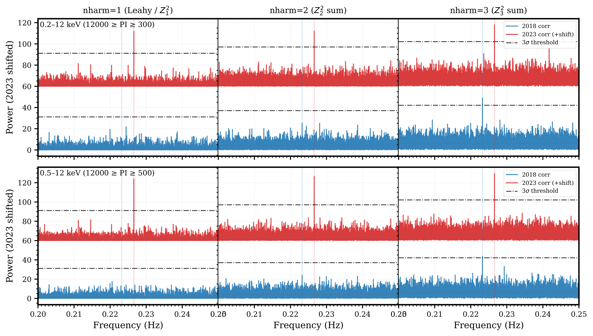<br />
图注：{ Fourier-domain representations equivalent to the $Z^2_n$ statistics ($n=1,2,3$) computed from the Leahy-normalized power spectra of the orbit-corrected time series for the 2018 and 2023 \(\textit{XMM-Newton}/PN\) observations. The top and bottom rows show the 0.2--12.0~keV and 0.5--12.0~keV selections, respectively. For clarity, the 2023 spectra are shifted upward by a constant offset of 60. A narrow and dominant peak at the pulsation frequency is recovered for all $n$, demonstrating that the orbital demodulation restores near-complete phase coherence across the observation. }<br />
对应解读：对应“建议重点查看的图表”第1、3、4、6项，以及“关键图表逐图导读”中图2的候选频率周期图、\(Z_n\)^2显著性曲线和解调后相干峰检查。<br />
入选理由：这张图直接展示轨道修正后在候选脉冲频率处的窄峰，并比较n=1,2,3的等效Z_n^2统计量、2018与2023两次观测以及0.2–12.0和0.5–12.0 keV能段。它最能支撑日报关于0.22 Hz候选信号是否稳定、不同谐波下峰值是否一致、能段选择和独立观测复现性的讨论。<br />
来源与置信度：\(arxiv_source\)；high；\(arxiv_source\) / main.tex:figure[5]</p>
<p><strong>Fig04</strong><br />
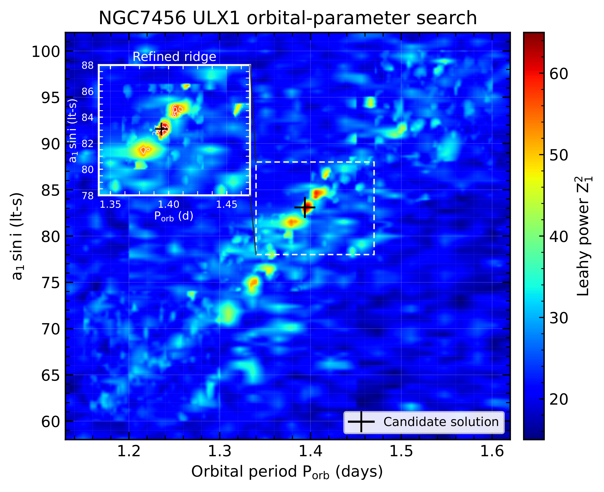<br />
图注：Single-harmonic Leahy/Rayleigh orbital-parameter map for the 2023 \(\textit{XMM-Newton}/PN\) observation, following the banana-plot representation of \(\citet{pintore_new_2025}.\) The main panel shows the extended search in $P_{\rm orb}$ and $a_1\sin i$, and the inset zooms into the refined high-power ridge. At each grid point, we applied a circular-orbit delay correction and maximized $Z^2_1$ over the orbital phase and frequency derivative at the candidate spin frequency. The dashed white rectangle marks the inset region. The color scale gives the local Leahy $Z^2_1$ power; since the coherent $H$-test maximum occurs at $m=1$, this map presents the corresponding single-harmonic view of the candidate solution. The white contours mark approximate 1, 2, and 3$\sigma$ levels using $\Delta Z^2_1=2.30$, 6.18, and 11.83 for two profiled parameters.<br />
对应解读：对应“建议重点查看的图表”第2、4项，以及“关键图表逐图导读”中图4的轨道解调参数搜索图和模型拟合段落中的轨道参数退化讨论。<br />
入选理由：该图给出P_orb与a_1 sin i参数空间中的单谐波Leahy/Rayleigh功率图，并标出高功率脊线、放大区域和近似1–3σ等值线。它直接检验轨道解调是否把功率集中到物理连续区域，而不是单个噪声热点，也能展示轨道周期与投影半长轴之间的退化。<br />
来源与置信度：\(arxiv_source\)；high；\(arxiv_source\) / main.tex:figure[4]</p>
<p><strong>Fig07</strong><br />
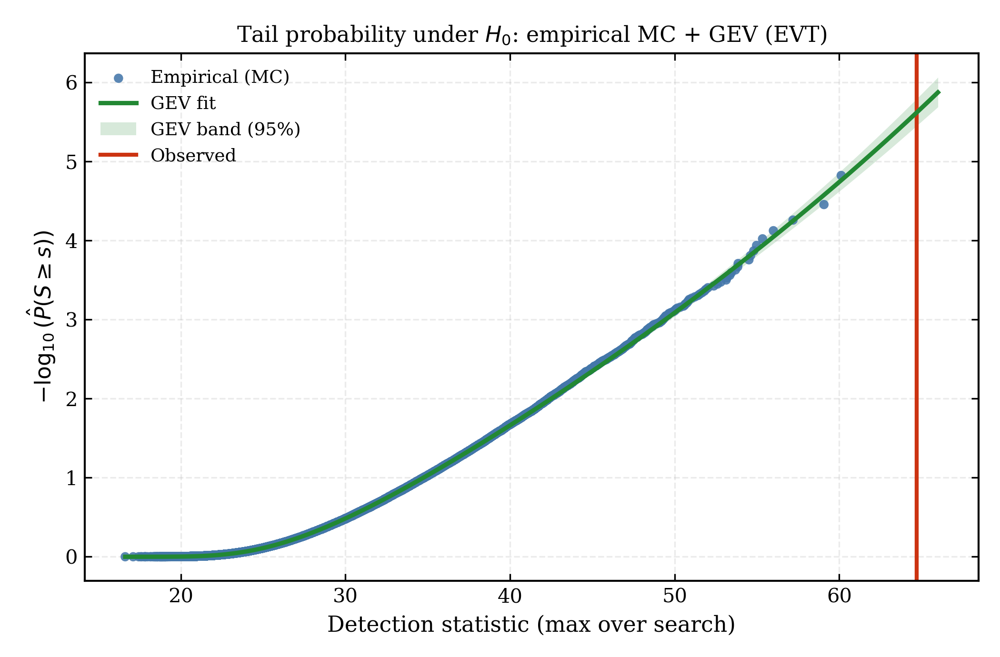<br />
图注：{ Empirical distribution of the maximum detection statistic obtained from 100,000 noise-only Monte Carlo realizations of the full PSO-based coherent search applied to the 2023 data. The solid curve shows the best-fit generalized extreme value (GEV) model to the simulated maxima distribution. The vertical red line marks the observed value from the real data ($S_{\rm obs}=64.6$), which lies beyond the range directly sampled by the Monte Carlo simulations, with no simulated realization exceeding this value. Extrapolation of the fitted GEV model to the observed statistic gives an estimated tail false-alarm probability of $\mathrm{FAP}_{\rm GEV}\approx 2.5\times10^{-6}$. }<br />
对应解读：对应“建议重点查看的图表”第3、4项，以及模型拟合段落中关于全局虚警率、Monte Carlo噪声模拟和试验因子的显著性评估。<br />
入选理由：该图用10万次噪声-only Monte Carlo给出完整PSO相干搜索的最大统计量分布，并以GEV外推估计观测统计量S_obs=64.6对应的全局FAP。它比单纯展示峰值更能回答日报强调的核心问题：候选脉冲是否在考虑搜索参数空间后仍显著。<br />
来源与置信度：\(arxiv_source\)；high；\(arxiv_source\) / main.tex:figure[7]</p>
<p><strong>Fig06</strong><br />
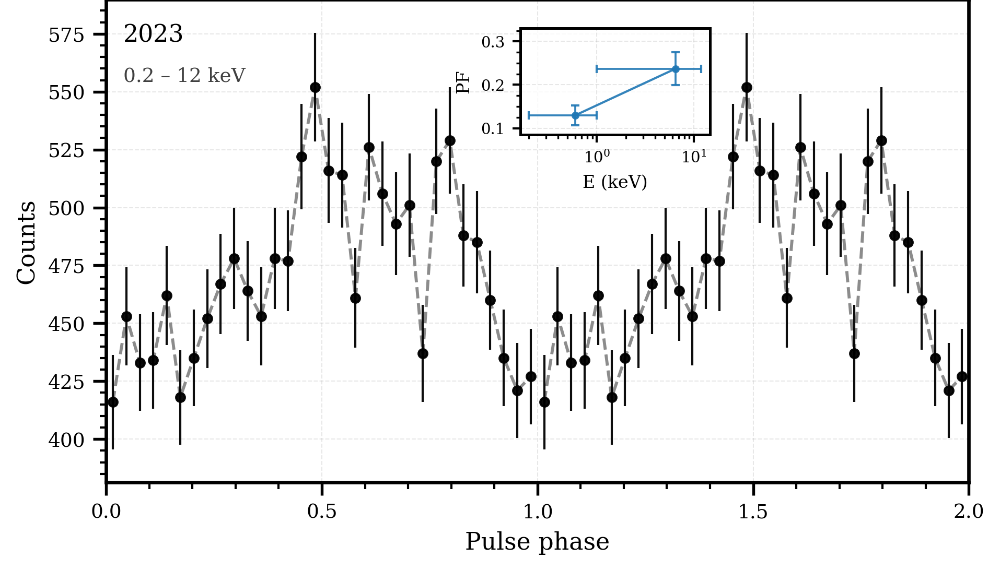<br />
图注：Orbit-corrected pulse profile of NGC~7456~ULX--1 in the 0.2--12.0~keV band for the 2023 \(\textit{XMM-Newton}/PN\) observation. Two pulse cycles are shown for clarity. A broad candidate modulation is visible in the data. The inset displays the energy dependence of the pulsed fraction for the same observation.<br />
对应解读：对应“建议重点查看的图表”第5、6项，以及“关键图表逐图导读”中图5的折叠脉冲轮廓和能量依赖脉冲分数检查。<br />
入选理由：该图展示2023年PN数据经轨道修正后的0.2–12.0 keV折叠脉冲轮廓，并在插图中给出脉冲分数的能量依赖。它直接支持对轮廓是否平滑、误差是否允许非均匀相位分布、以及信号是否具有能段依赖的诊断。<br />
来源与置信度：\(arxiv_source\)；high；\(arxiv_source\) / main.tex:figure[6]</p>
<h4 id="_68">强相关工作</h4>
<p>这篇工作应放在脉冲 ULX 发现史中理解。M82 X-2 的发现首先证明 ULX 可以由中子星驱动；NGC 5907 ULX-1 和 NGC 7793 P13 等对象进一步显示，中子星在高表观光度下仍可保持可探测相干脉动。NGC 7456 ULX-1 若被确认，属于同类源扩展，而不是全新物理类别。建议检索关键词包括 “pulsating ultraluminous X-ray source”, “PULX”, “NGC 7456 ULX-1”, “XMM-Newton acceleration search”, “\(Z_n^2\) pulsation search”。</p>
<p>同时也要把它与非脉冲 ULX 和超爱丁顿吸积模型联系起来。很多 ULX 没有探测到脉动，并不必然说明它们是黑洞；脉动可能被几何、散射、低脉冲分数或轨道失相干隐藏。相反，候选脉动也不能单独跳过严格显著性检验。与本文存在张力或互补关系的方向包括：黑洞 ULX 解释、强束流模型、磁星级磁场是否必要、以及吸积扭矩模型能否同时解释光度和自转演化。可检索 “super-Eddington accretion neutron star”, “ULX beaming”, “accretion torque PULX”, “magnetar field ULX”。</p>
<p><strong>同一事件 / 同类源线索</strong>：</p>
<ul>
<li><a href="https://arxiv.org/abs/2606.20308">https://arxiv.org/abs/2606.20308</a></li>
</ul>
<p><strong>相似工作</strong>：</p>
<ul>
<li><a href="https://arxiv.org/abs/1410.3590">https://arxiv.org/abs/1410.3590</a></li>
<li><a href="https://arxiv.org/abs/1609.07375">https://arxiv.org/abs/1609.07375</a></li>
<li><a href="https://arxiv.org/abs/1609.07129">https://arxiv.org/abs/1609.07129</a></li>
</ul>
<p><strong>基础理论 / 方法工作</strong>：</p>
<ul>
<li><a href="https://arxiv.org/abs/1703.10728">https://arxiv.org/abs/1703.10728</a></li>
</ul>
<p><strong>相反观点 / 张力线索</strong>：</p>
<p>（未提供）</p>
</details>
<h3 id="7-dynamical-tidal-response-of-neutron-stars-from-effective-field-theory-to-gravitational-waveforms">7. Dynamical Tidal Response of Neutron Stars: from Effective Field Theory to Gravitational Waveforms</h3>
<ul>
<li>来源：arXiv / astro-ph.HE</li>
<li>链接：https://arxiv.org/abs/2606.19446v1</li>
<li>作者：Thomas Apostolidis, Valerio De Luca, Leonardo Gualtieri, Takuya Katagiri, Paolo Pani, Luca Santoni</li>
<li>评分：novelty 8/10，importance 8/10，relevance 7/10，final 8.65/10</li>
<li>推荐理由：Neutron-star dynamical tides and GW waveform systematics are solid astro-ph.HE/compact-object work with potentially important implications for EOS inference in third-generation detectors, though not directly gamma-ray/cosmic-ray focused.</li>
</ul>
<p><strong>中文题目</strong>：中子星的动力学潮汐响应：从有效场论到引力波波形</p>
<p><strong>做了什么</strong>：这篇论文把中子星在时变外部潮汐场中的相对论响应系统地推到频率的二阶，并把结果接入双中子星并合的保守动力学和引力波相位。作者结合世界线有效场论与相对论恒星扰动理论，通过匹配得到完整的领先阶动力学潮汐修正，包括一个普适的对数 running 项以及依赖正则化方案的有限项。核心结论是：晚期旋近阶段的动力学潮汐不能只用准正则模激发来概括；在小紧致度中子星中，动力学 Love 数可明显大于静态 Love 数，并可能被 Einstein Telescope 等三代探测器测量。忽略这些效应会把动力学频率依赖误归入静态 Love 数，从而偏置核物质状态方程推断。</p>
<p><strong>为什么重要</strong>：双中子星引力波中最有价值的物理量之一是潮汐 Love 数，因为它连接宏观波形相位与高密核物质状态方程。当前许多波形模型把潮汐响应近似为静态或用少数模共振修正，但三代探测器的信噪比会使这种近似不再安全。本文的重要性在于，它给出了相对论框架下、可与波形模型直接匹配的完整领先阶动力学潮汐项，并指出存在不能由模激发图像完全吸收的附加贡献。</p>
<p><strong>理论 / 观测 / 仪器方法价值</strong>：理论上，本文把世界线有效场论中的潮汐算符、维数正则化、重整化 running 与相对论恒星结构计算连在一起，给出动力学 Love 数进入保守势和波形相位的规范化结果。观测上，它提供了评估三代探测器是否能测量动力学 Love 数、以及现有静态潮汐参数推断会受到多大偏置的工具。方法上，它为未来把更高阶潮汐、旋转、有限温度或非线性响应纳入波形模型提供了清晰的匹配模板。</p>
<p><strong>为什么应该关注</strong>：如果你关心双中子星并合如何约束核物质状态方程，这篇文章提醒你：未来高精度数据中，所谓测到的静态 Love 数可能混入了频率依赖响应。它也告诉波形建模者，单靠把若干恒星本征模加进模型未必足够；有效场论中的局域潮汐算符和 running 项会在晚期旋近累积可观相位。对三代探测器科学目标而言，这类修正决定了我们是在做精密核物理，还是被模型系统误差主导。</p>
<details class="paper-detail">
<summary>展开详细解读：文章讲解、背景、理论、重点章节、图表与相关工作</summary>
<h4 id="_69">文章详细讲解</h4>
<p>科学问题：双中子星旋近时，每颗中子星处在伴星产生的时变潮汐场中。传统潮汐波形常用静态 Love 数描述四极形变，即默认诱导四极矩几乎瞬时跟随外场。但实际并合晚期的轨道频率逐渐接近恒星流体模频率，响应必然出现频率依赖。本文要解决的问题不是简单地再加一个模共振项，而是问：在全相对论恒星中，频率展开到二阶时，潮汐响应的完整结构是什么？它如何进入双星保守动力学和引力波相位？这些项在三代探测器中是否可测，若忽略会给静态 Love 数和状态方程带来多大偏置？</p>
<p>作者怎么做：论文把两个工具拼在一起。第一是扩展天体的世界线有效场论，把中子星在外部引力场中的有限尺度效应写成世界线上的潮汐算符，系数就是需要匹配的响应参数。第二是相对论恒星扰动理论，直接求解静态球对称恒星在外部时变偶极或四极潮汐场中的线性响应。作者在维数正则化下处理近区发散，并通过一致匹配把恒星扰动解中的渐近系数对应到有效场论 Wilson 系数。这样不仅得到动力学 Love 数的频率二阶项，还得到一个普适的对数 running 项以及方案依赖的有限项。</p>
<p>关键结果：他们发现，相对论动力学潮汐响应包含不能完全用离散模激发解释的贡献。换句话说，把响应写成若干本征模的洛伦兹型极点虽然能抓住一部分物理，但在相对论近区匹配中还会出现局域项、running 项和有限重整化项。动力学 Love 数相对静态 Love 数的增强在较小紧致度恒星中更明显，并且依赖状态方程。虽然这些修正在后牛顿计数中形式上进入 \(8\)PN 潮汐相位，但晚期旋近的高频段累积相位不可忽略。Fisher 矩阵估计表明，Einstein Telescope 这类三代探测器对若干质量和状态方程组合有机会测量动力学 Love 数。</p>
<p>局限和下一步：本文主要处理领先阶动力学潮汐、频率二阶展开和非旋转相对论恒星，重点在旋近阶段的线性响应。真实事件中还会有自旋诱导的潮汐耦合、偏心率、质量不等、磁场、有限温度、非线性潮汐、近接触阶段的流体效应以及波形系统误差。Fisher 矩阵也只是在高信噪比和近似高斯后验下估计可测性，实际参数推断需要完整贝叶斯分析和注入回收。下一步自然是把这些动力学潮汐系数嵌入可用于数据分析的完整波形族，并与数值相对论、准正则模模型和现有双中子星观测联合校验。</p>
<h4 id="_70">关键结果是怎么做出来的</h4>
<p>样本和对象不是传统意义上的天体样本，而是一组相对论中子星模型与状态方程。作者对不同质量、紧致度和状态方程的非旋转球对称恒星求解潮汐扰动，并把每个模型的外部渐近响应匹配到有效场论参数。读者应重点看他们如何定义静态 Love 数、动力学 Love 数的频率二阶系数、以及对数 running 的归一化；这些定义决定了后面波形相位中哪些项是物理可观测的，哪些项会随重整化方案重新分配。</p>
<p>证据链的第一环是匹配计算。恒星扰动理论给出近区外部解中随半径增长的外加潮汐场项和随半径衰减的诱导多极矩项；有效场论给出同一物理量的世界线散射振幅或近区势。两者在重叠区域比较，就能抽取 Wilson 系数。本文声称首次给出完整领先阶动力学潮汐修正，关键就在于不仅保留普适 logarithmic running，还保留方案依赖有限项，并说明这些项如何在保守动力学与辐射相位中一致出现。</p>
<p>证据链的第二环是波形相位。作者把动力学潮汐修正写入双星能量和通量，或等价地写入频域相位，并比较其与静态潮汐项的大小。虽然 \(8\)PN 听起来很高阶，但潮汐项本来就随恒星半径高次幂放大，且晚期旋近轨道速度 \(v\) 不小，所以相位累积在三代探测器的高信噪比下可达可测水平。支撑这一结论的图表应包括动力学 Love 数随紧致度或质量变化的曲线、相位修正随频率变化的曲线，以及不同状态方程的对比。</p>
<p>显著性和可测性通过 Fisher 矩阵估计，而不是通过实际事件检测。Fisher 方法把波形对参数的导数与探测器噪声功率谱加权内积，得到参数协方差的近似。本文用它估计 Einstein Telescope 对动力学 Love 数或其组合参数的误差，并进一步评估若模型中忽略动力学潮汐，静态 Love 数会出现多大系统偏差。读者需要检查参数集合是否包含质量、质量比、距离、相位、合并时刻、静态潮汐和动力学潮汐；还要看不同参数之间的相关系数，尤其是动力学潮汐与静态潮汐、质量比之间的退化。</p>
<p>系统误差方面，最主要的是波形截断和理论定义问题。频率二阶展开在轨道频率远低于强模共振和接触频率时最可信；接近并合末端，单纯低频展开可能需要与显式模模型或数值相对论校准。正则化方案依赖有限项不会单独作为观测量存在，只有与波形约定、重整化尺度和其他局域项组合后才有明确意义。稳健性检验应包括改变状态方程、质量范围、频率截止、探测器噪声曲线和参数先验后，结论是否仍然成立。</p>
<details class="paper-subdetail">
<summary>展开背景、理论、公式、模型、章节和图表导读</summary>
<h4 id="_71">背景知识</h4>
<p>中子星潮汐 Love 数是外部潮汐场与诱导多极矩之间的线性响应系数。它之所以重要，是因为 Love 数强烈依赖恒星半径和内部压强-密度关系，而这些正是地面核实验难以直接达到的高密物理。双中子星并合引力波中的潮汐相位给出一种天体物理测量：潮汐形变会加速轨道能量损失，使晚期旋近相位相对点粒子模型提前。</p>
<p>历史上，静态 Love 数在相对论中子星中的计算已经相当成熟，并在 GW170817 之后成为约束状态方程的标准工具。大多数数据分析波形使用等效潮汐参数 \(\tilde{\Lambda}\) 或与之相关的静态可形变率。这种处理在二代探测器信噪比下通常足够，因为可分辨的潮汐信息有限，统计误差往往大于许多高阶潮汐建模误差。</p>
<p>但潮汐响应本质上是频率依赖的。伴星产生的外场随轨道频率变化，中子星内部流体会以有限时间响应，并可能受到 \(f\)-mode、\(g\)-mode 或惯性模影响。传统的动力学潮汐模型常从模展开出发，把响应写成若干本征频率附近增强的形式。本文强调，在相对论有效场论匹配中，除模极点外还存在低频局域响应和重整化 running，因此“动力学潮汐等于模激发”是一个不完整的说法。</p>
<p>现在值得重新看这个问题，是因为三代探测器会把双中子星事件的信噪比提高一个量级以上，并把可用频段向低频延伸。低频早期旋近提供长时间相干积累，高频晚期旋近提供强潮汐相位；二者结合会让过去可忽略的 \(8\)PN 级修正变成系统误差来源。若理论波形不包含这些项，高信噪比并不会自动带来正确物理，反而会精确地测出错误参数。</p>
<p>该领域常见误区包括：把 PN 阶数高等同于数值上无关；把静态 Love 数视为唯一潮汐信息；把所有频率依赖都归因于某个单一 \(f\)-mode；或者认为重整化方案依赖意味着结果不可观测。更准确的说法是：单个 Wilson 系数或有限项的表示可能依赖约定，但完整波形相位中的物理组合必须与匹配和正则化选择一致，才能和观测比较。</p>
<h4 id="_72">基础理论 / 方法脉络</h4>
<p>最基本的物理图像是线性响应：外部潮汐场拉伸中子星，引起质量四极矩。若外场变化很慢，四极矩与外场近似成正比，比例系数就是静态潮汐可形变率。若外场以轨道频率变化，恒星内部压力、重力和流体惯性使响应带有频率依赖，诱导四极矩不再只是瞬时函数，而是包含记忆、相位滞后或等效的频率展开。</p>
<p>在相对论双星问题中，中子星半径远小于轨道分离时，可以把恒星替换为一条世界线，并在世界线上加入由 Weyl 张量电型部分构成的潮汐算符。这就是世界线有效场论的思路：短尺度内部结构不直接解析，而由一组 Wilson 系数编码；长尺度轨道动力学和引力辐射则用广义相对论场方程加上这些世界线算符计算。静态 Love 数对应最低阶无频率 Wilson 系数，动力学 Love 数对应含时间导数或频率幂次的 Wilson 系数。</p>
<p>本文的关键假设是低频展开有效，即外场频率低于需要显式处理的强共振或接触阶段尺度。于是响应函数可以按 \(\omega^2\) 展开。由于引力场近区传播和维数正则化，频率二阶项中出现对数项，其系数具有普适性，类似场论中的 running。有限项则依赖匹配约定和恒星结构，必须在统一方案中带入波形。</p>
<p>观测上，这些理论参数通过引力波相位体现。双星频域波形相位由点粒子项、静态潮汐项、动力学潮汐项等组成。探测器并不是直接测 Love 数，而是通过最大化或边缘化带噪声数据与模板之间的似然，约束一组相关参数。质量、质量比、自旋、静态潮汐和动力学潮汐在相位中有相似的频率依赖区间，因此会出现退化；高信噪比和宽频带有助于打破退化，但也放大模型系统误差。</p>
<p>常见系统误差包括状态方程采样不全、波形只适用于旋近而不适用于接触前最后几个周期、忽略自旋-潮汐耦合、频率截止选择、探测器噪声曲线不确定性，以及把正则化尺度变化误读为物理变化。本文的价值正在于把这些效应中最基础的一类——相对论动力学潮汐低频项——以可匹配到波形的形式明确写出。</p>
<h4 id="_73">公式与推导</h4>
<p>从线性潮汐响应开始，外部电型四极潮汐场 \(\mathcal{E}_{ij}\) 诱导中子星质量四极矩 \(Q_{ij}\)。静态极限可写为</p>
<div class="math-display">\[Q_{ij}=-\lambda\\,\mathcal{E}_{ij}.\]</div>
<p>这里 \(\lambda\) 是潮汐可形变率，负号表示诱导四极矩沿外场方向降低系统能量；该式假设外场变化时间远长于恒星内部动力学时间。</p>
<p>常用的无量纲 Love 数与 \(\lambda\) 的关系为</p>
<div class="math-display">\[\Lambda=\frac{\lambda}{M^5}=\frac{2}{3}k_2 C^{-5},\qquad C=\frac{M}{R}.\]</div>
<p>其中 \(M\) 和 \(R\) 是恒星质量与半径，\(C\) 是紧致度，\(k_2\) 是二阶电型 Love 数。这个公式说明潮汐效应对半径极敏感，因为 \(\Lambda\propto R^5\)。</p>
<p>时变外场下，频域响应可写成低频展开</p>
<div class="math-display">\[Q_{ij}(\omega)=-\lambda(\omega)\\,\mathcal{E}_{ij}(\omega),\qquad \lambda(\omega)=\lambda_0+\lambda_2\omega^2+\lambda_{\log}\omega^2\ln\\!\left(\frac{\omega^2}{\mu^2}\right)+O(\omega^4).\]</div>
<p>这里 \(\lambda_0\) 是静态项，\(\lambda_2\) 是有限动力学潮汐系数，\(\lambda_{\log}\) 是对数 running 系数，\(\mu\) 是重整化尺度。本文的核心之一就是相对论地确定这些频率二阶项并把它们匹配到波形。</p>
<p>世界线有效作用量中相应的潮汐算符可示意写为</p>
<div class="math-display">\[S_{\rm tidal}=\frac{1}{2}\int d\tau\left[c_E\\,E_{ab}E^{ab}+c_{\dot E}\\,\dot E_{ab}\dot E^{ab}+\cdots\right].\]</div>
<p>其中 \(E_{ab}\) 是 Weyl 张量沿世界线投影的电型潮汐张量，\(\tau\) 是固有时，\(c_E\) 与静态 Love 数相关，\(c_{\dot E}\) 对应 \(\omega^2\) 动力学响应。省略号包括更高导数、高多极和磁型潮汐项。</p>
<p>对双星圆轨道，领先潮汐能量标度可从 \(U_{\rm tidal}=-Q_{ij}\mathcal{E}_{ij}/2\) 得到</p>
<div class="math-display">\[U_{\rm tidal}\sim -\frac{1}{2}\lambda(\Omega)\left(\frac{m_2}{r^3}\right)^2,\qquad \Omega^2\simeq\frac{M_{\rm tot}}{r^3}.\]</div>
<p>这里 \(m_2\) 是伴星质量，\(r\) 是轨道分离，\(\Omega\) 是轨道角频率，\(M_{\rm tot}\) 是总质量。代入 \(\omega\sim 2\Omega\) 后，动力学潮汐项相对静态项多出约 \(\Omega^2\) 的频率权重。</p>
<p>频域波形通常写为</p>
<div class="math-display">\[\tilde h(f)=A(f)\exp\left[i\Psi(f)\right],\qquad \Psi(f)=\Psi_{\rm pp}(f)+\Psi_{\rm tidal}^{(0)}(f)+\Psi_{\rm tidal}^{(2)}(f)+\cdots .\]</div>
<p>其中 \(\Psi_{\rm pp}\) 是点粒子相位，\(\Psi_{\rm tidal}^{(0)}\) 是静态潮汐相位，\(\Psi_{\rm tidal}^{(2)}\) 是本文关注的频率二阶动力学潮汐修正。</p>
<p>静态潮汐在领先阶常由质量加权组合 \(\tilde\Lambda\) 控制，形式上可写为</p>
<div class="math-display">\[\Psi_{\rm tidal}^{(0)}(f)\propto -\tilde\Lambda\\,v^{5},\qquad v=(\pi M_{\rm tot}f)^{1/3}.\]</div>
<p>这里 \(v\) 是 PN 展开参数。动力学潮汐项比静态潮汐多出频率二阶，因此示意上满足</p>
<div class="math-display">\[\Psi_{\rm tidal}^{(2)}(f)\propto -\tilde\Lambda_{2}\\,v^{11}-\tilde\Lambda_{\log}\\,v^{11}\ln v+\cdots .\]</div>
<p>\(\tilde\Lambda_2\) 和 \(\tilde\Lambda_{\log}\) 是由两颗星的动力学 Love 系数组成的质量加权组合；具体系数依赖作者采用的 PN 与 EFT 规范。</p>
<p>可测性由噪声加权内积控制，Fisher 矩阵为</p>
<div class="math-display">\[\Gamma_{ab}=4\\,\mathrm{Re}\int_{f_{\min}}^{f_{\max}}\frac{\partial_a\tilde h^*(f)\\,\partial_b\tilde h(f)}{S_n(f)}df,\qquad \sigma_a\simeq\sqrt{(\Gamma^{-1})_{aa}}.\]</div>
<p>其中 \(S_n(f)\) 是探测器噪声功率谱，\(\theta_a\) 是待估参数，\(\sigma_a\) 是高信噪比下的边缘化误差。若模板忽略动力学潮汐，静态 Love 数的系统偏差可估计为</p>
<div class="math-display">\[\Delta\theta_a\simeq (\Gamma^{-1})_{ab}\\,4\\,\mathrm{Re}\int\frac{\partial_b\tilde h^*(f)\\,\delta\tilde h(f)}{S_n(f)}df.\]</div>
<p>这里 \(\delta\tilde h\) 是真实波形中存在而模板中缺失的动力学潮汐差异；这正是本文评估“忽略它会不会偏置状态方程”的统计诊断。</p>
<h4 id="_74">模型拟合 / 应用方法</h4>
<p>本文的参数估计核心是把动力学潮汐参数作为波形参数处理。实际拟合量包括双星质量、质量比、可能的自旋、距离、并合时刻、相位、静态潮汐组合以及动力学潮汐组合。动力学潮汐并不直接作为单颗星的 \(\lambda_2\) 被探测器读出，而是通过质量加权组合改变相位频率依赖，再由噪声加权匹配约束。</p>
<p>似然通常可近似为高斯噪声下的波形残差内积：数据等于真实信号加噪声，模型波形与数据的差异由 \(S_n(f)\) 加权。本文使用 Fisher 矩阵，因此默认后验在最大似然附近近似为多元高斯，并且波形对参数的线性化足够好。这种方法适合快速估计三代探测器的可测性，但不能替代真实数据分析中的完整贝叶斯采样。</p>
<p>参数退化是关键。静态潮汐和动力学潮汐都主要影响高频晚期相位，质量比和自旋也会改变相位曲率，因此它们之间存在相关性。若频率覆盖不够宽，\(\tilde\Lambda\) 的变化可能部分模仿 \(\tilde\Lambda_2\) 的变化，导致单独测量动力学 Love 数困难。三代探测器的优势在于低频长基线提高质量参数精度，高频灵敏度增强潮汐相位约束，从而改善退化。</p>
<p>系统误差可分为理论和观测两类。理论上，低频展开截断在接触前最高频段可能失效，缺失自旋-潮汐、高阶 PN、非线性潮汐或数值相对论校准都会污染动力学 Love 数。观测上，校准误差、噪声非平稳、频率截止、探测器网络几何和先验选择都会改变误差估计。一个稳健分析应比较不同 \(f_{\max}\)、不同状态方程族、不同质量分布和不同波形基线下的偏差。</p>
<p>实际应用中，本文结果可以作为两类模型的桥梁。一类是现有静态潮汐波形，只需加入 \(\omega^2\) 和 \(\omega^2\ln\omega\) 相位项即可做初步系统误差研究；另一类是更完整的有效一体或数值相对论校准波形，可把这些 EFT 匹配系数作为低频极限约束。模型失败的信号包括残差在高频系统偏离、不同频率截止给出不一致的 Love 数、或不同波形族对同一注入给出显著不同的状态方程推断。</p>
<h4 id="_75">重点章节 / 结果段落怎么读</h4>
<p>第一，读引言和问题设定时，应抓住作者反复强调的区别：他们不是单纯研究某个 \(f\)-mode 共振，而是研究相对论中子星低频动力学潮汐响应的完整 EFT 匹配。这里会交代为什么静态 Love 数不足、为什么三代探测器会使 \(8\)PN 级项重要。</p>
<p>第二，读世界线有效场论部分时，重点看潮汐算符、维数正则化、running 和 Wilson 系数的定义。特别要区分普适对数项与方案依赖有限项：前者类似重整化群结构，后者需要和匹配约定一起进入最终波形，不能孤立解释。</p>
<p>第三，读相对论恒星扰动与匹配部分时，重点看边界条件和渐近展开。中心处要求正则，表面处匹配流体扰动，外部区域将外加潮汐场项与诱导多极矩项分离。匹配步骤是全文技术核心，决定动力学 Love 数的数值与紧致度、状态方程依赖。</p>
<p>第四，读双星动力学和波形部分时，关注动力学潮汐如何进入保守能量、轨道相位和频域引力波相位。不要只看 PN 阶数标签，而要看在晚期频率范围内的实际相位大小，以及它与静态潮汐相位的相对比例。</p>
<p>第五，读 Fisher 分析和讨论部分时，重点看可测性、参数偏置和状态方程影响。读者应检查作者采用的探测器噪声、质量范围、频率截止、参数集合和状态方程样本；这些选择会直接影响“Einstein Telescope 能否测量动力学 Love 数”的定量结论。</p>
<h4 id="_76">建议重点查看的图表</h4>
<ol>
<li>
<p>动力学 Love 数随紧致度 \(C\) 或质量 \(M\) 的曲线：看小紧致度处是否显著增强，不同状态方程之间的分散有多大，以及是否存在近似普适关系。</p>
</li>
<li>
<p>对数 running 项和有限项的分解图或表：看普适项与状态方程依赖项的相对大小，注意重整化尺度或方案选择是否改变单项数值但不改变物理组合。</p>
</li>
<li>
<p>潮汐相位修正随引力波频率 \(f\) 的图：比较静态潮汐、动力学潮汐和点粒子高阶项的幅度，尤其关注 \(500\) Hz 到接触前的晚期频段。</p>
</li>
<li>
<p>不同状态方程和质量组合的 Fisher 误差图：看哪些质量范围可测动力学 Love 数，误差是否随质量增大或紧致度增大而迅速变差。</p>
</li>
<li>
<p>参数偏置图：若模板忽略动力学潮汐，静态 \(\tilde\Lambda\) 或单星 Love 数偏移多少；应把偏移与统计误差同时比较，而不是只看绝对偏移。</p>
</li>
<li>
<p>相关系数或协方差诊断：看动力学潮汐参数与 \(\tilde\Lambda\)、质量比、自旋之间的相关性，这决定真实贝叶斯分析中是否会出现多峰或长尾。</p>
</li>
<li>
<p>稳健性检验表：检查改变频率截止、探测器噪声、状态方程集合或正则化约定后，主要结论是否稳定。</p>
</li>
</ol>
<h4 id="_77">关键图表逐图导读</h4>
<p>图 1：如果论文首先展示响应函数或 Love 数的定义图，横轴通常会是频率、紧致度 \(C\) 或恒星质量 \(M\)，纵轴为静态和动力学 Love 数的无量纲组合。数据点或曲线对应不同状态方程。读图时要看曲线在低紧致度端是否上升更快，以及不同状态方程之间的排序是否与半径大小一致。陷阱是不要把某个方案依赖有限系数单独当作可观测量。</p>
<p>图 2：匹配或 running 相关图通常会分解普适对数项和有限项。横轴可能是 \(C\) 或 \(M\)，纵轴是 \(\omega^2\) 响应系数。模型线若随重整化尺度移动，应理解为系数表示的变化；真正要检查的是进入波形的组合是否保持一致。读者应特别注意误差带或不同状态方程带宽，而不只是中心曲线。</p>
<p>图 3：波形相位贡献图应以引力波频率 \(f\) 为横轴，以累积相位修正或相位差为纵轴。静态潮汐线通常在高频迅速增大，动力学潮汐线更陡，并可能在晚期达到不可忽略水平。读图陷阱是线性坐标下低频差异看似为零，但噪声加权积分可能仍受宽频段影响；反之，高频大相位若超出模型适用截止也不能过度解释。</p>
<p>图 4：Fisher 可测性图多半展示参数误差随质量、信噪比或状态方程变化。横轴可能是单星质量，纵轴是动力学 Love 数的相对误差。若某些状态方程曲线低于 \(100\\%\) 相对误差，可视为有测量可能。读图时要检查是否边缘化了其他参数；未边缘化误差通常过于乐观。</p>
<p>图 5：偏置图应展示忽略动力学潮汐时静态 Love 数的系统偏差，常与 \(1\sigma\) 统计误差作比较。若偏差超过或接近统计误差，说明未来分析必须纳入该效应。陷阱是偏差方向可能依赖状态方程和质量，不能用单一事件结论外推所有双中子星。</p>
<p>图 6：若有附录图展示数值收敛、频率截止或不同方案选择，读者应把它当作可信度核心而非次要材料。横轴可能是积分步长、匹配半径、\(f_{\max}\) 或重整化尺度，纵轴是 Love 数或相位差。稳定平台说明结果可用；若主要结论只在某个窄截止选择下成立，则需要谨慎。</p>
</details>
<h4 id="_78">论文原图 / 可嵌入图片</h4>
<p><strong>Fig02</strong><br />
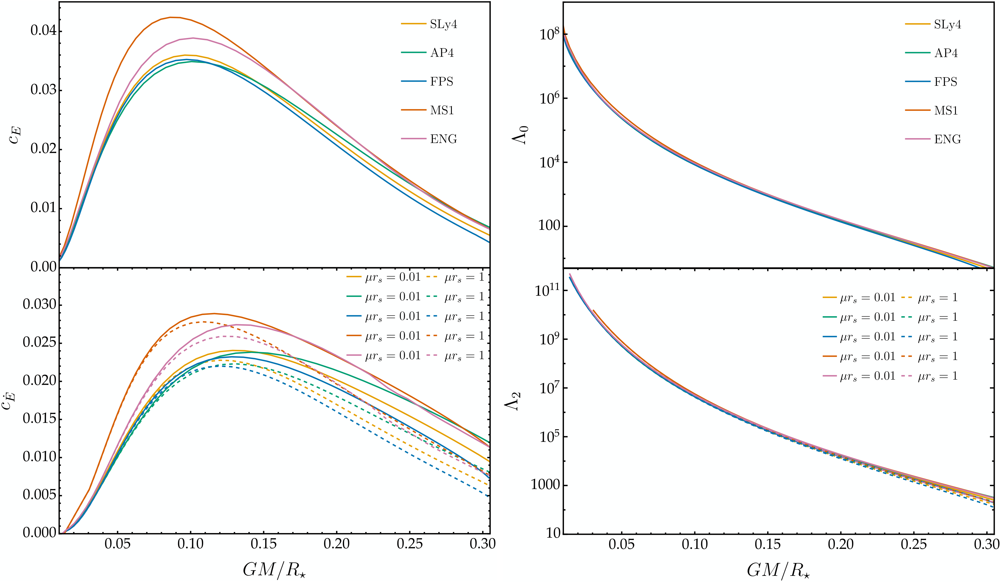<br />
图注：Left: The static TLNs~$c_E$ (top panel) and the dynamical TLNs~$c_{\dot E}$ (bottom panel) for the realistic EoS as functions of compactness. Here, $\mu$ is normalized by the Schwarzschild radius~$r_s=2GM$. Right: The corresponding $\Lambda_0$ (top) and $\Lambda_2$ (bottom) as functions of compactness.<br />
对应解读：对应“建议重点查看的图表”第1项和“关键图表逐图导读”图1：动力学 Love 数随紧致度 C 的曲线。<br />
入选理由：该图直接给出静态 TLN 与动力学 TLN 以及对应的 \Lambda_0、\Lambda_2 随紧致度的变化，是判断小紧致度增强、状态方程分散和动力学潮汐核心物理的最关键图。<br />
来源与置信度：\(arxiv_source\)；high；\(arxiv_source\) / draft.tex:figure[2]</p>
<p><strong>Fig06</strong><br />
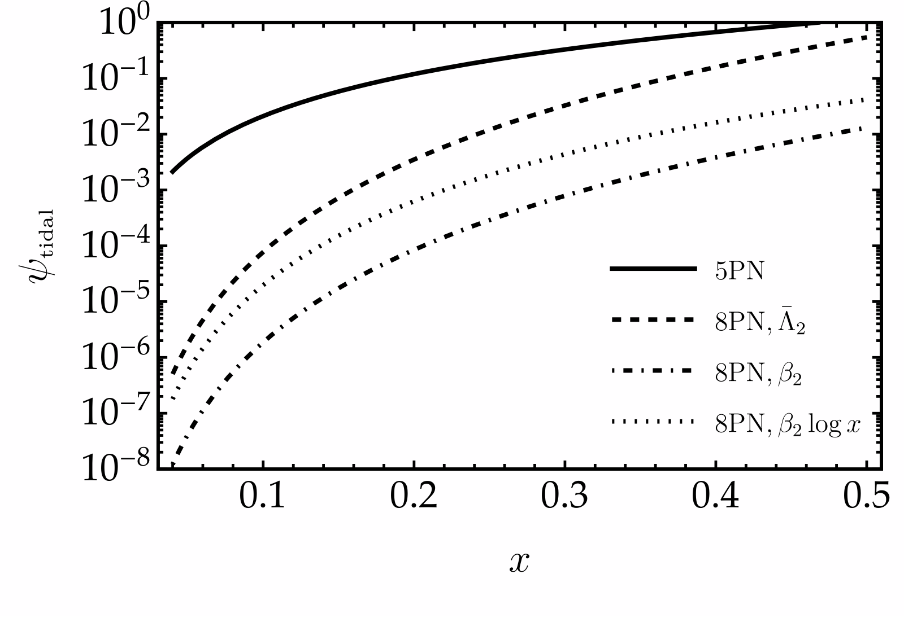<br />
图注：Absolute contributions to the tidal phase as a function of the dimensionless binary frequency $x$, for a representative neutron-star binary with equal masses $m_\NS = 2.2 M_\odot$ and AP4 EoS. The four contributions correspond to the leading static (5PN) tidal term $\propto \Lambda_0$ (solid line), the two finite dynamical (8PN) terms $\propto \bar{\Lambda}_2$ (dashed line) and $\propto \beta_2$ (dot-dashed line), and the logarithmic running term $\propto \beta_2 \log x$ (dotted line), as defined in Eqs.~\(\eqref{eq:phase}\) and~\(\eqref{eq:B2_def}.\) The static Love number contribution dominates across the entire inspiral band, while the finite 8PN dynamical term exceeds the logarithmic one, the latter being suppressed by additional factors of compactness, $C^{-3}$.<br />
对应解读：对应“建议重点查看的图表”第2、3项和“关键图表逐图导读”图3：潮汐相位修正随频率的贡献分解。<br />
入选理由：该图把静态5PN潮汐、有限8PN动力学项、\\(eta_2\) 项以及对数 running 项在波形相位中的绝对贡献逐项比较，最能支撑日报关于晚期旋近相位、有限项与对数项相对大小的解读。<br />
来源与置信度：\(arxiv_source\)；high；\(arxiv_source\) / draft.tex:figure[6]</p>
<p><strong>Fig07</strong><br />
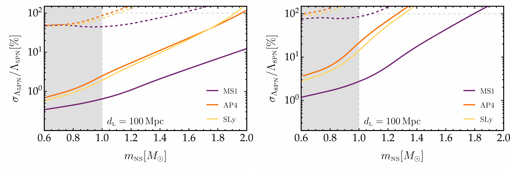<br />
图注：Relative $1\sigma$ uncertainty on the static $\Lambda_\text{\tiny 5PN}$ (left panel) and dynamical $\Lambda_\text{\tiny 8PN}$ (right panel) TLN parameters, for an equal-mass, nonspinning binary neutron star system with individual masses $m_\NS$, observed by LVK O4 (dashed) and ET (solid), assuming a luminosity distance of $d_\text{\tiny L} = 100\,{\rm Mpc}$. The colored lines correspond to different choices of realistic EoS. A measurement with $100\%$ error corresponds to the horizontal dashed line.<br />
对应解读：对应“建议重点查看的图表”第4项和“关键图表逐图导读”图4：Fisher 可测性与相对误差。<br />
入选理由：该图直接展示 LVK O4 与 ET 下静态和动力学 TLN 参数的1σ相对误差随中子星质量和状态方程的变化，是判断三代探测器是否能测量动力学 Love 数的核心证据。<br />
来源与置信度：\(arxiv_source\)；high；\(arxiv_source\) / draft.tex:figure[7]</p>
<p><strong>Fig08</strong><br />
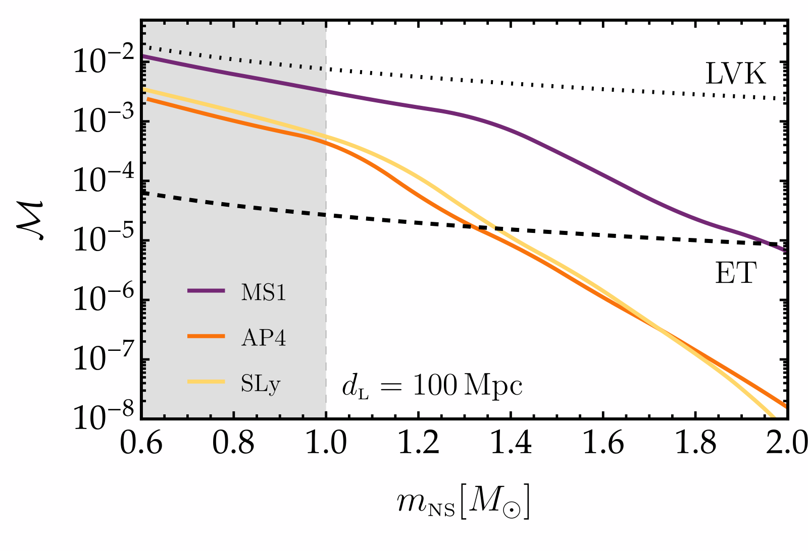<br />
图注：Mismatch $\mathcal{M}$ between a template that includes the dynamical tidal phase ($\Lambda_\text{\tiny 8PN}\neq 0$) and one that neglects it ($\Lambda_\text{\tiny 8PN}=0$), as a function of the individual neutron star mass $m_\NS$, for an equal-mass, non-spinning binary at $d_\text{\tiny L}=100\,{\rm Mpc}$. Horizontal dashed lines indicate the systematic-bias threshold $1/(2\rho^2)$ for LVK O4 and ET, respectively. Colored lines correspond to different EoS. Systems above the ET threshold are those for which omitting the dynamical tide induces a statistically significant bias in the inference of the static Love number.<br />
对应解读：对应“建议重点查看的图表”第5项和模型拟合段落中的系统偏差讨论。<br />
入选理由：该图用 mismatch 与系统偏差阈值比较，直接量化忽略动力学潮汐是否会导致静态 Love 数推断的显著偏置，和日报强调的‘偏差需与统计误差比较’高度匹配。<br />
来源与置信度：\(arxiv_source\)；high；\(arxiv_source\) / draft.tex:figure[8]</p>
<p><strong>Fig04</strong><br />
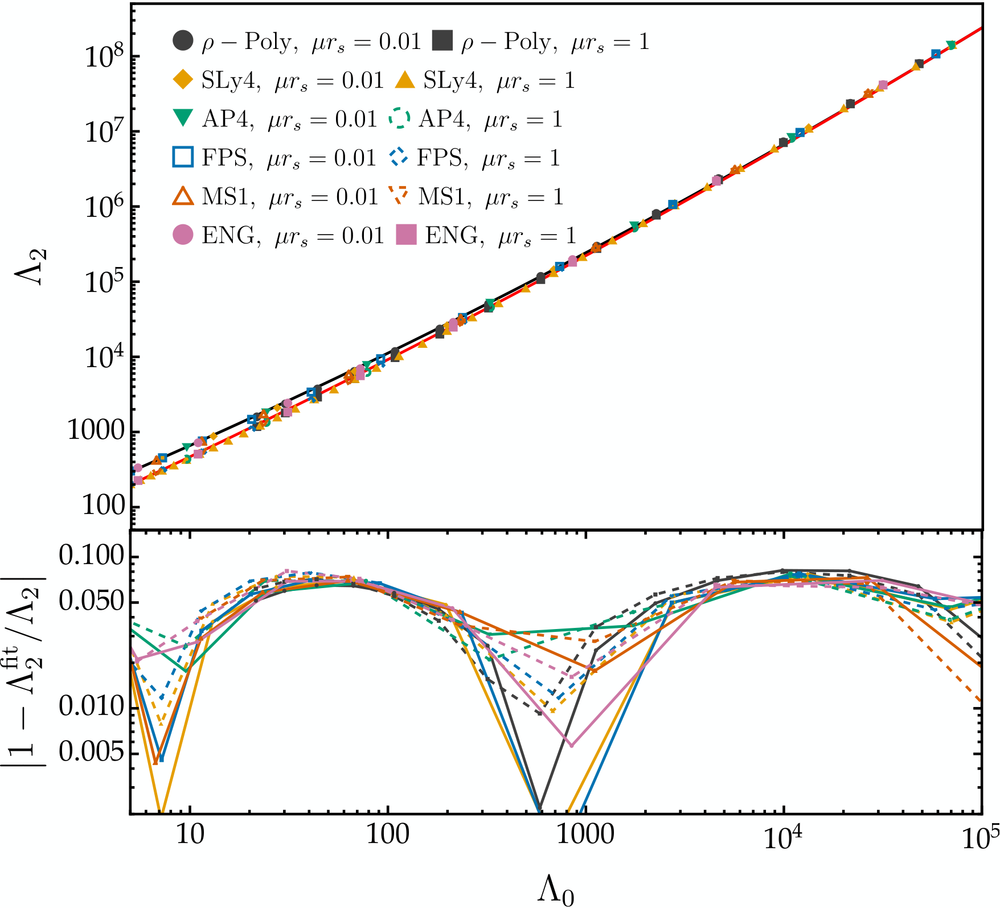<br />
图注：Top: Approximate universal relations between $\Lambda_0$ and $\Lambda_2$ with various EoS, demonstrating approximate universality at fixed $\mu r_s$. The black and red solid lines denote the fitting formulae~\(\eqref{eq:UniversalityFit}\) and~\(\eqref{eq:universalrel_murs1}\) with $\mu r_s=0.01$ and $\mu r_s=1$, respectively. Bottom: Relative difference between the empirical fit and each data of $(\Lambda_0,\Lambda_2)$ for a given stellar model and given $\mu r_s$.<br />
对应解读：对应“建议重点查看的图表”第1项和“关键图表逐图导读”中关于近似普适关系、残差和状态方程带宽的讨论。<br />
入选理由：该图展示 \Lambda_0 与 \Lambda_2 的近似普适关系，并在下方面板给出经验拟合相对残差，适合支撑日报中关于普适关系、状态方程依赖和拟合精度的解读。<br />
来源与置信度：\(arxiv_source\)；high；\(arxiv_source\) / draft.tex:figure[4]</p>
<p><strong>Fig03</strong><br />
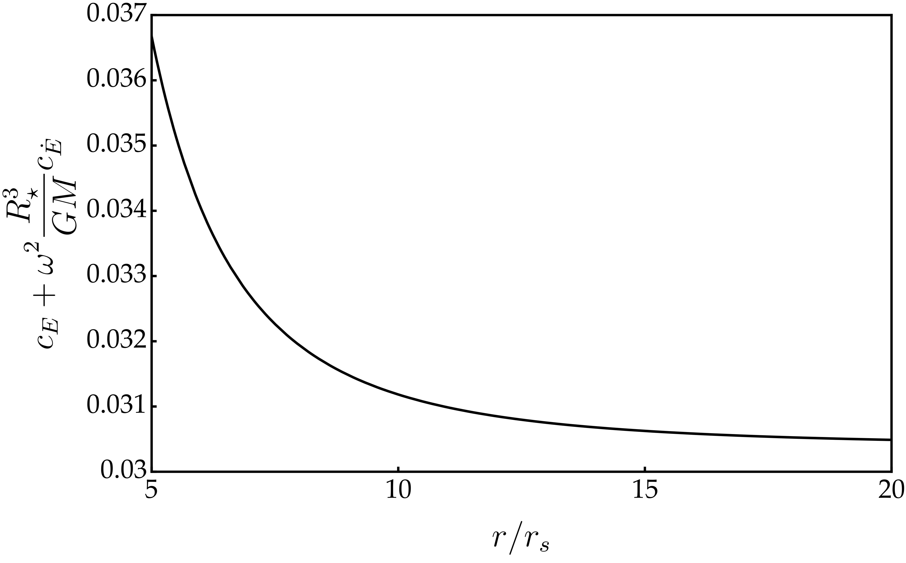<br />
图注：Estimated evolution of $c_E+\omega^2 R_\star^3/(GM) c_{\dot E}$ as a function of the orbital length scale~$r$. Here, $c_E$ and $c_{\dot E}$ are computed for the AP4 EoS with $GM/R_\star\simeq 0.153$. We set $\omega=(G M/r^3)^{1/2}$ and $\mu=1/r$, so that the logarithmic scale dependence of $c_{\dot E}$ is evaluated at the orbital scale.<br />
对应解读：对应“建议重点查看的图表”第2项和“关键图表逐图导读”图2：running 项、重整化尺度和物理组合的讨论。<br />
入选理由：该图展示包含 \(\omega^2\) \(c_{\dot E}\) 修正后的有效响应随轨道尺度变化，并显式采用 \(\mu=1/r\) 评估对数尺度依赖，可辅助说明 running 不是孤立可观测系数，而是进入物理响应组合。<br />
来源与置信度：\(arxiv_source\)；high；\(arxiv_source\) / draft.tex:figure[3]</p>
<h4 id="_79">强相关工作</h4>
<p>这篇工作直接连接两条文献线。一条是静态相对论潮汐 Love 数与双中子星状态方程约束，代表性关键词包括“relativistic tidal Love numbers neutron stars”、“GW170817 tidal deformability”和“equation of state constraints”。同类和基础工作包括 Hinderer 对相对论 Love 数的计算、Flanagan 与 Hinderer 对潮汐相位可测性的早期论证，以及 LIGO/Virgo 对 GW170817 的潮汐约束。</p>
<p>另一条是动力学潮汐和有效场论。动力学潮汐传统上常由 \(f\)-mode 或其他流体模展开描述，关键词包括“dynamic tides neutron star f-mode”、“effective field theory compact objects tidal response”和“worldline EFT Love numbers”。本文与这些工作的关系是补充也是修正：它保留模激发图像的物理直觉，但指出完整相对论低频响应还包含 EFT running 和有限局域项。若要找相反观点或潜在张力，应检索那些只用模展开解释晚期潮汐相位的波形论文，并比较它们是否能重现实本文的 \(\omega^2\ln\omega\) 结构。</p>
<p><strong>同一事件 / 同类源线索</strong>：</p>
<ul>
<li><a href="https://arxiv.org/abs/2606.19446">https://arxiv.org/abs/2606.19446</a></li>
<li><a href="https://arxiv.org/pdf/2606.19446">https://arxiv.org/pdf/2606.19446</a></li>
</ul>
<p><strong>相似工作</strong>：</p>
<ul>
<li><a href="https://arxiv.org/abs/0711.2420">https://arxiv.org/abs/0711.2420</a></li>
<li><a href="https://arxiv.org/abs/0709.1915">https://arxiv.org/abs/0709.1915</a></li>
<li><a href="https://arxiv.org/abs/1203.4352">https://arxiv.org/abs/1203.4352</a></li>
</ul>
<p><strong>基础理论 / 方法工作</strong>：</p>
<ul>
<li><a href="https://arxiv.org/abs/gr-qc/9403028">https://arxiv.org/abs/gr-qc/9403028</a></li>
<li><a href="https://arxiv.org/abs/0912.0384">https://arxiv.org/abs/0912.0384</a></li>
<li><a href="https://arxiv.org/abs/1805.11581">https://arxiv.org/abs/1805.11581</a></li>
</ul>
<p><strong>相反观点 / 张力线索</strong>：</p>
<ul>
<li><a href="https://arxiv.org/abs/1710.05832">https://arxiv.org/abs/1710.05832</a></li>
<li><a href="https://arxiv.org/abs/1805.11579">https://arxiv.org/abs/1805.11579</a></li>
</ul>
</details>
<h2 id="_80">说明</h2>
<p>评分由 LLM 给出初评，再由本地阈值策略过滤；IACT、TeV 伽马射线和高能中微子天文学按重点方向处理。</p>
    </main>
  </div>
</body>
</html>
